Introduction
Xous is a microkernel operating system with processes, threads, and messages. It is designed to have an extremely small kernel that delegates as much as possible to userspace. This book describes the operating system kernel as well as the services that support normal operating system behavior.
As this book is a work in progress, some chapters are placeholders and will appear blank.
The book is written for two audiences: kernel maintainers, and application developers.
Chapters 2 (Server Architecture), 3 (Introducing the Kernel), and 5 (System Startup) are primarily for kernel maintainers and system programmers.
Chapters 1 (Getting Started), 4 (Renode Emulation), 6 (Build System Overview), 7 (Messages) and 8 (Graphics) are more appropriate for application developers.
Chapter 9 (PDDB) covers the Plausibly Deniable DataBase, and has sub-sections for both kernel and application developers.
Architecture
Xous is a collection of small, single purpose Servers which respond to Messages. The Xous Kernel delivers Messages to Servers, allocates processing time to Servers, and transfers memory ownership from one Server to another. Every Xous Server contains a central loop that receives a Message, matches the Message Opcode, and runs the corresponding rust code. When the operation is completed, the Server waits to receive the next Message at the top of the loop, and processing capacity is released to other Servers. Every service available in Xous is implemented as a Server. Every user application in Xous is implemented as a Server.
Architecturally, Xous is most similar to QNX, another microkernel message-passing OS.
Servers
There are only a few "well known" Servers which are always available to receive Messages, and run the requested Opcode:
- The
xous-name-servermaintains a list of all registered Servers by name, and guards a randomised 128-bit Server ID for each of the Servers. The xous-name-server arbitrates the flow of Messages between Servers. - The
ticktimer-serverprovides time and time-out related services. - The
xous-log-serverprovides logging services. - The
timeserverpublicprovides real-time (wall-clock time) services. It is only accessed viastd::timebindings.
The remaining servers are not "well known" - meaning that the xous-name-server must be consulted to obtain a Connection ID in order to send the Server a Message. Such Servers include aes com dns gam jtag keyboard llio modals net pddb trng.
Messages, aka IPC
Every Message contains a Connection ID and an Opcode. The Connection ID is a "delivery address" for the recipient Server, and the Opcode specifies a particular operation provided by the recipient Server. There are two flavours of messages in Xous:
- Scalar messages are very simple and very fast. Scalar messages can transmit only 4 u32 sized arguments.
- Memory messages can contain larger structures, but they are slower. They "transmit" page-sized (4096-byte) memory chunks.
Rust structs need to be serialized into bytes before they can be passed using Memory Messages. Xous provides convenience bindings for rkyv, so any struct fully-annotated with #[derive(rkyv::Archive, rkyv::Serialize, rkyv::Deserialize)] can be serialized into a buffer by the sender and deserialized by the recipient.
The most simple Server communication involves a non-synchronizing "fire and forget" style of Messaging. The Sender sends a Message and continues processing immediately. The Recipient will receive the Message when it arrives, and process the Opcode accordingly. End of story. The ownership of the Message memory passes from the Sender to the Recipient and is Dropped by the Recipient. While there will be a delay before the Message is received - the sequence is assured. In the code, these are referred to as either Scalar Scalar Messages or Send Memory Messages.
Alternatively, A Server can send a synchronous Message, and wait (block) until the Recipient completes the operation and responds. In this arrangement, the Message memory is merely lent to the Recipient (read-only or read-write) and returned to the Sender on completion. While the sender Server "blocks", its processing quanta is not wasted, but also "lent" to the Recipient Server to complete the request promptly. In the code, these are referred to as either BlockingScalar Scalar Messages, or Borrow or MutableBorrow Memory Messages. Borrow messages are read-only, MutableBorrow are read-write, with semantics enforced by the Rust borrow checker.
asynchronous Message flow is also possible. The Sender will send a non-synchronous Message, which the kernel will amend with a "return token". The Recipient Server will complete the operation, and then send a non-synchronous Message in reply to this return token.
A Server may also send a synchronous Message and wait for a deferred-response. This setup is needed when the recipient Server cannot formulate a reply within a single pass of the event loop. Rather, the recipient Server must "park" the request and continue to process subsequent Messages until the original request can be satisfied. The request is "parked" by either saving the msg.sender field (for Scalar messages) or keeping a reference to the MessageEnvelope (for Memory messages). Memory Messages automatically return-on-Drop, relying on the Rust borrow checker and reference counting system to enforce implicit return semantics.
Acknowledgement
This project is funded through the NGI0 PET Fund, a fund established by NLnet with financial support from the European Commission's Next Generation Internet programme, under the aegis of DG Communications Networks, Content and Technology under grant agreement No 825310.
 |
Getting Started
The wiki is going to be the most up-to-date source of information for getting started, as it is still a topic in flux.
Below are some excerpts from the Wiki, but some links may be out of date.
Update Your Device
- Updating your device.
- Videos: Install a debug cable; Assemble a Limited Edition
- Bleeding-edge binaries can be found at the CI server. Use at your own risk.
- Releases: please check the corresponding README within each subdir for notes.
Setting up Security
- Inspecting your mainboard
- Initialize Root Keys on "factory new" devices, by selecting the item from the main menu.
- (Optional) Burn Battery-Backed RAM keys Note: do not use this if you plan to store long-term secrets on the device.
Jargon
- Jargon: Confused by terms like SoC and EC? You're not alone.
Other Issues
Pre-Boot & Security
- What happens before boot? fills in the details of everything that happens before the first instruction gets run.
- "Secure Boot" and key ROM layout
- eFuse/BBRAM FPGA key FAQ
Between the Software and Hardware: Hardware Abstractions
- UTRA Hardware register access abstraction for Xous
- Peripheral access conventions Goals for hardware register abstractions
- COM Protocol between the embedded controller (EC) and the main SoC
Hardware Documentation
- SoC register set / generated from SoC Litex Design Source
- SoC block diagram is embedded in the README for the SoC
- EC register set / generated from EC Litex Design Source
- Hardware design files PDFs of schematics are in the "mainboard-*" directories
TRNG Chronicles
- Physics and electrical design of the external Avalanche generator
- Notes on Characterization and debugging of raw sources
- On-line health monitoring
- Post-Generation Conditioning with ChaCha
Audit Trail
- crate-scraper is the beginning of a tool that helps with audit trails. It saves all the source code derived from
crates.ioto build Xous, and collates all thebuild.rsfiles into a single mega-file for faster manual inspection.
Meta-Issues
- imports How imported repositories that are not yet stand-alone crates are managed
- Emulation
- Tools Helper tools to build bootable images
- Converting Wiki Pages from ODT to Markdown
Hello, World!
- You will need the latest stable Rust. For now, Xous is tightly coupled to the latest stable Rust toolchain.
- One should be able to run
cargo xtask runafter cloning xous-core, and it will pop up a "host-mode" emulated version of Precursor.- You should be prompted to install the
xoustarget the very first time you runcargo.- If you have updated
rustor have tinkered withstdon your system, you can re-install thexoustarget withcargo xtask install-toolkit --force, and then runrm -r targetto force remove stale build files.
- If you have updated
- You may also need to install some additional libraries, such as
libxkbdcommon-dev. - :warning: hosted mode is literally Xous running on your local host, which means it supports more features than Xous on native hardware:
- We do not have
tokiosupport planned anytime soon. - We do not have
Filesupport in Xous; instead, we have thepddb. Netsupport in actively in development and we hope to have fairly robust support forlibstdNetbut, note thatsocket2crate (which is not part of Rustlibstd) does not recognize Xous as a supported host.
- We do not have
- It is recommended to try compiling your configuration for a real hardware target or Renode early on to confirm compatibility, before doing extensive development in hosted mode.
- You should be prompted to install the
- Make your own app:
- Please refer to the manifest.json documentation for integration notes
replapp demo is the starting point for users who want to interact with their device by typing commands. This demo leverages more of the Xous UX built-in frameworks.ballapp demo is the starting point for users who prefer to run close to the bare iron, getting only key events and a framebuffer for crafting games and bespoke apps.
Coding Style
Lint
Any code in main should be free of rustc lint.
Formatting
Generally, most stable APIs and crates should be formatted with the Rust formatter. However, there are some idioms in Xous code that format quite poorly with the default Rust formatter options.
We are waiting on the stabilization of more rustfmt features to define a custom
rustfmt.toml to address this before making formatting mandatory. It's been a few
years waiting for this, though, so we might just bite the bullet and run rustfmt
with +nightly and the features we need in rustfmt.toml, so that
we can have a uniform style.
Trailing whitespaces are frowned upon.
Exception Handling
Background
A mistake was made early on in defining the Xous API where all errors were propagated, even for operations that are supposed to be infalliable or there is no sensible way to handle an error if it were to arise.
The subtlety is that some errors in Rust are more like assert statements.
For example, a function that unpacks a message into a struct could fail. If such
a failure is encountered, then you'd like to see a panic showing that exact line
of code so you can fix the bug. There isn't a sensible alternative code path at run-time,
because the root cause was likely a type mismatch error.
In most of the original code base, that error would be propagated up the call
stack as an InternalError, until you get back to your main loop, at which point
the main loop just throws up its hands and reports a panic but at a line of code
several call frames away from the offending statement. Normally this problem
can be fixed by reading the stack trace from a panic-unwind, but Xous does not have
mature panic-unwind support and also the device's screen real estate is limited
so a deep call stack cannot be displayed entirely on the screen.
Recommendation
We are in the process of refactoring code from going to a "propagate all errors" rule to a "panic on infalliable failures" rule. Infallible operations include most syscalls (except ones that are explicitly fallible) and helper methods meant to transform inter-process messages and buffers into types (note that this does not include methods that receive, for example, arbitrary messages over network).
A simple .unwrap() is probably sufficient to check the results of most infalliable operations,
because the panic handler will print a panic on that line
unwrap() may even be preferable to a .expect("helpful error message") in most
cases, because "helpful error message" takes memory to store, increases the
binary size, and in most cases the line of code where the panic happened is the most
informative part of the error message.
Any error that happen in fallible operations (timeouts, OOMs, disconnects, etc.) should be handled and/or passed up the stack.
Server Architecture
This chapter is written for kernel maintainers.
Application programmers should see caller idioms and messages for details on how to use servers.
What is the difference between a Thread and a Server?
A Server is a messaging construct, whereas threads refer to execution flow. You can have a thread without a Server, and you can have multiple Servers referenced in a thread.
Threads in Xous are conventional: just a PC + stack that runs in a given process space. A single process can have up to 32 threads, and each thread will run until their time slice is up; or they yield their time slice by either explicitly yielding, or blocking on something (such as a blocking message).
Blocking messages dovetails into the concept of servers: in Xous, server is basically just a 128-bit ID number that servers as a mailbox for incoming messages. There is a limit of 128 servers in Xous across all processes and threads. Within that limit, one can allocate all the servers they want for a given thread, although it's not terribly useful to do that.
Messages specify a 128-bit server ID as a recipient; and, the typical idiom (although it doesn't have to be this way) is for a thread to wake up, initialize, allocate a server ID, and then wait for a message to arrive in its inbox.
If no message arrives, the thread consumes zero time.
Once a message arrives, the thread will be unblocked to handle the message when its quantum comes up. The thread may receive a quantum through the normal round-robin pre-emptive scheduler, but it could also receive a quantum in the case that a blocking message is sent from another thread. What happens then is the sender yields the remainder of its time to the receiving server, so that the message may be handled immediately.
As a counter-example, a "valid" but not recommended way to communicate between threads in Xous is to do something like:
let sem = Arc::new(AtomicBool::new(false));
thread::spawn(
let sem = sem.clone();
move || {
loop {
if sem.load(Ordering::SeqCst) {
// do something useful here
// do it just once
sem.store(false, Ordering::SeqCst);
} else {
// we could be nice and yield our quantum to another thread
xous::yield_slice();
// but even if you forget to yield, eventually, the pre-emptive
// scheduler will stop polling and allow another thread to run.
}
}
}
);
// Later in the parent thread, use this to trigger the child thread:
sem.store(true, Ordering::SeqCst);
The "bad example" above starts a thread that just polls the sem variable until it is true before a one-shot execution of the thing it's supposed to do.
The problem with this construction is that it will constantly run the CPU and always take a quantum of time to poll sem. This is very inefficient; it actually burns more battery, and has a material impact on user experience to do it this way.
A more "Xous" way to do this would be:
let sid = xous::create_server().unwrap();
let conn = xous::connect(sid).unwrap();
thread::spawn(
// sid automatically clones here
move || {
loop {
let msg = xous::receive_message(sid).unwrap();
// typically one would decode an opcode from the message body, so you can dispatch more than one function.
let _opcode: Option<ActionOp> = FromPrimitive::from_usize(msg.body.id());
// but in this case, we have exactly one thing, so:
// do something useful here
// indicate that we got our thing done
xous::return_scalar(msg.sender, retval).unwrap();
}
}
);
// Later in the parent thread, use this to trigger the child thread:
xous::send_message(conn,
Message::new_blocking_scalar(0 /* this is the opcode field */,
0, 0, 0, 0) // up to 4 "scalar" arguments can be sent as well
).unwrap();
The above send_message() would yield the remaining quantum of time for the parent thread, and dispatch into the child thread. The child would receive the message, do "something useful" and return a value to the caller. Assuming there was still time left in the quantum, this return_scalar would return execution back to the parent thread!
If the message was not blocking, the parent thread would continue executing until its quantum is completed, and then the child thread would handle the message only then. Assuming the child thread can handle the response very quickly, it would yield the remainder of its quantum once it completed doing "something useful" and it returned to the top of its loop where it calls receive_message(), and found its input queue to be empty.
Thus, Xous is carefully coded such that everything blocks if it's not being used, using the idiom above. Crates like crossbeam are implemented using condvar which intenally uses servers and messages to ensure that blocking waits are efficient.
So, in general, if the CPU load bar is pegged to 100% and nothing is "going on" (perhaps just a spin-wait), it's considered a bug.
Synchronization Primitives
Synchronization primitives are provided via the Ticktimer Server. This includes mutexes, process sleeping, and condvars.
Thread Sleeping
Thread sleeping is a primitive that is implemented by the ticktimer server.
This takes advantage of the fact that a sender will suspend a thread
until a BlockingScalar message is responded to.
In order to suspend a thread, simply send a BlockingScalar message
to the ticktimer server with an id of 1 and an arg1 indicating
the number of milliseconds to sleep.
If you need to sleep for more than 49 days, simply send multiple messages.
Mutex
Mutexes allow for multiple threads to safely access the same data. Xous Mutexes have two paths: A fast path, and a slow path. Non-contended Mutexes traverse the fast path and will not need a context switch. Contended Mutexes will automatically fall back to the slow path.
The core of a Mutex is a single AtomicUsize. This value is 0 when
the Mutex is unlocked, and nonzero when it is locked.
Mutex: Locking
Locking a Mutex involves a simple try_lock() operation. In this
operation, atomic instructions are used to replace the value 0
with the value 1, failing if this is the case.
pub unsafe fn try_lock(&self) -> bool {
self.locked.compare_exchange(0, 1, SeqCst, SeqCst).is_ok()
}
If the Mutex is locked, then the current thread will call yield_slice()
which hands execution to another thread in the current process in the hope
that the other thread will release its mutex.
This currently occurs three times.
If the lock still cannot be locked, then it is "poisoned". Instead of
swapping 0 for 1, the thread does an atomic Add of 1 to the current
value. If the resulting value is 1 then the lock was successfully
obtained and execution may continue as normal.
However, if the value is not 1 then the process falls back to the Slow Path. This involves sending a BlockingScalar to the ticktimer
server with an id of 6 and arg1 set to the address of the Mutex.
Mutex: Unlocking
Unlocking a Mutex on the Fast Path simply involves subtracting 1 from
the Mutex. If the previous value was 1 then there were no other
threads waiting on the Mutex.
Otherwise, send a BlockingScalar to the ticktimer server with
an id of 7 and arg1 set to the address of the Mutex.
Condvar
Condvar is Rust's name for "conditional variables". Broadly speaking, they are instances where one thread takes an area of memory and says "Wake me up sometime in the future." A different thread can then say "Wake up one other thread that's waiting on this object." Or it can say "Wake up all other threads that are waiting on this object."
Condvar: Waiting for a Condition
To suspend a thread until a condition occurs, or until a timeout hits,
allocate an area of memory for the condvar. Then send a BlockingScalar
message to the ticktimer server with an id of 8. Set arg1 to the
address of the condvar.
In order to add a timeout, set arg2 to the number of milliseconds to
wait for. Times longer than 49 days are not supported, so multiple
calls will be required. If no timeout is required, pass 0 for arg2.
Condvar: Signaling Wakeups
To wake up another thread, send a BlockingScalar message to the ticktimer
server with an id of 9, and set arg1 to the address of the condvar.
arg2 should contain the number of blocked threads to wake up.
In order to wake only one thread, pass 1.
Introducing the Kernel
Xous is a microkernel design that tries to keep as little as possible inside the main kernel. Instead, programs can start "Servers" that process can connect to in order to accomplish a task.
Processes are isolated, and therefore an MMU is strongly recommended. One process can have multiple threads, and processes cannot interact with one another except by passing Messages.
A Message is a piece of data that can be sent to a Server. Messages contain one usize ID field that may be used to identify an opcode, and may additionally contain some memory or some usize scalars.
Additionally, a Message may be either blocking, in which case it will wait for the Server to respond, or non-blocking, where they will return immediately.
"Drivers" are really just Servers. For example, to print a string to the console, send a StandardOutput (1) opcode to the server "xous-log-server " with a &[u8] attached to some memory. The process will block until the server is finished printing.
The entire Xous operating system is built from these small servers, making it easy to work on one component at a time.
Memory and mapping
Memory is obtained by issuing a MapMemory syscall. This call can optionally provide a physical address to map. If no memory is specified, a random physical page is provided. The process has no way of knowing the physical address of the page.
If the caller allocates memory from the primary region, it will be zeroed. If it allocates memory from an ancillary region such as a registor or a framebuffer, then that memory will not be initialized.
Processes can use this to allocate memory-mapped regions in order to create drivers.
Interrupts
Processes can allocate interrupts by calling the ClaimInterrupt call. If an interrupt has not been used, then that process will become the new owner of that interrupt. This syscall requires you to specify an address of a function to call, and you may optionally provide an argument to pass to the function handler.
There is no way to disable interrupts normally, except by handling an interrupt. That is, interrupts are disabled inside of your interrupt handler, and will be re-enabled after your interrupt handler returns.
There are a very limited set of functions that may be called during an interrupt handler. You may send nonblocking Messages and allocate memory, for example. However you may not Yield or send blocking Messages.
A common pattern for "disabling interrupts" is to come up with an interrupt that does nothing but trigger on-demand and handling the requisite code in that function. This is used by the suspend/resume server, for example, in order to ensure nothing else is running when the system is powering down.
Supported Platforms: RISC-V 32 and Hosted
Xous currently supports two platforms: RISC-V 32 and Hosted mode.
RISC-V 32 is the hardware that ships in Betrusted and Precursor, and is what is available in the Renode emulator.
An additional platform is Hosted mode, which targets your desktop machine. This can be used to debug builds using desktop-class debuggers such as rr or even just gdb. You can also use profilers in order to discover where code performance can be improved.
Hosted mode is discussed in more detail later
Memory Management in Xous
Memory is allocated with the MapMemory syscall. This call accepts four arguments:
- physical:
Option<NonZeroUsize>: The physical address you would like to allocate. SpecifyNoneif you don't need a particular address. - virtual:
Option<NonZeroUsize>: The virtual address you would like to allocate. SpecifyNoneif you don't need a particular virtual address. - size:
NonZeroUsize: The size of the region to allocate. This must be page-aligned. - flags:
MemoryFlags: A list of platform-specific flags to apply to this region.
The memory will return a MemoryRange that encompasses the given region.
You can free memory with UnmapMemory, though be very careful not to free memory that is currently in use. UnmapMemory simply takes the MemoryRange returned by MapMemory.
Physical Addresses
A program rarely needs to access physical addresses, and in most operating systems it's not the kind of thing you can actually do. However, Xous is designed to be embedded, so it's entirely legal to request a physical address.
The trick is that you can only request physical addresses that actually exist. For example, you cannot request a physical address for a mirrored region of a peripheral because that is not a valid address.
If you request a physical address from main RAM, the memory will be zeroed when you receive it. Peripherals and ares that are not in main RAM will not be zeroed. It is for this reason that system services are recommended to claim all peripherals before running user programs.
Virtual Addresses
All Xous programs run with virtual memory enabled. Attempting to perform an illegal operation will result in an exception. If you have an exception handler installed, illegal memory accesses will run this exception handler which may fix up the exception.
Demand Paging
When you allocate memory using MapMemory(None, None, ..., ...), you will be handed memory from the DEFAULT_BASE. This memory will not be backed by a real page, and will only be allocated by the kernel once you access the page. This allows threads to allocate large stacks without running out of memory immediately.
Pages that are mapped-but-unallocated are visible in a process' page table view. As an example, consider the following excerpt from a page table view:
38 60026000 -> 400a3000 (flags: VALID | R | W | USER | A | D)
41 60029000 -> 40108000 (flags: VALID | R | W | A | D)
42 6002a000 -> 40109000 (flags: VALID | R | W | A | D)
43 6002b000 -> 00000000 (flags: R | W)
44 6002c000 -> 00000000 (flags: R | W)
Addresses 0x60026000 (#38), 0x60029000 (#41), and 0x6002a000 (#42) are all allocated. The rest of the pages are valid-but-unallocated.
Address 0x60026000 (#38) is mapped to the process and has a valid physical address. Reads and writes to this page are backed by physical address 0x400a3000.
Addresses 0x60029000 (#41) and 0x6002a000 (#42) are still owned by the kernel, likely because they were being cleared.
Addresses 0x6002b000 (#43) and 0x6003c000 (#44) are on-demand allocated. They have no physical backing, and attempting to access them will result in a kernel fault where they will be allocated. When the page is allocated, it will be given the flags R | W in addition to default kernel flags.
The Heap
When we talk about "The Heap" we mean data that is managed by functions such as malloc. Xous has a pair of syscalls that behave vaguely like the Unix brk command.
IncreaseHeap(usize, MemoryFlags) will increase a program's heap by the given amount. This returns the new heap as a MemoryRange.
To decrease the heap by a given amount, call DecreaseHeap(usize).
Note that you must adjust the heap in units of PAGE_SIZE.
You can avoid using these syscalls by manually allocating regions using MapMemory, however they are a convenient abstraction with their own memory range.
liballoc as bundled by Xous uses these syscalls as a backing for memory.
Virtual Memory Regions
There are different memory regions in virtual address space:
| Address | Name | Variable | Description |
|---|---|---|---|
| 0x00010000 | text | - | Start of .text with the default riscv linker script (riscv64-unknown-elf-ld -verbose) |
| 0x20000000 | heap | DEFAULT_HEAP_BASE | Start of the heap section returned by IncreaseHeap |
| 0x40000000 | message | DEFAULT_MESSAGE_BASE | Base address where MemoryMessage messages are mapped inside of a server |
| 0x60000000 | default | DEFAULT_BASE | Default region when calling `MapMemory(..., None, ..., ...) -- most threads have their stack here |
| 0x7fffffff | stack | - | The default stack for the first thread - grows downwards |
| 0xff000000 | kernel | USER_AREA_END | The end of user area and the start of kernel area |
| 0xff400000 | pgtable | PAGE_TABLE_OFFSET | A process' page table is located at this offset, accessible only to the kernel |
| 0xff800000 | pgroot | PAGE_TABLE_ROOT_OFFSET | The root page table is located at this offset, accessible only to the kernel |
In addition, there are special addresses that indicate the end of a function. The kernel will set these as the return address for various situations, and they are documented here for completeness:
| Address | Name | Variable | Description |
|---|---|---|---|
| 0xff802000 | retisr | RETURN_FROM_ISR | Indicates the return from an interrupt service routine |
| 0xff803000 | exitthr | EXIT_THREAD | Indicates a thread should exit |
| 0xff804000 | retex | RETURN_FROM_EXCEPTION_HANDLER | Indicates the return from an exception handler |
Hosted Mode
Hosted mode may be built by running cargo xtask run. This causes Xous to be compiled using your native architecture rather than building for riscv32imac-unknown-xous-elf. Your native architecture is probably 64-bits, and has a lot more memory than Betrusted does. Xous also runs in userspace, which means a lot of things end up being very different in this mode.
The API is designed to abstract away these differences so that programs may run seamlessly on both Hosted and Native (RISC-V 32) mode.
The Kernel as a Process
When you build processes using cargo xtask run, the kernel is compiled as an ordinary, native program. This program can be run by simply running ./target/release/kernel. If you run this by itself after running cargo xtask run, you'll see the following output:
$ ./target/release/kernel
KERNEL: Xous server listening on 127.0.0.1:1238
KERNEL: Starting initial processes:
PID | Command
-------+------------------
The kernel simply acts as a router, passing messages between processes. This poses some challenges because processes need to be able to connect to one another, and the kernel needs to be able to match a network connection to a given process. Additionally, there needs to be a list of initial processes to start.
Initial Processes
In order to get a list of initial processes, they are simply all passed on the command line. For example, we can run the kernel with a log server and see the following output:
$ ./target/release/kernel ./target/release/log-server
KERNEL: Xous server listening on 127.0.0.1:21183
KERNEL: Starting initial processes:
PID | Command
-------+------------------
2 | ./target/release/log-server
LOG: my PID is 2
LOG: Creating the reader thread
LOG: Running the output
LOG: Xous Logging Server starting up...
LOG: Server listening on address SID([1937076088, 1735355437, 1919251245, 544367990])
LOG: my PID is 2
LOG: Counter tick: 0
From this output, we can see that the kernel has started the log server for us. Multiple initial processes may be specified:
$ ./target/release/kernel ./target/release/log-server ./target/release/xous-names
KERNEL: Xous server listening on 127.0.0.1:3561
KERNEL: Starting initial processes:
PID | Command
-------+------------------
2 | ./target/release/log-server
3 | ./target/release/xous-names
LOG: my PID is 2
LOG: Creating the reader thread
LOG: Running the output
LOG: Xous Logging Server starting up...
LOG: Server listening on address SID([1937076088, 1735355437, 1919251245, 544367990])
LOG: my PID is 2
LOG: Counter tick: 0
INFO:xous_names: my PID is 3 (services/xous-names/src/main.rs:360)
INFO:xous_names: started (services/xous-names/src/main.rs:375)
Launching a Process
Processes are launched in the kernel by setting a series of environment variables and then spawning a new process. The following environment variables are currently used:
| Variable | Description |
|---|---|
| XOUS_SERVER | The IP and TCP port of the kernel |
| XOUS_PID | The unique process ID of this kernel, assigned by the Xous kernel |
| XOUS_PROCESS_NAME | The process name, currently taken from the executable name |
| XOUS_PROCESS_KEY | An 8-byte hex-encoded key that uniquely identifies this process |
A thread is created for this process to handle it and to route messages within the kernel. The XOUS_PROCESS_KEY is effectively a single-use token that is unique per process and is used to match a process within the kernel.
When the process launches it should establish a connection to the kernel by connecting to XOUS_SERVER and sending XOUS_PROCESS_KEY. This will authenticate the process with the kernel ane enable it to send and receive messages.
The initial handshake has the following layout:
| Offset (Bytes) | Size | Meaning |
|---|---|---|
| 0 | 1 | Process ID of connecting process |
| 1 | 8 | 8-byte process key |
Sending and Receiving Syscalls
In Hosted mode, syscalls are sent via a network connection. Because pointers are unsafe to send, usize is defined on Hosted mode as being 32-bits. Additionally, most syscalls will return NotImplemented, for example it does not make sense to create syscalls such as MapMemory.
Messages function normally in Hosted mode, however they are more expensive than on real hardware. Because messages get sent via the network, the entire contents of a Memory message must be sent across the wire.
Eight 32-bit values are sent, and these may be followed by any data in case there is a Memory message.
| Offset (Bytes) | Usage (Calling) |
|---|---|
| 0 | Source thread ID |
| 4 | Syscall Number |
| 8 | Arg 1 |
| 12 | Arg 2 |
| 16 | Arg 3 |
| 20 | Arg 4 |
| 24 | Arg 5 |
| 28 | Arg 6 |
| 32 | Arg 7 |
| 36 | Contents of any buffer pointed to by args |
The process should expect a return, and should block until it gets a response. When it gets a response, a memory buffer may be required that is the same size as the buffer that was sent. The contents of this buffer will be appended to the network packet in the same manner as the calling buffer. If the message is a Borrow, then this data will be the same as the data that was sent. If it is a MutableBorrow, then the server may manipulate this data before it returns.
| Offset (Bytes) | Usage (Return) |
|---|---|
| 0 | Target thread ID |
| 4 | Return type tag |
| 8 | Arg 1 |
| 12 | Arg 2 |
| 16 | Arg 3 |
| 20 | Arg 4 |
| 24 | Arg 5 |
| 28 | Arg 6 |
| 32 | Arg 7 |
| 36 | Contents of any returned buffer |
Threading
All Xous syscalls go to the kernel, however certain syscalls are simply stubs. One example of this is threading, where the kernel has no way of actually launching a thread.
The application is responsible for creating new threads, and may do so either by "sending" a CreateThread call to the kernel or by creating a native thread using std::Thread::spawn().
When launching a thread with CreateThread, the kernel will allocate a new "Xous TID" and return that to the application. The application will then launch its new thread and set the local THREAD_ID variable to this ID. This ID will be used as part of the header when sending syscalls to the kernel, and will be used to delegate responses to their waiting threads.
If an application calls std::Thread::spawn() then it will not have a THREAD_ID set. When the thread attempts to send a syscall, hosted mode will notice that THREAD_ID is None. When this occurs, Hosted mode will create a "fake" thread ID (starting at TID 65536) and call SysCall::CreateThread(ThreadInit {}) to register this new ID. Then all subsequent calls will use this fake thread ID.
Process Creation
Creating processes is a fundamental requirement of modern operating systems above a certain size. Xous supports process creation, although it does not prescribe an executable format nor does it even have a built-in loader.
Process creation arguments vary depending on the platform being targeted, making this one of the less portable aspects of Xous. All platforms support the CreateProcess syscall, however the arguments to this syscall vary widely.
Creating Processes in Hosted Mode
In Hosted mode, the ProcessArgs struct contains a full command line to be passed directly to the shell. This is actually used by the kernel during its init routine when it spawns each child process of PID 1.
Internally, the parent process is responsible for launching the process as part of the create_process_post() that gets called after the successful return of the CreateProcess syscall. As part of this, the hook sets various environment variables for the child process such as its 16-byte key stored in the XOUS_PROCESS_KEY variable, as well as the PID stored in the XOUS_PID variable.
Creating Processes in Test Mode
Test mode is a special case. Tests don't want to depend on files in the filesystem, particularly as multiple tests are running at the same time. To work around this, processes are created as threads. This is a special case intended to support heavily-parallel machines that can run all thread tests simultaneously, and is not normally used.
Creating Processes on Native Hardware (e.g. RISC-V)
Process creation on real hardware requires a minimum of six pieces of information. These are all defined in the ProcessInit struct, which gets passed directly to the kernel:
pub struct ProcessInit {
// 0,1 -- Stack Base, Stack Size
pub stack: crate::MemoryRange,
// 2,3 -- Text Start, Text Size
pub text: crate::MemoryRange,
// 4 -- Text destination address
pub text_destination: crate::MemoryAddress,
// 5 -- Entrypoint (must be within .text)
pub start: crate::MemoryAddress,
}
The stack defaults to 128 kB growing downwards from 0x8000_0000.
text refers to a region of memory INSIDE YOUR PROGRAM that will be detached and moved to the child process. This memory will form the initialization routine for the child process, and should contain no .bss or .data sections, unless it also contains code to allocate and set up those sections.
text_destination describes the offset where text will be copied. This address is determined by the link address of your initialization program.
The start is the address where the program counter will start. This is the address of your program's entrypoint. It must reside within the allocated text section, beginning at text_destination.
Native Hardware Entrypoint
The entrypoint for native hardware takes four arguments. When combined, these four arguments form a Server ID that can be used for sending additional data from the parent process to the child. An example loader program might look like the following:
pub extern "C" fn init(a1: u32, a2: u32, a3: u32, a4: u32) -> ! {
let server = xous::SID::from_u32(a1, a2, a3, a4);
while let Ok(xous::Result::Message(envelope)) =
xous::rsyscall(xous::SysCall::ReceiveMessage(server))
{
match envelope.id().into() {
StartupCommand::WriteMemory => write_memory(envelope.body.memory_message()),
StartupCommand::FinishStartup => finish_startup(server, envelope),
StartupCommand::PingResponse => ping_response(envelope),
_ => panic!("unsupported opcode"),
}
}
panic!("parent exited");
}
This compiles down to a very efficient program that can be used to load a larger program into the new address space. Memory is written using the WriteMemory opcode to load new pages into the nascent process, and FinishStartup is used to shut down the server and jump to the new process entrypoint.
Limitations of Created Processes
NOTE: The following is subject to fixes in the kernel, and do not currently apply. This information is presented here in order to explain oddities observed when these features are implemented.
Newly-created processes cannot create servers with a predefined Server ID. They can only create randomized servers.
Processes created using CreateProcess are not ever scheduled to run. Parent processes must donate their quantum to child processes in order for them to run. This is done with a special syscall.
When a parent process exits, all child processes will also exit. This is because those processes will not be scheduled anymore, so there's no point in letting them continue to run.
Debugging with GDB
The kernel supports enabling the gdb-stub feature which will provide a gdb-compatible server on the 3rd serial port. This server can be used to debug processes that are running, and when a process crashes the kernel will automatically halt the process for debugging.
When using the debugger, many features are supported:
- Listing processes on the system
- Attaching to a given process
- Listing threads
- Examining and updating memory
- Examining and updating registers
- Single-stepping (non-XIP processes)
- Inserting breakpoints (non-XIP processes)
The following features are NOT SUPPORTED:
- Watchpoints
- Inserting breakpoints in XIP processes
- Single-stepping XIP processes
Building a GDB-Compatible Image
For the toolchain, Xous has harmonized around the xpack gcc distribution, but other GCC distributions version of GDB (even those that target RV64) should work.
You probably want to set debug = true inside Cargo.toml. This will add debug symbols to the resulting ELF binaries which greatly enhance the debugging experience. You may also want to reduce the optimization level and turn off strip if it is set.
When running xtask to create images, the target processes you want to debug should not be XIP. XIP images run out of FLASH, which makes the code immutable and thus impossible for our debugger implementation to insert a breakpoint (our breakpoints are not hardware backed). The easiest way to do this is to use the app-image generator (instead of app-image-xip). However, if you've turned your optimizations to 0 and included debug symbols, it's possible this isn't an option because you'll run out of memory. In this case, you will need to modify app-image-xip to check for the target process name and toggle the flag on just that process to run out of RAM.
You will also need to pass --gdb-stub as an argument to xtask.
For example:
cargo xtask app-image --gdb-stub mtxchat --feature efuse --feature tls
Then, flash the resulting image to the target device as normal.
Attaching to the debugger (Renode)
If you're using Renode, then you can connect gdb to localhost:3456:
riscv-none-elf-gdb -ex 'tar ext :3456'
On Renode, port 3333 also exists, but it is useful mainly for debugging machine mode, i.e., when the hardware is in the loader or inside the kernel only.
3333is useful for when Xous itself has crashed, or when you're debugging the bootloader and Xous isn't even running. It's a stop-the-world debugger. Like "God Mode" on the Vex, where you really can do anything. Debugging there has no effect on the emulated world, so it's like stopping time and looking at things. This port also has no concept of processes or threads, so what process you're in is arbitrary every time you pause the debugger.3456is identical to what is presented on the hardware serial port (see next section). It's invasive, since processes will keep running when you attach but their timing will be skewed. It does, however, let you attach to a given process and get actual translated memory pages. With 3333 you kind of just hope that you don't have to deal with any MMU pages in a process, which is a nonissue as long as you're just debugging the kernel or bootloader.
Attaching to the debugger (Hardware)
On real hardware, you will first need to re-mux the serial port so that gdb is visible on serial. Then you can connect gdb to the target serial port.
For example, if you have a hardware Precursor device connected to a Raspberry Pi 3B+ with a debug HAT running Raspbian "Buster", you would first run this command in shellchat on the hardware device itself:
console app
This switches the internal serial port mux in the Precursor to the GDB port.
Then, on the Raspberry pi command line, you would run this:
riscv-none-elf-gdb -ex 'tar ext /dev/ttyS0'
Debugging a process
Within the gdb server, you can switch which file you're debugging. For example, to debug the ticktimer, run:
(gdb) file target/riscv32imac-unknown-xous-elf/release/xous-ticktimer
After setting the ELF file you will need to attach to the process. Use mon pr or monitor process to list available processes. Then, use attach to attach to a process:
(gdb) mon pr
Available processes:
1 kernel
2 xous-ticktimer
3 xous-log
4 xous-names
5 xous-susres
6 libstd-test
(gdb) att 2
Attaching to process 2
[New Thread 2.2]
[New Thread 2.3]
0xff802000 in ?? ()
(gdb)
You can switch processes by sending att to a different PID.
Debugging a thread
To list threads, use info thr:
(gdb) info thr
Id Target Id Frame
* 1 Thread 2.255 0xff802000 in ?? ()
2 Thread 2.2 xous::definitions::Result::from_args (src=...) at src/definitions.rs:474
3 Thread 2.3 xous::definitions::Result::from_args (src=...) at src/definitions.rs:474
(gdb)
To switch threads, use thr [n]:
(gdb) thr 2
[Switching to thread 2 (Thread 2.2)]
#0 xous::definitions::Result::from_args (src=...) at src/definitions.rs:474
474 match src[0] {
(gdb)
Important Note: GDB thread numbers are different from Xous thread numbers! GDB Always starts with 1, but Xous may have any number of threads running. GDB pays attention to the first column, and you are most likely interested in the second column.
Renode Emulation
Renode is a multi-device emulator written in C#. It is designed to assist in testing and development of software, and is also useful in developing new hardware blocks.
The emulator is available for Windows, Mac, and Linux. It is designed to simulate whole systems of devices, meaning it can easily capture the interactions between devices on a network or bus. It allows you to pause the system and inspect memory, single-step, and watch various sections of the bus.
There is extensive end-user documentation available at Read the Docs, which is highly recommended. The remainder of this chapter will cover recommendations on how to use Renode with Xous.
Quickstart using the Renode emulator
Xous uses Renode as the preferred emulator, because it is easy to extend the hardware peripherals without recompiling the entire emulator.
Download Renode and ensure it is in your path.
Then, build Xous:
cargo xtask renode-image
This will compile everything in release mode for RISC-V, compile the tools required to package it all up, then create an image file.
Finally, run Renode and specify the xous-release.resc REnode SCript:
renode emulation/xous-release.resc
Renode will start emulation automatically, and will run the same set of programs as in "Hosted mode".
Network support
If you are seeking to emulate a Xous build with apps requiring network support, then there is some additional setup.
Renode accepts the Ethernet frames that the EC sends to the simulated WF200, and then dumps them onto a network TAP interface called renodetap.
It is probably best to prepare the TAP interface and associated configuration before the emulation:
- linux distro with Network Manager:
nmcli c add con-name renodetun type tun ifname renodetun mode tap ipv4.method shared ipv6.method ignore - OpenSuSE Aeon: also requires installation of dnsmasq
transactional-update pkg install dnsmasq
Start the emulation with:
renode emulation/xous-release-tap.resc
Once the emulation is up and running then connect to one of the WiFi APs Renode1 ... Renode9 (any password will work)
Writing Renode C# Peripherals
Renode is written in C#, which means it has access to the entire base of C#. One feature of C# is the CSharpCodeProvider object which provides the CompileAssemblyFromSource(CompilerParameters, string[]) function. This means that Renode has a runtime C# compiler built in.
You can include C# files in the Renode console or in your startup script to dynamically add new peripherals to your environment. Xous uses this extensively in Betrusted since the hardware peripherals are still under development and therefore change regularly. Updating a hardware module in Renode simply involves modifying the .cs file and restarting Renode. There is no additional compile step.
Setting up an IDE -- Visual Studio Code
It is highly recommended to use a full IDE. The Renode API can change, and it can take time to restart Renode to recompile your C# files. An IDE will provide you with tab-completion and will immediately tell you if there is a code error.
The core of Renode is written in a full IDE such as Visual Studio or Monodevelop. These IDEs expect a full Project file that defines a single target output -- for example an executable or a linked library. With our usage of C# there is no single target since Renode will dynamically load the source files. To work around this, we create a stub project file that tricks the IDE into loading our assembly files and providing autocomplete. We never actually use this project file, but it's used behind the scenes automatically.
Broadly speaking, there are three steps to setting up an IDE:
- Download Visual Studio Code
- Copy the reference project file
- Modify the reference project file
- Install the C# extension.
To begin with download Visual Studio Code. It is available for Windows, Linux, and Mac.
Next, copy emulation/peripherals.csproj.template to emulation/peripherals.csproj. This is a C# Project file that is understood by Visual Studio and Visual Studio Code. The file name peripherals.csproj is in the .gitignore file, so don't worry about accidentally checking it in.
Edit peripherals.csproj and modify RenodePath to point to your Renode installation where the .dll files are located. On Linux this is likely /opt/renode/bin. On Windows this may be in C:\Program Files\.
Finally, install the C# for Visual Studio Code extension. This extension will activate, parse your .csproj, and start providing autocomplete and compile suggestions.
Creating a new Peripheral
To create a new peripheral, simply copy an existing peripheral to a new filename under emulation/peripherals/, making sure the filename ends in .cs.
Many examples exist in the emulation/peripherals/ directory, and you can find many more examples built into Renode.
A simple example could be a device that provides random numbers:
using Antmicro.Renode.Core;
using Antmicro.Renode.Core.Structure.Registers;
using Antmicro.Renode.Logging;
namespace Antmicro.Renode.Peripherals.Miscellaneous
{
public class ExampleRNGServer : BasicDoubleWordPeripheral, IKnownSize
{
public long Size { get { return 0x100; } }
public GPIO IRQ { get; private set; }
private readonly PseudorandomNumberGenerator rng = EmulationManager.Instance.CurrentEmulation.RandomGenerator;
private bool enabled = true;
private enum Registers
{
CONTROL = 0x0,
DATA = 0x4,
STATUS = 0x8,
AV_CONFIG = 0xc,
RO_CONFIG = 0x10,
READY = 0xc4,
EV_STATUS = 0xc8,
EV_PENDING = 0xcc,
EV_ENABLE = 0xd0,
URANDOM = 0xdc,
URANDOM_VALID = 0xe0,
TEST = 0xf8,
}
public ExampleRNGServer(Machine machine) : base(machine)
{
this.IRQ = new GPIO();
DefineRegisters();
}
private void DefineRegisters()
{
Registers.URANDOM.Define(this)
.WithValueField(0, 32, FieldMode.Read, valueProviderCallback: _ =>
{
if (!enabled)
return 0;
return (uint)rng.Next();
}, name: "URANDOM");
Registers.DATA.Define(this)
.WithValueField(0, 16, FieldMode.Read, valueProviderCallback: _ =>
{
if (!enabled)
return 0;
return (uint)rng.Next();
}, name: "DATA")
.WithValueField(16, 16, FieldMode.Read, valueProviderCallback: _ =>
{
return 0xf00f;
}, name: "SIGNATURE");
Registers.URANDOM_VALID.Define(this)
.WithFlag(0, FieldMode.Read, valueProviderCallback: _ => { return true; }, name: "URANDOM_VALID")
.WithFlag(1, FieldMode.Read, valueProviderCallback: _ => { return enabled; }, name: "ENABLE");
Registers.CONTROL.Define(this)
.WithFlag(0, FieldMode.Write, writeCallback: (_, val) => { enabled = val; }, name: "ENABLE");
}
}
}
There's a lot to take in there, particularly if you've never dealt with C# before. Let's go over the module line-by-line.
using Antmicro.Renode.Core;
using Antmicro.Renode.Core.Structure.Registers;
using Antmicro.Renode.Logging;
The first three lines import various packages to the current namespace. You'll most likely use these in all of your projects. Any valid C# namespace may be used, including core .Net libraries. This can be useful if you need networking, cryptography, or other exotic libraries. There are many useful logging functions as well. You'll notice that the final line is darker than the other two. This is because this package is currently unused -- we don't perform any logging currently. You can safely remove this final line, however it's useful to leave Logging as an import because it allows for autocompletion of Logging functions.
namespace Antmicro.Renode.Peripherals.Miscellaneous {
Next, we define the namespace for this module. The module MUST be under a namespace Antmicro.Renode.Peripherals.xxx namespace. In this case, it is under Antmicro.Renode.Peripherals.Miscellaneous. This namespacing provides a handy structure to various peripherals.
public class ExampleRNGServer : BasicDoubleWordPeripheral, IKnownSize {
Finally, we begin to define our class. This class is named ExampleRNGServer, and it inherits BasicDoubleWordPeripheral and IKnownSize.
The BasicDoubleWordPeripheral class provides several convenience functions that makes it easy to create a memory-mapped device. It means we don't need to manage accessors, and we can simply worry about the register values themselves.
Peripherals need to have a known size, so we inform C# that our client has a known size. The I stands for Interface. To find out which functions we must implement to conform to IKnownSize, hold Ctrl and click on IKnownSize. It will take you to the definition of IKnownSize, located inside Emulator.dll. You will note that the only thing we need to implement is log Size { get; }, which means we only need to create an accessor for the property Size.
public long Size { get { return 0x100; } }
public GPIO IRQ { get; private set; }
private readonly PseudorandomNumberGenerator rng = EmulationManager.Instance.CurrentEmulation.RandomGenerator;
private bool enabled = true;
Here we define our local properties and variables. We can see the Size property defined here. Our peripheral goes up to 0xf8, so we return that as a constant. This is used by Renode to ensure peripherals don't overlap, and to know which peripheral to invoke when memory is accessed.
There is an IRQ here as well, which is a GPIO. The way Renode handles interrupts is by reusing GPIO pins. We can trigger an interrupt by setting this GPIO, and the system will invoke an interrupt context on the CPU.
Finally there is a local variable that is part of this object and not visible outside of our class.
private enum Registers
{
CONTROL = 0x0,
DATA = 0x4,
STATUS = 0x8,
AV_CONFIG = 0xc,
RO_CONFIG = 0x10,
READY = 0xc4,
EV_STATUS = 0xc8,
EV_PENDING = 0xcc,
EV_ENABLE = 0xd0,
URANDOM = 0xdc,
URANDOM_VALID = 0xe0,
TEST = 0xf8,
}
We define an enum called Registers. This is simply a mapping of register names to register numbers. It is not a particularly special enum, however correct naming of the enum values will make it easier to define the register set later on. It is standard practice to define all possible registers in this enum, even if you do not implement them right away.
public ExampleRNGServer(Machine machine) : base(machine)
{
this.IRQ = new GPIO();
DefineRegisters();
}
This is the constructor for our device. It takes a single argument of type Machine. Because we inherit from BasicDoubleWordPeripheral, we will need to call the constructor for the base class. To figure out what the constructor looks like, hold Ctrl and click on BasicDoubleWordPeripheral. We can see that the constructor for that class simply takes one argument that's a Machine. Therefore, the first line of our constructor should invoke the base constructor directly. Which is what we do here.
We create a new GPIO and assign it to the IRQ. Renode will access our IRQ property if it wants to watch for interrupts. If our peripheral has no interrupts we can omit the IRQ property.
private void DefineRegisters() {
Finally, we invoke the DefineRegisters() function. It is the most complicated function in this class, however it's where most of the work is done. Let's look at each register definition in order.
Registers.URANDOM.Define(this)
.WithValueField(0, 32, FieldMode.Read, valueProviderCallback: _ =>
{
if (!enabled)
return 0;
return (uint)rng.Next();
}, name: "URANDOM");
The Define(this) function comes from BasicDoubleWordPeripheralExtensions, which is one of the classes provided to us as a subclass of BasicDoubleWordPeripheral. It allows us to define a register on an enum type.
The WithValueField() function defines a value for a register across a range of values. In this case, we define a value beginning at bit 0 that is 32-bits wide. We define this register as a FieldMode.Read register, meaning writes will be ignored. When a device accesses this register, the valueProviderCallback function will be called.
What follows is a C# closure. The first argument is the register itself, which we ignore since we are not interested in it. Therefore, the variable is named _. If the block is disabled, we return 0, otherwise we return a uint from the class RNG provider.
Finally, we name the register URANDOM.
Registers.DATA.Define(this)
.WithValueField(0, 16, FieldMode.Read, valueProviderCallback: _ =>
{
if (!enabled)
return 0;
return (uint)rng.Next();
}, name: "DATA")
.WithValueField(16, 16, FieldMode.Read, valueProviderCallback: _ =>
{
return 0xf00f;
}, name: "SIGNATURE");
This register contains two value fields. The first is at offset 0, and is 16-bits wide. The second is at offset 16, and is also 16-bits wide.
The valueProviderCallback function is called for each field, which avoids the need for any manual bit shifting.
If the peripheral is not enabled, then the DATA field returns 0. If it is enabled, then it returns a 16-bit random value.
Because of the way this register is defined, the top 16 bits will always be 0xf00f. Therefore, the register's value will be either 0xf00f0000 or 0xf00fRAND.
Registers.URANDOM_VALID.Define(this)
.WithFlag(0, FieldMode.Read, valueProviderCallback: _ => { return true; }, name: "URANDOM_VALID")
.WithFlag(1, FieldMode.Read, valueProviderCallback: _ => { return enabled; }, name: "ENABLE");
This register defines two flags. The first flag is at bit 0, and the second flag is at bit 1. Flags are always one-bit boolean values, which is why the valueProviderCallback returns true instead of a uint like we've seen in the past. Similarly to WithValueField(), a WithFlag value will call the valueProviderCallback for each flag, avoiding the need to do complex shifting.
Registers.CONTROL.Define(this)
.WithFlag(4, FieldMode.Write, writeCallback: (_, val) => { enabled = val; }, name: "ENABLE");
Finally we define the CONTROL register. Our implementation simply has an ENABLE bit at offset 4. This is the first time we've seen a writeCallback. This closure takes two arguments: the register itself and the written value.
Using the new peripheral
To use the new peripheral, save it in a .cs file, then include it in Renode. For example, if it was called examplerngserver.cs, you would include it in Renode by running:
(renode) i @examplerngserver.cs
You can then use the Miscellaneous.ExampleRNGServer peripheral in any platform definition. For example, to create a new peripheral at offset 0x40048000 in the current machine, use the LoadPlatformDescriptionFromString command:
(renode) machine LoadPlatformDescriptionFromString 'rng: Miscellaneous.ExampleRNGServer @ sysbus 0x40048000'
Now, any accesses to 0x40048000 will be directed to your new peripheral.
Xous Operating System Startup
The Xous operating system is set up by the loader, which is responsible for unpacking data into RAM and setting up processes. It is covered in the Xous Loader section.
The loader reads a binary stream of data located in a tagged format that is discussed in the Arguments Structure section. This arguments structure defines features such as the memory layout, system configuration, and initial process data.
Programs are loaded in flattened formats called MiniELF, which is documented in the MiniELF Format section.
You may also find the following links of interest:
- What happens before boot? fills in the details of everything that happens before the first instruction gets run.
- "Secure Boot" and key ROM layout
System Arguments
The loader and kernel use a tagged format for defining system arguments. This tagged structure is designed to be small, and only describes data. The structure does not include any executable data. Instead, it contains references to this data that may be located immediately after the structure on a storage medium.
The tagged structure defines a prefix that is tagged by an 8-byte structure:
#![allow(unused)] fn main() { struct Tag { /// Ascii-printable name, not null-terminated, in little endian format. tag: u32, /// CRC16 of the data section, using CCITT polynomial. crc16: u16, /// Size of the data section, in 4-byte words. size: u16, } }
Tags are stored sequentially on disk, meaning a reader can skip over tags that it does not recognize. Furthermore, it can use a combination of crc16 and size to determine that it has found a valid section.
The size field is in units of 4-bytes. Therefore, a Tag that contains only four bytes of data (for a total of 12-bytes on disk including the Tag) would have a size value of 1.
XArg tag -- Xous Arguments Meta-Tag
The only ordering requirement for tags is that the first tag should be an XArg tag. This tag indicates the size of the entire structure as well as critical information such as the size of RAM.
Future revisions may add to this tag, however the size will never shrink.
| Offset | Size | Name | Description |
|---|---|---|---|
| 0 | 4 | Arg Size | The size of the entire args structure, including all headers, but excluding any trailing data (such as executables) |
| 4 | 4 | Version | Version of the XArg structure. Currently 1. |
| 8 | 4 | RAM Start | The origin of system RAM, in bytes |
| 12 | 4 | RAM Size | The size of system RAM, in bytes |
| 16 | 4 | RAM Name | A printable name for system RAM |
XKrn tag -- Xous Kernel Description
This describes the kernel image. There must be exactly one XKrn tag in an arguments structure.
This image will get mapped into every process within the final 4 megabytes, and therefore the text and data
offsets must be in the range 0xffc0_0000 - 0xfff0_0000.
| Offset | Size | Name | Description |
|---|---|---|---|
| 0 | 4 | LOAD_OFFSET | Physical address (or offset) where the kernel is stored |
| 4 | 4 | TEXT_OFFSET | Virtual memory address where the kernel expects the program image to live. This should be 0xffd00000. |
| 8 | 4 | TEXT_SIZE | Size of the text section. This indicates how many bytes to copy from the boot image. |
| 12 | 4 | DATA_OFFSET | Virtual memory address where the kernel expects the .data/.bss section to be. This should be above 0xffd00000 and below 0xffe00000 |
| 16 | 4 | DATA_SIZE | Size of the .data section |
| 20 | 4 | BSS_SIZE | The size of the .bss section, which immediately follows .data |
| 24 | 4 | ENTRYPOINT | Virtual address of the _start() function |
The kernel will run in Supervisor mode, and have its own private stack. The address of the stack will be generated by the loader.
IniE and IniF tag -- Initial ELF Programs
The IniE and IniF tags describe how to load initial processes. There is one IniE or IniF for each initial program. There must be at least one IniE tag. IniF tagged processes are laid out in FLASH such that the sub-page offsets match 1:1 with their target virtual memory mapping. Thus, IniF-tagged processes are always memory-mapped from FLASH for XIP (execute in place) operation, where as IniE processes must be copied from disk into RAM and executed from the copy in RAM.
In other words, IniE processes consume more RAM because the static code base must be copied to RAM before execution. IniF processes consume less RAM, but not all processes can be IniF. In particular, the kernel and the FLASH management processes must be RAM based, because during FLASH write operations, the FLASH is unavailable for code execution reads.
This tag has the following values:
| Offset | Size | Name | Description |
|---|---|---|---|
| 0 | 4 | LOAD_OFFSET | Position in RAM relative to the start of the arguments block where this program is stored, or an absolute value if ABSOLUTE is 1. |
| 4 | 4 | ENTRYPOINT | Virtual memory address of the _start() function |
Following this is a list of section definitions. Section definitions must be sequential in RAM -- that is, it is not permitted for SECTIONn_OFFSET to decrease.
| Offset | Size | Name | Description |
|---|---|---|---|
| n*3+8 | 8 | SECTIONn_OFFSET | Virtual memory address of memory section n |
| n*3+12 | 3 | SECTIONn_SIZE | Size of memory section n |
| n*3+15 | 1 | SECTIONn_FLAGS | Flags describing memory section n |
The fields size, flags, and offset together occupy 64 bits (8 bytes). The
OFFSET is a full 32-bit address. The SIZE field is in units of
bytes, however as it is only 24 bits, meaning the largest section size
is 2^24 bytes. If these are printed as u32 and read on the screen, the format
looks like this:
0xJJJJ_JJJJ 0xKK_LLLLLL
Where:
Jis the 32-bit offsetKis the 8-bit flag fieldLis the 24-bit size field
IniE and IniF Flags
The FLAGS field contains the following four bits. Any region may be
marked NOCOPY, however RISC-V does not allow regions to be marked
"Write-only":
| Bit | Binary | Name | Description |
|---|---|---|---|
| 0 | 0b000001 | NOCOPY | No data should be copied -- useful for .bss |
| 1 | 0b000010 | WRITABLE | Region will be allocated with the "W" bit |
| 2 | 0b000100 | READABLE | Region will be allocated with the "R" bit |
| 3 | 0b001000 | EXECUTABLE | Region will be allocated with the "X" bit |
| 4 | 0b010000 | EH_FLAG | Region is an EH_FLAG region |
| 5 | 0b100000 | EH_FLAG_HDR | Region is an EH_FLAG_HEADER region |
These correspond 1:1 to the flag definitions used in the MiniELF format.
Programs cannot access the final four megabytes, as this memory is reserved for the kernel. It is an error if any section enters this memory region.
PNam Tag -- Program Names
PNam maps process IDs to process names. If multiple PNam tags exist
within a block, the first one that is encountered should take precedence.
This tag is a series of entries that take the following format:
| Size (bytes) | Name | Description |
|---|---|---|
| 4 | PID | ID of the process that this name describes |
| 4 | Length | The length of the data that follows |
| varies | Data | The UTF-8 name string |
Bflg Tag -- Boot Flags
This configures various bootloader flags. It consists of a single word of data with various flags that have the following meaning:
- 0x00000001
NO_COPY-- Skip copying data to RAM. - 0x00000002
ABSOLUTE-- All program addresses are absolute. Otherwise, they're relative to the start of the config block. - 0x00000004
DEBUG-- Allow the kernel to access memory inside user programs, which allows a debugger to run in the kernel.
MREx Tag -- Additional Memory Regions
This tag defines additional memory regions beyond main system memory. This region omits main system memory, which is defined in the XArg tag.
The format for this tag consists of a single word defining how many additional sections there are, followed by actual section entries:
| Offset | Size | Name | Description |
|---|---|---|---|
| 0 | 4 | Count | The number of additional memory entries |
Each additional memory entry is 3 words of 4-bytes each:
| Offset | Size | Name | Description |
|---|---|---|---|
| n*3 + 4 | 4 | Start | The start offset of this additional region |
| n*3 + 8 | 4 | Length | The length of this additional region |
| n*3 + 12 | 4 | Name | A 4-character name of this region that should be printable -- useful for debugging |
Additional memory regions should be non-overlapping. Creating overlapping memory regions will simply waste memory, as the loader will allocate multiple regions to track the memory yet will only allow it to be shared once.
Xous Loader
The Xous loader is located in the loader/ directory. This program runs in Machine mode, and makes the following assumptions:
- There is an Argument structure located somewhere in memory and register
$a0points to it - The system has 16 MB of RAM and it is located at address
0x40000000
Point #2 is flexible, and the loader has the ability to read the memory configuration out of the Argument structure, if one can accept trusting these parameters before the Argument structure is checked. However, in the current implementation, these values are hard-coded into the loader binary so that they are derived from an already verified, trusted location (see Loader Signature Checking below for why this is the case).
After passing the signature check, the loader runs the main loader sequence. The loader runs in two stages. The first stage is responsible for determining how much memory is required for each initial process as well as the kernel, and loading them into memory. The second stage sets up the platform-specific page tables.
Signature Checking the Kernel
We do not discuss precisely how we come to trust the loader itself: this responsibility falls onto a bootloader that is assumed to be burned into the ROM of the SoC running Xous. Please refer to this page for an example of one implementation for getting to the reset vector. It turns out in Precursor that the process to check the loader is identical to that of checking the kernel.
Loader conditions #1 and #2, as outlined above, are set up by the bootloader. The following context is helpful to appreciate why we hard-code the RAM address and offset instead of reading it out of the loader Arguments:
- The Arguments to the loader describe the location and size of Kernel objects, in addition to encoding the amount and location of RAM
- The loader and its Arguments are located in FLASH, so that it may be updated
- It is expensive and hard to update the loader's digital signature recorded in the SoC, as it is often burned to a bank of OTP fuses
- We assume that Kernel updates are routine, but loader updates are infrequent
Because the Arguments are tightly coupled to the Kernel image, we cannot check them at the same time that the loader binary. Therefore, we must treat the Arguments as untrusted at the entry point of the loader, and ask the loader to verify the Arguments. However, the loader needs to know its location and extent of RAM to run any Argument checking. Thus this presents a circular dependency: how are we to know where our memory is, when the structure that describes our memory is designed to be changed frequently? The method chosen to break this circular dependency is to hard-code the location and amount of RAM in the loader binary itself, thus allowing the Arguments that describe the kernel to be malleable with a signature check stored in FLASH.
Signatures for both the loader and the kernel share a common structure. They consist of two sections: the detached signature, and the signed data itself. The detached signature has the following format in memory:
| Offset | Size | Name | Description |
|---|---|---|---|
| 0 | 4 | Version | Version number of the signature record. Currently 1 |
| 4 | 4 | Length | Length of the signed region (should be exactly +4 over the Length field in the signed region) |
| 8 | 64 | Signature | 64-byte Ed25519 signature of the signed region |
| 12 | pad | Padding | 0-pad up to 4096 bytes |
The signed region has the following format:
| Offset | Size | Name | Description |
|---|---|---|---|
| 0 | len(payload) | Payload | The signed payload (loader or kernel) |
| len(payload) | 4 | Version | A repeat of the version number of the signature record |
| len(payload)+4 | 4 | Length | len(payload) + 4 = length of all the data up to this point |
Exactly every byte in the signed region, including the Version and Length, are signed. By including the Version and Length field in the signed region, we can mitigate downgrade and length extension attacks.
Signatures are computed using the Dalek Cryptography Ed25519 crate.
The public key used to check the signature can come from one of three sources:
- A self-generated key. This is the "most trusted" source. Ultimately, every device should self-sign its code.
- A third-party key. We do not handle the thorny issue of who provides the third party key, or how we come about to trust it.
- A developer key. This is a "well known" key which anyone can use to sign an image.
The loader will attempt to verify the kernel image, in sequence, with each of the three keys. If it fails to find any image that matches, it prints an error message to the display and powers the system down after a short delay.
If the image is signed with anything but the self-generated key, a visible marker (a set of fine dashed lines over the status bar) is turned on, so that users are aware that there could be a potential trust issue with the boot images. This can be rectified by re-computing a self-signature on the images, and rebooting.
Upon the conclusion of the signature check, the loader also does a quick check of the stack usage, to ensure that nothing ran out of bounds. This is important because the Kernel assumes that no memory pages are modified across a suspend/resume, except for the (currently) two pages of RAM allocated to the loader's stack.
Loading the OS
Once the image has been signature checked, the loader must set up the Xous kernel. Xous has a very regular structure, where everything is a process, including the kernel. What makes the kernel special is that it is process ID 1, and its code is also mapped into the high 4 MiB of every other processes' memory space, allowing processes to run kernel code without having to swap out the satp (that is, the page table base).
The loader's responsibility is to go from a machine that has essentially a zero-ized RAM space and a bunch of archives in FLASH, to one where physical pages of memory are mapped into the correct virtual address spaces for every process.
This is done in several stages:
- Reading the configuration
Stage 1- copying processes to their final runtime locations, and keeping track of all the copiesStage 2- creating a page table that reflects the copies done inStage 1- Jumping to the kernel
Reading Initial Configuration
The loader needs to know basic information about the Arguments structure before it can begin. This includes information about the memory layout, extra memory regions, kernel offset, and the number of initial programs.
The loader performs one pass through the Arguments structure to ensure that it contains the required fields before continuing.
Loader Stage 1: Copying and Aligning Data
Stage 1 copies and aligns all of the processes, such that the sub-page offsets for the code matches the expectations that the linker set up. It also copies any data requires write access, even if is already correctly aligned. The core routine is copy_processes().
In the case that the offsets for the memory image on FLASH line up with the virtual memory offsets, nothing needs to be done for the text, read-only data, and exception handler sections. In the case that they do not line up, a copy must be made in RAM of these sections to ensure correct alignment.
Virtual sections marked as NOCOPY must be allocated and zero-ized, and sections marked with write access must always the copied.
The loader reserves the top two pages for its own working stack space, and adds a configurable GUARD_MEMORY_BYTES buffer to determine the beginning of process space. Note that one page of the "guard" area is used to store a "clean supend marker", which is used by the loader to check if the current power-on cycle is due to a resume, or a cold boot.
Currently, the total works out to an offset of 16kiB reserved from top of RAM before processes are copied. These RAM pages are "lost forever" and not available to the Xous kernel for any purpose. This physical offset represents the start of the loader's workspace for setting up Xous.
Process Copying
The loader consumes RAM, page-by-page, starting from the highest available physical offset, working its way down.
The loader iterates through the list of user process images (IniE/IniF), and copies data into physical pages of RAM based on the following set of rules:
- If a new page is required, decrement the "top of RAM" pointer by a page and zeroize the page
- "If necessary", copy (or allocate) the section from FLASH to RAM, taking care to align the target data so that it matches the expected virtual address offset
- Zeroize any unallocated data in the page
The "if necessary" rules are as follows:
- If it is an
IniE, always copy or allocate the sections. Sections marked asNOCOPYare simply allocated in virtual memory and zeroized. - If it is an
IniF, only copy sections marked as writeable; allocate anyNOCOPYareas.
At the conclusion of process copying, the "top of RAM" pointer is now at the bottom of all the physical pages allocated for the user processes.
At this point, the kernel is copied into RAM, and the top of RAM pointer is decremented accordingly. The algorithm is very similar to the above except there are fewer sections to deal with in the kernel.
Finally, the "top of RAM" is located at the lowest address in RAM that has been allocated for the initial process state of Xous.
Loader Stage 2: Setting Page Tables
Now that memory has been copied, the second stage is responsible for re-parsing the loader file and setting up the system-specific page tables. To recap, memory is laid out as follows:
- Top of RAM
- Loader stack (2 pages currently)
- Guard area (2 pages; one page used for "clean suspend marker")
- PID2
- PID3
- ...
- Kernel
- Pointer to next free memory
However, the page tables have not been set up.
Stage 2 iterates through the arguments in the same order as "Stage 1", except this time we know where the "bottom" of total physical memory is, so we know where to start allocating pages of the page table.
Thus, Stage 2 walks the Arguments structure again, in the exact same order as Stage 1. For each process, it allocates the root page table (noting the SATP location), sets up the various memory sections with their requested permissions, allocates a default stack, and marks all memory as loaded by the correct process in the runtime page tracker, discussed in the next subsection. This is done using a series of alloc routines that simply decrement the "top of RAM" pointer and hand back pages to be stuck into page table entries.
Note that "allocating stack" simply refers to the process of reserving some page table entries for would-be stack; the actual physical memory for stack isn't allocated until runtime, when a page fault happens in stack and the kernel grabs a physical page of RAM and slots it into the stack area on demand.
After this is done, the loader maps all of the loader-specific sections into the kernel's memory space. In particular, the following are all mapped directly into the kernel's memory space:
- Arguments structure
- Initial process list
- Runtime page tracker
Runtime Page Tracker
The Runtime Page Tracker is a slice of PID, where each entry corresponds to a page of physical RAM or I/O, starting from the lowest RAM available to the highest RAM, and then any memory-mapped I/O space. Because the loader doesn't have a "heap" per se to allocate anything, the runtime page tracker is conjured from a chunk of RAM subtracted from the "top of free RAM" pointer, and then constructed using slice::from_raw_parts_mut(). This slice is then passed directly onto the kernel so it has a zero-copy method for tracking RAM allocations.
Thus, the Runtime Page Tracker is a whitelist where each valid page in the system can be assigned to exactly one process. Memory that does not have an entry in the Runtime Page Tracker cannot be allocated. This helps prevent memory aliasing attacks in the case that a hardware module does not fully decode all the address bits, because RAM that isn't explicitly described in the SVD description of the SoC can't be allocated.
Thus, the image creation program must be passed a full SVD description of the SoC register model to create this whitelist. It shows up as the "Additional Regions" item in the Xous Arguments output as displayed by the image creation program.
Each page in main memory as well as each page in memory-mapped IO will get one byte of data in the Runtime Page Tracker. This byte indicates the process ID that the memory is assigned to. Process ID 0 is invalid, and indicates the page is free.
Whenever a page is allocated in the loader, it is marked in this region as belonging to the kernel -- i.e. PID 1. This region is passed to the kernel which will continue to use it to keep track of page allocations.
Process Allocation
The loader allocates a set of initial processes, and it must pass this list of processes to the kernel. Fundamentally a process is just three things:
- A memory space
- An entrypoint
- A stack
As such, the loader needs to allocate a table with these three pieces of information that is large enough to fit all of the initial processes. Therefore, in a manner similar to the Runtime Page Tracker, it allocates a slice of memory that contains an InitialProcess struct that is big enough to cover all of the initial processes.
This structure is zeroed out, and is filled in by the Stage 2 loader.
Preparing to Boot
At this point, RAM looks something like this:
- Top of RAM
- Loader stack (2 pages currently)
- Guard area (2 pages; one page used for "clean suspend marker")
- PID2
- PID3
- ...
- Kernel
- Runtime page tracker
- Initial process table, holding pointers to root page table locations
- Page table entries for PID2
- Page table entries for PID3
- ...
- Page table entries for the kernel
The kernel is now ready for the pivot into virtual memory, so we perform the following final steps.
Argument Copying
The Arguments structure may be in RAM, but it may be located in some other area that will become inaccessible when the system is running. If configured, the Arguments structure is copied into RAM.
Setting page ownership
Mark all loader pages as being owned by PID 1. This ensures they cannot be reallocated later on and overwritten by a rogue process.
Jumping to the Kernel
The loader runs in Machine mode, which means the MMU is disabled. As soon as the loader jumps to the kernel, the CPU enters Supervisor mode with the MMU enabled and never again returns to Machine mode.
The loader stashes these settings in a structure called backup_args. This structure is currently placed at the end of loader stack, however in the future it may be allocated alongside structures such as the runtime page tracker.
Execution continues in start_kernel, which is currently located in asm.S (but is slated to migrate into a .rs file now that assembly is part of stable Rust).
In order to allow interrupts and exceptions to be handled by the kernel, which runs in Supervisor mode, the loader sets mideleg to 0xffffffff in order to delegate all interrupts to Supervisor mode, and it sets medeleg to 0xffffffff in order to delegate all CPU exceptions to the kernel.
The loader then does the handover by setting mepc (the exception return program counter - contains the virtual address of the instruction that
nominally triggered the exception) to the entrypoint of the kernel, and issuing a reti (Return from Interrupt) opcode.
Thus one can effectively think of this entire "boot process" as just one big machine mode exception that started at the reset vector, and now, we can return from this exception and resume in Supervisor (kernel) code.
Resuming from Suspend
The operating system supports resuming from a cold poweroff. In order to get into this state, a program in the operating system wrote some values into RAM, then issued a command to power of the CPU in the middle of an interrupt handler.
A system is considered to be suspended when RAM contains a valid group of murmur3-signed hashes located at the 3rd page from the end of memory. If these hashes match, then the system is considered to be in suspend.
The loader then skips all remaining setup, because setup was previously performed and the system is in a live state. Indeed, if the loader tried to set up the data section of processes again, it would overwrite any volatile data in RAM.
In order to resume, the loader triggers a STATE_RESUME interrupt. This interrupt is not handled yet, since interrupts are not enabled. Instead, this interrupt will stay triggered until the kernel unmasks them, at which point the kernel will resume execution in the susres server and process the resume.
It then calls the kernel with arguments similar to a full boot. It reads values from the backup_args array located at the bottom of stack.
There is one change, however. Instead of beginning inside the kernel main function, the kernel begins executing immediately at the previous process. This causes the kernel to skip its initialization, and the kernel will resume where it left off once the preemption timer resumes.
MiniELF File Format
The loader uses a miniature version of the ELF file format.
ELF files support multiple sections. These sections have various flags, and may contain executable code, data, nothing, or debug information.
Traditional embedded programming relies on linker scripts to copy executable code into a format that can be programmed. Because Xous utilises an MMU, we can use ELF files natively.
A problem with the ELF format is that it contains a lot of overhead. The miniaturised version used here reduces the file size considerably while making it easier for the program to be loaded.
Program Header
The program header contains just two pieces of information: The load_offset, and the entrypoint.
The load_offset is the offset, relative to the start of the Arguments structure, where various sections are stored. That is, if a section indicates that it is loading from address 0x100, then the actual physical address can be calculated as:
0x100* offset_of(arguments_list) + minielf.load_offset
The entrypoint is simply the value of the program counter when the program is first started.
Section Headers
Following the Program Header is one or more Section Headers. The ELF format supports multiple section types, and does not have a fixed data/text/bss split, instead preferring a series of flags and values. The Xous image creation process opens the ELF file for each initial program and scans its section list. It skips any section that isn't required for running -- for example, symbol names, compile-time information, and debug information.
If a section is required for running and has no data -- for example if it's a .bss section -- then it sets the NOCOPY flag. Otherwise, data will get copied.
It then sets the EXECUTE and/or WRITE flags according to the ELF header.
Finally, it creates a new section entry in the Arguments structure with the specified flags, offset, and size. The offset used here is relative to the start of the output image on disk. Therefore, the very first section to be written will have an offset of 0.
ELF Flags
ELF supports multiple flags. For example, it is possible to mark a section as Executable, Read-Only, or Read-Write. Unfortunately these flags don't work well in practice, and issues can arise from various permissions problems.
Xous supports a subset of these flags, as documented in the flags section of the IniE and IniF tags.
Page-Aligned MiniELF
Programs that are meant to be run out of FLASH directly and not copied to RAM are laid out in the MiniELF archive format such that the sub-page address offsets (that is, the lower 12 bits) correspond 1:1 with the virtual memory mappings. This allows the FLASH copy of the MiniELF to be simply mapped into the correct location in virtual memory for the target process, instead of being copied into RAM. IniF-tagged sections comply to this discipline.
The penalty for page-aligned MiniELF is minor; primarily, a few bytes of padding have to be inserted here and there as the files are generated to ensure that the alignment requirements are met. The main overhead is the cognitive load of peeking into the next iteration of a Rust iterator to determine what the alignment of the next section should be so that you can finalize the padding of the current section.
However, the IniE format is retained as-is for historical reasons.
Xous Build System Overview
The Xous build system uses the xtask concept to perform complex tasks without needing an external build system.
The xtask concept is simply an alias under .cargo/config that turns cargo xtask into cargo run --package xtask --.
Therefore, all complex operations from building the kernel to constructing an output image are handled by xtask/src/main.rs, which is compiled and run as a normal Rust program.
Building Images
Generally, users will want to use cargo xtask app-image [app 1] [app ..] to build a Xous image that contains the desired list of applications. The applications are the names of crates contained in the "apps/" directory. Tesulting FLASH images will be called loader.bin and xous.img in the target/riscv32imac-unknown-xous-elf/release directory.
There are also convenience commands to build emulation images, such as cargo xtask run (for hosted mode, where Xous runs directly on your native OS) and cargo xtask renode-image (for a Renode image, where a cycle accurate simulation can be run inside the Renode emulator). See Chapter 4 for more information about Renode.
Build Command Syntax Details
The general format of an xtask command is as follows:
cargo xtask [verb] [cratespecs ..]
[--feature [feature name]]
[--lkey [loader key]] [--kkey [kernel key]]
[--app [cratespec]]
[--service [cratespec]]
[--no-timestamp]
After xtask, a verb will select one of several pre-configured sets of packages and build targets. Immediately after verb, one can specifay a list of 0 or more items that are interpreted as cratespecs.
The binary images merged into a FLASH image is usually built from local source, but it can actually come from many locations. Thus each cratespec has the following syntax:
name: crate 'name' to be built from local sourcename@version: crate 'name' to be fetched from crates.io at the specified versionname#URL: pre-built binary crate of 'name', to be downloadeded from a server at 'URL' after the#separatorpath-to-binary: file path to a prebuilt binary image on local machine. Files in '.' must be specified as./fileto avoid confusion with local source
The exact meaning of a cratespec depends on the context of the verb. Generally, fully-configured builds interpret the cratespec as an app, and debug builds interpcet cratepsec as a service.
Both an app and a service are Xous binaries that are copied into the final disk image; however, there is an additional step that gets run in the build system for an app that looks up its description in apps/manifest.json and attempts to configure the launch menu for the app prior to running the build.
Additional crates can be merged in with explicit app/service treatment by preceeding the crate name with either an --app flag or ---service flag.
Example: Building a Precursor User Image
If one were building a user image for Precursor hardware, one could use the following command to build a base system that contains no apps.
cargo xtask app-image
app-image automatically selects a utralib hardware target, and populates a set of base services that would be bundled into a user image. Thus this command would create an image with no apps and just the default shellchat management interface.
One could add the vault app and the ball demo app by specifying them as positional arguments like this:
cargo xtask vault ball
It is also perfectly fine to specify them using explicit flags like this:
cargo xtask --app vault --app ball
Example: System Bringup Builds
When doing system bringup, it's often helpful to build just the tiniest subset of Xous, and then merge the service of interest into the disk image. Let's say you are building a tiny service that is located in a separate source tree. Let's say the service is called test-server and your workspace is set up like this:
|
|-- xous-core/
|-- test-server/
Inside test-server, you would have a src/main.rs that looks like this:
use xous_api_log_server as log_server;
use std::{thread, time};
fn main() -> ! {
log_server::init_wait().unwrap();
log::set_max_level(log::LevelFilter::Info);
log::info!("my PID is {}", xous::process::id());
let timeout = time::Duration::from_millis(1000);
let mut count = 0;
loop {
log::info!("test loop {}", count);
count += 1;
thread::sleep(timeout);
}
}
And a Cargo.toml that looks like this:
[package]
name = "test-server"
version = "0.1.0"
edition = "2021"
[dependencies]
xous = "0.9.9"
log = "0.4.14"
xous-api-log-server = {version = "0.1.2", package = "xous-api-log-server"}
Inside test-server, run this command to build the program:
cargo build --target riscv32imac-unknown-xous-elf --release
The command would create a Xous executable in target/riscv32imac-unknown-elf/release/test-server.
Then, in the xous-core source tree, you can run this command to create a runnable Xous disk image:
cargo xtask tiny ../test-server/target/riscv32imac-unknown-elf/release/test-server
The tiny verb selects the smallest subset of servers one can have to run the most basic OS functions, and it interprets the path to test-server as a cratespec which is injected into the xous.img file as another service. The Loader will automatically load test-server and run it concurrently with all the other Xous services in the tiny target.
You could also use the libstd-test verb and create the same image, but for a Renode target.
The advantage of this process is that you can iterate rapidly on test-server without triggering rebuilds of Xous, since the test-server program is entirely out of tree and specified as a binary file path cratespec to xtask. This is particularly useful during very early hardware bring-up of a new peripheral.
Note that the tiny and libstd-test targets contain a minimal subset of Xous, and not all libstd functions will work; for example, the Net and File functions would fail because the test image does not contain networking or PDDB services. Generally, for development that relies on higher-level APIs such as networking and filesystem, it's easier to just build the full user image, because beyond a certain point of complexity all the services become inter-dependent upon each other and there is less value in isolating their dependencies.
Binary cratespecs are also useful for handling license-incompatible crates. Xous is MIT-or-Apache licensed; thus, one cannot introduce a GPL crate into its source tree. However, one can create an executable from a GPL program, that is then copied into a Xous disk image using binary path cratespecs.
The Internal Flow of the Build System
For those curious as to what the builder does on the inside, here is the general flow of most build operations.
Step 0: Build the Build System
When you type cargo xtask, the build system will compile xtask/src/main.rs. This happens automatically.
Step 1: Build the Kernel
The build system runs cargo build --package kernel --release --target riscv32imac-unknown-xous-elf in the kernel/ directory.
Step 2: Build the Initial Programs
The build system runs cargo build --target riscv32imac-unknown-xous-elf with every initial program appended as a --package argument.
Step 3: Build the Loader
The build system runs cargo build --target riscv32imac-unknown-xous-elf --package loader in the loader/ directory.
Step 4: Package it all Up
The build system runs cargo run --package tools --bin create-image -- followed by arguments to create the image.
Testing Crates
Cargo contains a built-in test runner. You can annotate functions with #[test] to indicate functions that should only be run in test mode:
#![allow(unused)] fn main() { #[test] fn exploration() { assert_eq!(2 + 2, 4); } }
When you run cargo test, the build system will wrap each of these functions in a test harness and run them all in sequence. Importantly, these tests are all run in the same process, because the test harness is just an ordinary program with multiple "main" functions linked in.
Testing Crates on Xous
The cargo test subcommand accepts a --target flag, as well as the --no-run flag to prevent actually running the code. All we have to do is compile tests for our target, then run that executable on real hardware or in Renode:
$ cargo test --target=riscv32imac-unknown-xous-elf --no-run
Finished test [unoptimized + debuginfo] target(s) in 0.07s
Executable unittests src/lib.rs (target/riscv32imac-unknown-xous-elf/debug/deps/gdbstub-7542e01db3053fd1)
$
By running this, the build system has created an ELF executable that we can load onto real hardware. The easiest way to incorporate it into real hardware is to use the libstd-test target as part of core:
$ cd ../xous-core/
$ cargo xtask libstd-test ../gdbstub/target/riscv32imac-unknown-xous-elf/debug/deps/gdbstub-7542e01db3053fd1
$
You can then run the resulting image in Renode or on real hardware
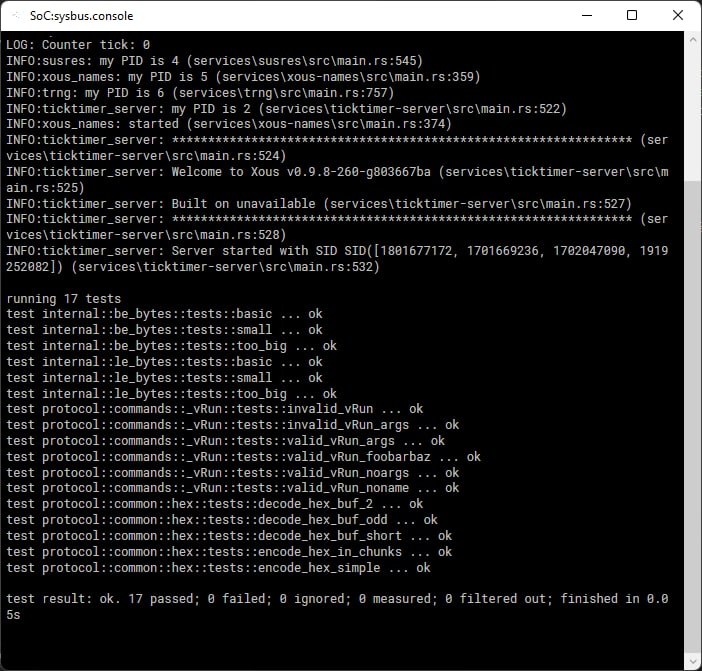
Xous Image Creation
Xous image creation is primarily performed by the create-image program. This program bundles memory definitions, the kernel, and initial programs together and generates an image on-disk suitable for passing to the loader.
You can run this program manually to see how it works:
$ cargo run -p tools --bin create-image -- --help
Finished dev [unoptimized + debuginfo] target(s) in 0.19s
Running `target/debug/create-image --help`
Xous Image Creator 0.1.0
Sean Cross <sean@xobs.io>
Create a boot image for Xous
USAGE:
create-image [FLAGS] [OPTIONS] <OUTPUT> --csv <CSR_CSV> --kernel <KERNEL_ELF> --ram <OFFSET:SIZE> --svd <SOC_SVD>
FLAGS:
-d, --debug Reduce kernel-userspace security and enable debugging programs
-h, --help Prints help information
-V, --version Prints version information
OPTIONS:
-c, --csv <CSR_CSV> csr.csv file from litex
-i, --init <init>... Initial program to load
-k, --kernel <KERNEL_ELF> Kernel ELF image to bundle into the image
-r, --ram <OFFSET:SIZE> RAM offset and size, in the form of [offset]:[size]
-s, --svd <SOC_SVD> soc.csv file from litex
ARGS:
<OUTPUT> Output file to store tag and init information
$
This program generates an Arguments structure based on the specified commands, and copies data from the given ELF files into an area immediately following this structure. In this manner, a complete, position-independent loadable system is generated in a single binary image.
This program also does rudimentary sanity checking. For example, it will ensure the kernel is loaded at a sane offset -- namely above address 0xff000000. It will also ensure the memory regions don't overlap.
As a special case, it will trim the CSR section down from the reported size. In essence, while the configuration region is defined as 256 MB wide, this large region is never used in practice. In order to reduce the amount of memory required to store this data, as well as in order to remove memory aliasing attacks, the CSR region is trimmed down from the reported value to only encompass ranges that are valid.
The Kernel and Initial Programs
The kernel, as well as each initial program, are all packaged together in the same args.bin file. In order to do this, create-image operates in a two-pass fashion.
To begin with, all tags are created and lumped together. This is done first by calling finalize() on each tag, followed by writing them all out to disk. The finalize() call allows tags to update internal fields, but does not allow tags to change their size at all.
The finalize() argument takes a single argument, which describes how many additional bytes have been added to the args structure. This function may do nothing, in which case it returns zero. It may also request that additional data be added to the output, in which case it should return a nonzero value.
After all tags have been written, the last_data() function is called for each tag. This allows the tag to append data to the end of the structure.
An example of tags that do this include the kernel and the initial programs. They return the size of their payload in the finalize() call. They also use this call to update the tag data prior to writing it out.
They also write the actual contents of the tag during the last_data() call.
Target Specification and Hardware Registers with UTRA
Xous isolates target-specific code, such as the location and fields of hardware registers, inside the Unambiguous Thin Register Astraction (UTRA).
The UTRA is contained in the utralib crate, and its contents are generated from SVD files using svd2utra. SVD itself is an XML format commonly used by hardware vendors for the interchange of SoC registers, and is a native output format of SoC building tools such as LiteX. SVD files are also readily available for many commercial MCUs.
Specifying Targets
Services that talk to hardware will typically have one or more implementation modules that encapsulate the target-specific back ends. These are gated with #[cfg(feature="X")] directives, where "X" is the specific build target.
This means that a specific build target is selected by passing a --feature flag during compilation, e.g. --feature precursor, --feature hosted, or --feature renode.
About the UTRA
UTRA is a register abstraction for accessing hardware resources. It tries to be:
- Unambiguous -- the access rules should be concise and unambiguous to a systems programmer with a C background
- Thin -- it should hide constants, but not bury them so they become difficult to verify
Here is an example of an ambiguous style of register access, from a PAC generated using svd2rust:
// this seems clear -- as long as all the bit fields are specified
// (they actually aren't, so some non-obvious things are happening)
p.POWER.power.write(|w|
w.discharge().bit(true)
.soc_on().bit(false)
.kbddrive().bit(true)
.kbdscan().bits(3)
);
// what should this do?
// 1. just set the discharge bit to true and everything else to zero?
// 2. read the register first, change only the discharge bit to true, leaving the rest unchanged?
p.POWER.power.write(|w|
w.discharge().bit(true)
);
// answer: it does (1). You need to use the `modify()` function to have (2) happen.
While the closure-chaining is clever syntax, it's also ambiguous.
First, does the chaining imply an order of writes happening in
sequence, or do they all happen at once? The answer depends on Rust's
optimizer, which is very good and one can expect the behavior to be
the latter, but it is still write-ordering behavior that depends upon
the outcome of an optimizer and not a linguistic guarantee. Second,
the term write itself is ambiguous when it comes to bitfields: do we
write just the bitfield, or do we write the entire register, assuming
the rest of the contents are zero? These types of ambiguity make it
hard to audit code, especially for experts in systems programming
who are not also experts in Rust.
The primary trade-off for achieving unambiguity and thinness is less type checking and type hardening, because we are not fully taking advantage of the advanced syntax features of Rust.
That being said, a certain degree of deliberate malleability in the register abstraction is desired to assist with security-oriented audits: for a security audit, it is often just as important to ask what the undefined bits do, as it is to check the settings of the defined bits. Malleabilty allows an auditor to quickly create targeted tests that exercise undefined bits. Existing Rust-based access crates create strict types that eliminate the class of errors where constants defined for one register are used in an incorrect type of register, but they also make it very hard to modify in an ad-hoc manner.
UTRA API Details
This crate is designed to serve as an alternative to svd2rust. It generates
a crate which consists of:
- A library which is used to perform register accesses
- A "header file" (library) that is auto-generated from a given
soc.svdfile
The library provides the a function template for CSR that provides the following
methods:
.r(reg: Register) -> T- Read. Reads the entire contents of a CSR.rf(field: Field) -> T- Read Field. Read a CSR and return only the masked and shifted value of a sub-field.wo(reg: Register, value:T)- Write only. Writevalueinto a register, replacing its entire contents.wfo(field: Field, value:T)- Write field only. Writevalueinto a field of a register, zeroizing all the other fields and replacing its entire contents.rmwf(field: Field, value:T)- Read-modify-write a register. Replace just the contents offieldwhile leaving the other fields intact. The current implementation makes no guarantees about atomicity.
Register and Field are generated by the library; Field refers to
the Register to which it belongs, and thus it is not necessary to
specify it explicitly. Furthermore, the base address of the CSR is
bound when the object is created, which allows the crate to work both
with physical and virtual addresses by replacing the base address with
the desired value depending upon the active addressing mode.
In addition to the CSR function template, convenience constants for
the CSR base, as well as any memory bases and interrupts, are also
generated by this crate.
This set of API calls supports the most common set of use cases, which is reading, writing, and updating single fields of a register, or entire registers all at once.
The API does not natively support setting two fields simultaneously. This is because there can be nuances to this that depend upon the hardware implementation, such as bit fields that are self-resetting, registers that self-clear on read, or registers that have other automatic and implicit side effects.
Users that require multiple bit fields to be set simultaneously must explicitly read the CSR value, bind it to a temporary variable, mask out the fields they want to replace, and combine in the values before writing it back to the CSR.
To aid with this, the following helper functions are also available:
zf(field:Field, value:T) -> T- Zeroize field. Take bits corresponding tofieldand set it to zero invalue, leaving other bits unchangedms(field:Field, value:T) -> T- Mask and shift. Take value, mask it to the field width, and then shift to its final position.
The idea here is that the .r(register) method is used to read the
entire register; then successive .zf(field, value) calls are made to
clear the fields prior to setting. Field values are OR'd with the
result of .ms(field, value) to create the final composite register
value. Finally, .wo(value) is used to overwrite the entire
register with the final composite register value.
The .ms(field,value) can also be used to synthesize initial register
values that need to be committed all at once to a hardware register,
before a .wo(value) call.
Example Usage
Let's assume you've used svd2utra.py to create a utra crate in the
same directory as svd2utra.py, and you've added this to your Cargo.toml file.
Now, inside your lib.rs file, you might have something like this:
use utra
fn test_fn() {
// Audio tests
// The audio block is a pointer to *mut 32.
let mut audio = CSR::new(HW_AUDIO_BASE as *mut u32);
// Read the entire contents of the RX_CTL register
audio.r(utra::audio::RX_CTL);
// Or read just one field
audio.rf(utra::audio::RX_CTL_ENABLE);
// Do a read-modify-write of the specified field
audio.rmwf(utra::audio::RX_CTL_RESET, 1);
// Do a multi-field operation where all fields are updated in a single write.
// First read the field into a temp variable.
let mut stat = audio.r(utra::audio::RX_STAT);
// in read replica, zero EMPTY and RDCOUNT
stat = audio.zf(utra::audio::RX_STAT_EMPTY, stat);
stat = audio.zf(utra::audio::RX_STAT_RDCOUNT, stat);
// in read replica, now set RDCOUNT to 0x123
stat |= audio.ms(utra::audio::RX_STAT_RDCOUNT, 0x123);
// commit read replica to register, updating both EMPTY and RDCOUNT in a single write
audio.wo(utra::audio::RX_STAT, stat);
// UART tests
// Create the UART register as a pointer to *mut u8
let mut uart = CSR::new(HW_UART_BASE as *mut u8);
// Write the RXTX field of the RXTX register
uart.wfo(utra::uart::RXTX_RXTX, b'a');
// Or you can write the whole UART register
uart.wo(utra::uart::RXTX, b'a');
assert_ne!(uart.rf(pac::uart::TXFULL_TXFULL), 1);
// Anomalies
// This compiles but requires a cast since `audio` is a pointer to
// u32, whereas `uart` is a pointer to u8.
audio.wfo(utra::uart::RXTX_RXTX, b'a' as _);
// This also compiles, despite the fact that the register offset is
// mismatched and nonsensical
audio.wfo(utra::uart::TXFULL_TXFULL, 1);
}
Messages and Message Passing
Messages form the basis of interprocess communication on Xous. A process exists in isolation and can only communicate to the outside world by sending messages. The limited API provided by the kernel means that almost all interactions are provided by userspace Servers, which must be communicated with using Messages.
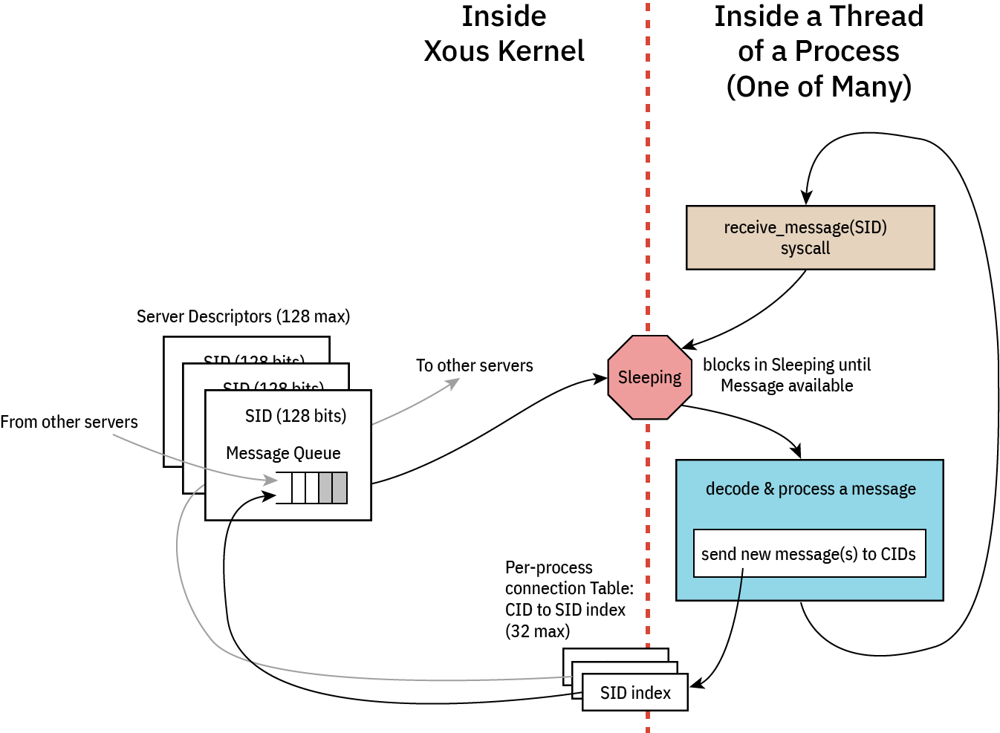
Connecting to and Disconnecting from Servers
To connect to a server you must supply it an Server ID. A Server ID is a 16-byte value of some sort that is shared in a universal namespace. If you know a Server's Server ID then you can connect to that Server.
There are a few well-known Server IDs. These include bare minimum IDs that are required by any process to do anything useful. They are:
- b"xous-log-server ": Output log messages to the console, as well as basic
println!()support - b"ticktimer-server": Used for
sleep()as well as time-based Mutexes - b"xous-name-server": A central nameserver that is used for connecting to all other servers
To connect to a Server, call xous::connect(). For example, to connect to the ticktimer-server, call:
let connection_id = xous::connect(xous::SID::from_bytes(b"ticktimer-server").unwrap())?;
This will provide you a Connection to that server. If the Server is not available, the call will block until it is created. To fail if the server does not exist, use try_connect() instead of connect().
Connection Limitations
Connections are limited on a per-process basis. Each process may only establish a connection to at most 32 servers. When this number is exceeded, xous::connect() will return Error::OutOfMemory.
If you call xous::connect() twice with the same Server ID, then you will get the same connection_id.
Disconnecting
To disconnect from a server, call unsafe { xous::disconnect(connection_id)};. This function is unsafe because you can copy connection IDs, so it is up to you to ensure that they are no longer in use when disconnecting.
For example, if you connect() to a Server and spawn a thread with that connection ID, you should only call disconnect() once that thread has finished with the connection. Similarly, if you Copy the connection ID to the thread, you must make sure that both uses of the Connection ID are destroyed prior to disposing of the connection.
Because of this, it is recommended that you use an ARC<CID> in order to ensure that the connection is only closed when it is no longer in use.
Furthermore, recall that subsequent calls to connect() with the same argument will reuse the connection_id. Because of this, it is vital that you only call disconnect() when you are certain that all instances are finished with the connection.
Message Overview
Messages come in five kinds: Scalar, BlockingScalar, Borrow, MutableBorrow, and Send. Scalar and Send messages are nonblocking and return immediately, while the others wait for the Server to respond.
Borrow, MutableBorrow, and Send all detach memory from the client and send it to the server.
Scalar and BlockingScalar Messages
These messages allow for sending four usizes of data plus one usize of command. This can be used to send short updates to the Server. Scalar messages return to the client immediately, meaning the Server will receive the message after a short delay.
BlockingScalar messages will pause the current thread and switch to the Server immediately. If the message is handled quickly, the Server can respond to the message and switch back to the Client before its quantum expires.
BlockingScalar messages can return one or two usizes worth of data by returning Result::Scalar1(usize) or Result::Scalar2(usize, usize).
As an example of what can be done, the ticktimer server uses BlockingScalar messages to implement msleep() by delaying the response until a timer expires.
Borrow, MutableBorrow, and Send Messages
These messages allow for sending memory from one process to another. Memory must be page-sized and aligned, but may be any memory available to a process. For example, a hardware process may want to reserve all MMIO peripherals in the system and then share them with processes as desired.
The memory message types allow for one usize worth of tag data which can be used to describe what the message is used for.
Furthermore, messages may also contain two advisory fields: offset and valid. These fields may be used to define an offset with the memory block where interesting data occurs. Similarly, the valid field could be used to define how large the data is.
When memory is passed via MutableBorrow then the memory is mapped into the Server's address space as writable. Additionally, the offset and valid fields become writable and may be updated in the server. As an example, if a Server implemented bzero() to clear a memory range to zero, then it might clear the contents of the buffer, then set both offset and valid to 0.
Internally, the MutableBorrow is updated by passing the new fields to ReturnMemory() where it gets updated in the client.
Xous Names
Servers are identified by a 128-bit ID number in Xous. Anyone with knowledge of the 128-bit ID number can make requests to that server.
Some servers have "well-known names". These servers are designed to accept any number of connections and all of its APIs are considered safe for public use.
Other servers may have sensitive API calls. Their 128-bit IDs are treated as a secret.
In order to discover their ID, these servers register their ID in xous-names, along with a 64-byte server name which is a unique plaintext description of the server, and a MaxConnections which is the maximum number of processes allowed to connect to the registered server.
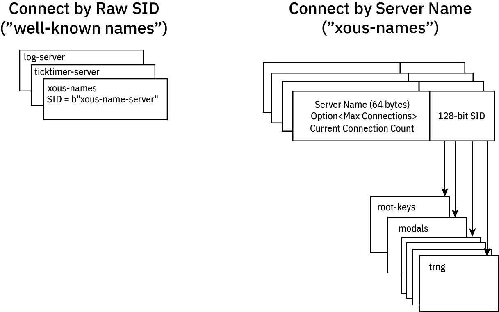
Well-Known Names
A few servers have well-known names:
- log server: needed to debug name resolution issues
- ticktimer: in case you want to delay before connecting to a server
- Xous Names: the name server itself has a well known name
- Some
stdlibrary servers, which should not be connected to directly by user processes but instead throughlibstdcalls.
Well-known servers have a name like b"xous-name-server", which reads like ASCII text but fits in exactly 128 bits: you just have to know the magic string, and you can connect to them.
Application programers will never need to know this name, because it is encapsulated within the objects that access the servers. For example, XousNames::new() "just knows" the name, so to access xous-names one simply needs to create a new XousNames object.
Discovered Names
All other servers have their names registered as a 64-byte free-from u8 array, which by convention maps to ASCII text (nothing prevents you from doing weird things that don't map to unicode, but, please don't). The resulting server ID is a cryptographically random 128-bit ID, which makes it effectively unguessable. Note that no checks are done for collisions with the "well known" names, because the chance that the TRNG would output the string b"xous-name-server" by chance is vanishingly small.
When registering a server, one might invoke a call like this:
let xns = xous_names::XousNames::new().unwrap();
let net_sid = xns
.register_name(api::SERVER_NAME_NET, None)
.expect("can't register server");
or this:
let xns = xous_names::XousNames::new().unwrap();
let keys_sid = xns
.register_name(api::SERVER_NAME_KEYS, Some(3))
.expect("can't register server");
Generally, the server name is defined as a string within the api.rs section, so that other crates can refer to it via the API. In the case of the net crate, the maximum connection limit is None, which means that any processes may connect to the net crate. In the case of the root keys crate, the number of connections to it is limited to 3 by the Some(3) argument.
In this case, the first three processes that attempt to connect to the root keys crate are handed out it's 128-bit server ID. Later processes that attempt to connect will be denied. This is a "trust on first use" model similar to how SSH maps host public keys to IP addresses.
Generally, sensitive servers like root keys are encapsulated by other processes that act as firewalls to it. So, if there were a hypothetical need to dole out derived keys from the root keys set, a second derived keys server might be created which can accept any number of connections, and one more connection would be added to the root keys connection count for the derived keys server. The derived keys server would thus act as a firewall to the root keys server.
Furthermore, as a rule, the number of processes created by a system must be static and known on boot in order for this system to work. This is because the most secure operations will not be allowed to be conducted until all of the servers that have specified a connection limit have their connection tables fully occuppied. Therefore it is not allowed to, for example for the hypothetical derived keys to connect to the root keys server at some point during runtime, and then de-allocate its connection when it no longer needs it. Instead, dervied keys should eagerly connect to the root keys on boot so that it can reserve and permanently hold its slot in the connection table.
The goal of this is to disallow a rogue or unexpected process from connecting to sensitive servers through the Xous Names discovery mechanism.
Caller Idioms
There are two flavors of messages in Xous: scalar or memory messages. scalar messages are pass-by-register and have a limited size, but are very fast. memory messages are pass-by-memory, and can be large, but are slower.
There are (so far) four common types of caller patterns used in Xous:
- Non-synchronizing: these are "fire and forget" messages that don't block(*) and have no synchronization guarantee.
- Synchronous: these block and wait for a response from the callee. The caller can do nothing else until this message is handled.
- Asynchronous: these don't block, and expect a response at some time later via a "push notification".
- Deferred-response: these block the caller, but the callee is not allowed to block.
Type (1) is implemented using send on memory messages, or vanilla scalar messages on scalar types.
The remaining types will involve a lend or lend_mut on memory messages, or blocking_scalar on scalar types.
Before diving in, it is helpful to review the messaging architecture of Xous:
Each server consists at its core of an event loop. While event loops are allowed to be non-blocking, this is an edge case and in general all event loops are blocking: when an event loop blocks, it is de-scheduled and consumes zero CPU resources, allowing us to stop the CPU clock and save power.
An incoming message will wake up the process, at which point the process shall decode and process the message. From here, the process may issue messages to other servers. Memory send and Scalar scalar messages will not stop the execution flow; the outgoing messages are simply placed in the destination queue and life goes on. However, blocking message types lend, lend_mut, and blocking_scalar will cause the message to be placed in the destination queue, and the current thread yields the remainder of its quanta to the destination thread. The blocked thread will remain stopped at that point of execution until the blocking message types are "returned". At this point the blocked thread is re-queued for execution. Execution will resume either on a time-based pre-emption boundary, or possibly earlier if the returning process completes its task before its quanta is up and enters a blocking state (that is, waiting on a new incoming message, or a response to a new outgoing blocking message).
⚡ Key Concept ⚡
Memory messages implicitly return to callers on Drop. Thus, there is no explicit "return" call in Xous for memory messages. Thus, one must use Rust's borrow checker to schedule the return. Specifically:
- Synchronous messages return as soon as the current message goes out of scope, e.g., at the bottom of the event loop.
- Deferred-response is implemented by binding the current message to an
Option<MessageEnvelope>type that is external to the main event loop.- By sticking the message into a
Some(), the message is not allowed to go out of scope, theDropis never called, and thus the caller blocks. - However, the callee is free to continue on with its processing.
- A return is triggered by calling
take()on the enclosingOption. This moves the message out of theOptionand into the current scope, where the message can now be modified with a return value. Once that operation ends, the message goes out of scope,Dropis called, and likewise, data is returned to the caller
- By sticking the message into a
⚠️ IPC Interoperability ⚠️
In many places Xous offers usize as arguments for IPC calls. This has a platform-dependent size, and in fact, the size can be different between caller and callee if you're passing messages between disparate hosts (which is actually a thing that is allowed on Xous).
For maximum compatibility, the recommendation is to restrict all IPC implementations to a u32-in-usize, unless you never intend to run on a 32-bit platform. Note: the target Precursor hardware is a 32-bit platform.
Basic Template
With this overview, we can now give an example of each of the four types of messages. In general, we assume that services are organized into at least three files:
lib.rs-- the caller-side API that formats native Rust data into IPC messagesmain.rsthe server-side API that unpacks IPC messages and acts on themapi.rs-- data structures & definitions shared between caller and callee
Note that none of these are mandatory -- for example, a pure client-side library like our AES implementation has only a lib.rs; and, an application that offers no services and has only a main function would have only a main.rs.
Below is an example of what these files might look like in a very minimal server implementation.
// inside lib.rs
pub mod api;
pub use api::*;
use xous::{CID, send_message};
use num_traits::*;
use core::sync::atomic::{AtomicU32, Ordering};
static REFCOUNT: AtomicU32 = AtomicU32::new(0);
pub struct MyService {
conn: CID,
}
impl MyService {
pub fn new() -> Self {
let xns = xous_names::XousNames::new().expect("couldn't connect to XousNames");
REFCOUNT.fetch_add(1, Ordering::Relaxed);
let conn = xns.request_connection_blocking(api::SERVER_NAME_MYSERVICE).expect("Can't connect to MyService");
MyService {
conn
}
}
// ------ library methods to be discussed in detail below ------
}
/// Automatic disconnect on dropping the final instance of this connection
impl Drop for MyService {
fn drop(&mut self) {
if REFCOUNT.fetch_sub(1, Ordering::Relaxed) == 1 {
unsafe{xous::disconnect(self.conn).unwrap();}
}
}
}
// inside api.rs
pub(crate) const SERVER_NAME_MYSERVICE: &str = "_Any descriptive and unique name under 64 chars_";
#[derive(num_derive::FromPrimitive, num_derive::ToPrimitive, Debug)]
pub(crate) enum Opcode {
/// Define various operations here
DoNonSync,
// ------ API opcodes to be discussed in detail below ------
/// Exits the server
Quit,
}
// inside main.rs
#![cfg_attr(target_os = "none", no_main)]
mod api;
use api::*;
use num_traits::*;
#[xous::xous_main]
fn xmain() -> ! {
log_server::init_wait().unwrap();
log::set_max_level(log::LevelFilter::Info);
log::info!("my PID is {}", xous::process::id());
let xns = xous_names::XousNames::new().unwrap();
let sid = xns.register_name(api::SERVER_NAME_MYSERVER, None).expect("can't register server");
loop {
let msg = xous::receive_message(sid).unwrap();
match FromPrimitive::from_usize(msg.body.id()) {
Some(Opcode::DoNonSync) => xous::msg_scalar_unpack!(msg, _, _, _, _, {
// do stuff here
}),
// ------ options to be discussed in detail below ------
Some(Opcode::Quit) => {
xous::return_scalar(msg.sender, 1).expect("couldn't ack quit");
break;
},
None => log::error!("couldn't convert opcode: {:?}", msg),
}
}
// clean up our program
xns.unregister_server(sid).unwrap();
xous::destroy_server(sid).unwrap();
xous::terminate_process(0)
}
With the above template in mind, click on the following for examples of each of the four patterns, broken down into each of Scalar and Memory types when applicable.
- Non-synchronizing
- Synchronous. Includes an example of how to use raw messages (instead of
rkyv) for serializing data. - Asynchronous or "push notifications"
- Deferred response
- Forwarding messages
Non-Synchronizing Idioms
Scalar Pattern
A scalar non-synchronizing call has the following characterisics:
- Up to 4
u32-sized arguments - Caller does not block
- Callee does not return any result
- No guarantee of synchronization between caller and callee
- Side effects may happen at an arbitrary time later
- Messages are guaranteed to arrive in order
// api.rs
pub(crate) enum Opcode {
Lights,
// ... and other ops
}
// lib.rs:
impl MyService {
// ... new(), etc.
/// Tell the main loop to set the state of lights. When this call exits, all we know is
/// a message is "en route" to the main loop, but we can't guarantee anything has happened.
pub fn set_lights(&self, state: bool) -> Result<(), xous::Error> {
send_message(self.conn,
Message::new_scalar(Opcode::Lights.to_usize().unwrap()),
if state {1} else {0},
0,
0,
0
)
).map(|_|())
}
}
// main.rs:
fn xmain() -> ! {
// ... preamble
loop {
let msg = xous::receive_message(sid).unwrap();
match FromPrimitive::from_usize(msg.body.id()) {
/// This will get processed whenever the server gets scheduled, which has no strict
/// relationship to the caller's state. However, messages are guaranteed
/// to be processed in-order.
Some(Opcode::Lights) => xous::msg_scalar_unpack!(msg, state, _, _, _, {
if state == 1 {
turn_lights_on();
} else {
turn_lights_off();
}
}),
// .. other match statements
}
}
// ... postamble
}
Memory Pattern
A memory non-synchronizing call has the following characterisics:
- Messages are sent in blocks rounded up to the nearest 4096-byte page size
- Caller does not block
- Callee does not return any result
- No guarantee of synchronization between caller and callee
- Side effects may happen at an arbitrary time later
- Messages are guaranteed to arrive in order
// api.rs
pub(crate) enum Opcode {
// use `rkyv` to serialize a memory message and send
PushDataRkyv,
// example of explicit serialization
PushDataExplicit,
// ... and other ops
}
/// `rkyv` can be used as a convenience method to serialize data in complex structures.
/// Almost any type can be contained in the structure (enums, other structures), but the
/// type must also `derive` the `rkyv` Archive, Serialize, and Deserialize traits.
/// Thus one cannot simply seralize a `std::string::String`; it must be transcribed into
/// a `xous_ipc::String::<N>` type which has a defined allocation size of `N`.
#[derive(rkyv::Archive, rkyv::Serialize, rkyv::Deserialize)]
pub struct CompoundData {
pub data: [u8; 1000],
pub len: u16,
pub description: xous_ipc::String::<128>,
}
// lib.rs:
impl MyService {
// ... new(), etc.
/// Send some `data` to the server. It'll get there when it gets there.
/// This example uses `rkyv` to serialize data into a compound structure.
pub fn push_data_rkyv(&self, data: &[u8], desc: &str) -> Result<(), xous::Error> {
let mut rec = CompoundData {
data: [0u8; 1000],
len: 0,
description: xous_ipc::String::new(),
};
if data.len() > rec.data.len() {
return Err(xous::Error::OutOfMemory);
}
for (&s, d) in data.iter().zip(rec.data.iter_mut()) {
*d = s;
}
data.len = data.len() as u16;
rec.description.append(desc).ok(); // overflows are silently truncated
// now consume `rec` and turn it into a Xous::Buffer, which can then be mapped into the
// callee's memory space by `send`
let buf = Buffer::into_buf(rec).or(Err(xous::Error::InternalError))?;
buf.send(self.conn, Opcode::PushDataRkyv.to_u32().unwrap()).map(|_| ())
}
}
// main.rs:
fn xmain() -> ! {
// ... preamble
let mut storage = Vec::<CompoundData>::new();
let mut raw_data = [0u8; 32];
loop {
let msg = xous::receive_message(sid).unwrap();
match FromPrimitive::from_usize(msg.body.id()) {
/// This will get processed whenever the server gets scheduled, which has no strict
/// relationship to the caller's state. However, messages are guaranteed
/// to be processed in-order.
Some(Opcode::PushDataRkyv) => {
let buffer = unsafe { Buffer::from_memory_message(msg.body.memory_message().unwrap()) };
// `.to_original()` automatically makes a copy of the data into my process space.
// This adds overhead and time, but your original types are restored.
// `.as_flat()` will use the data directly out of the messages' memory space without copying it,
// but it introduces some type complexity. We don't give an example here, but you may find
// one in the TRNG's `FillTrng` implementation, where we avoid making two copies of the
// data for a more performant implementation.
let data = buffer.to_original::<PushDataRkyv, _>().unwrap();
storage.push(data);
}
// .. other match statements
}
}
// ... postamble
}
Synchronizing
Scalar Pattern
A scalar synchronizing call has the following characterisics:
- Up to 4
u32-sized arguments - Caller blocks until the callee returns
- Callee may return up to 2
u32-sized values
// api.rs
pub(crate) enum Opcode {
LightsSync,
// ... and other ops
}
// lib.rs:
impl MyService {
// ... new(), etc.
/// Tell the main loop to set the state of lights. This blocks until we get a confirmation code,
/// which in this case was the last state of the lights.
pub fn set_lights_sync(&self, state: bool) -> Result<bool, xous::Error> {
match send_message(self.conn,
Message::new_blocking_scalar(Opcode::LightsSync.to_usize().unwrap()),
if state {1} else {0},
0,
0,
0
)
) {
// match to `xous::Result::Scalar2(val1, val2)` for the case of two values returned
Ok(xous::Result::Scalar1(last_state)) => {
if last_state == 1 {
Ok(true)
} else {
Ok(false)
}
}
_ => {
Err(xous::Error::InternalError)
}
}
}
}
// main.rs:
fn xmain() -> ! {
// ... preamble
loop {
let msg = xous::receive_message(sid).unwrap();
match FromPrimitive::from_usize(msg.body.id()) {
Some(Opcode::LightsSync) => xous::msg_blocking_scalar_unpack!(msg, state, _, _, _, {
let last_state = lights_current_state();
if state == 1 {
turn_lights_on();
} else {
turn_lights_off();
}
if last_state {
// alternative form is `xous::return_scalar2(msg.sender, val1, val2)`
xous::return_scalar(msg.sender, 1).expect("couldn't return last state");
} else {
xous::return_scalar(msg.sender, 0).expect("couldn't return last state");
}
}),
// .. other match statements
}
}
// ... postamble
}
Memory Pattern
A memory synchronizing call has the following characterisics:
- Messages are sent in blocks rounded up to the nearest 4096-byte page size
- Caller blocks until the data is returned
- Callee returns data by overwriting the same page(s) of memory that were sent
This example also shows how to do a memory message without rkyv. This is useful
for situations that can't have an rkyv dependency, or if you just prefer to do
things in a low-level fashion.
// api.rs
pub(crate) enum Opcode {
// use `rkyv` to serialize a memory message and send
PushDataRkyv,
// example of explicit serialization
PushDataExplicit,
// ... and other ops
}
#[derive(rkyv::Archive, rkyv::Serialize, rkyv::Deserialize)]
pub struct CompoundData {
pub data: [u8; 1000],
pub len: u16,
pub description: xous_ipc::String::<128>,
}
/// For a memory structure to be remapped between processes, it must be page-aligned,
/// and the mapped region will always round up to the neareest page boundary.
///
/// Therefore, the minimum size serialized is always one page (4096 bytes). Even if
/// we made this smaller, a full 4096 bytes are always allocated and cleared.
/// The `rkyv`+Buffer method hides the details of page alignment.
///
/// When serializing data manually, you need to guarantee the page alignment property.
/// One way to do this is to request a memory page using `xous::syscall::map_memory()`.
/// This is an explicit way to create a page of memory, and you must also unmap it
/// once you are done. Another way to do it is to allocate it on the stack, but, in
/// order to guarantee mapability, the structure has to be decorated with
/// `#[repr(C, align(4096))]`. This example uses stack allocation, and thus we create
/// a page-sized, page-aligned RawData structure as below.
#[repr(C, align(4096))]
pub struct RawData {
raw: [u8; 4096],
}
// lib.rs:
impl MyService {
// ... new(), etc.
/// Send some `data` to the server. It'll get there when it gets there.
/// This example uses `rkyv` to serialize data into a compound structure.
pub fn push_and_get_data_rkyv(&self, data: &mut [u8], desc: &str) -> Result<(), xous::Error> {
let mut rec = CompoundData {
data: [0u8; 1000],
len: 0,
description: xous_ipc::String::new(),
};
if data.len() > rec.data.len() {
return Err(xous::Error::OutOfMemory);
}
for (&s, d) in data.iter().zip(rec.data.iter_mut()) {
*d = s;
}
rec.len = data.len() as u16;
rec.description.append(desc).ok(); // overflows are silently truncated
// now convert it into a Xous::Buffer, which can then be lent to the server
let mut buf = Buffer::into_buf(rec).or(Err(xous::Error::InternalError))?;
buf.lend_mut(self.conn, Opcode::PushDataRkyv.to_u32().unwrap()).map(|_| ())?;
let response = buf.as_flat::<CompoundData, _>().unwrap();
if response.data.len() > data.len() || response.data.len() > response.data.len() {
Err(xous::Error::OutOfMemory)
} else {
// copy the data back
for (&s, d) in response.data[..response.len as usize].iter().zip(data.iter_mut()) {
*d = s;
}
Ok(())
}
}
/// Send 32 bytes of `data` to a server. This example uses explicit serialization into a raw buffer.
pub fn push_data_manual(&self, data: &mut [u8; 32]) -> Result<(), xous::Error> {
// RawData can be sized smaller, but all IPC memory messages are rounded up to the nearest page
// The sizing here reflects that explicitly. Using `rkyv` does not change this, it just hides it.
let mut request = RawData { raw: [0u8; 4096] };
for (&s, d) in data.iter().zip(request.raw.iter_mut()) {
*d = s;
}
// we need to guarantee that RawData is a page-aligned, page-sized stack allocation.
// See comment on the data structure for more information.
let buf = unsafe {
xous::MemoryRange::new(
&mut request as *mut RawData as usize,
core::mem::size_of::<RawData>(),
)
.unwrap()
};
let response = xous::send_message(
self.conn,
xous::Message::new_lend_mut(
Opcode::PushDataExplicit.to_usize().unwrap(),
buf,
None, // valid and offset are not used in explicit implementations
None, // and are thus free to bind to other applications
),
);
match response {
Ok(xous::Result::MemoryReturned(_offset, _valid)) => {
// contrived example just copies whatever comes back from the server
let response = buf.as_slice::<u8>();
for (&s, d) in response.iter().zip(data.iter_mut()) {
*d = s;
}
Ok(())
}
Ok(_) => Err(xous::Error::InternalError), // wrong return type
Err(e) => Err(e)
}
}
}
// main.rs:
fn xmain() -> ! {
// ... preamble
let mut storage = Vec::<CompoundData>::new();
let mut raw_data = [0u8; 32];
loop {
let mut msg = xous::receive_message(sid).unwrap();
match FromPrimitive::from_usize(msg.body.id()) {
/// This will get processed whenever the server gets scheduled, which has no strict
/// relationship to the caller's state. However, messages are guaranteed
/// to be processed in-order.
Some(Opcode::PushDataRkyv) => {
let mut buffer = unsafe {
Buffer::from_memory_message_mut(msg.body.memory_message_mut().unwrap())
};
let mut data = buffer.to_original::<PushDataRkyv, _>().unwrap();
storage.push(data);
// A contrived return value.
data.len = 1;
data.data[0] = 42;
// Note that you can stick *any* `rkyv`-derived struct
// into the buffer as a return "value". We just happen to re-use
// the same structure defintion here for expedience
// However, it's up to the recipient to know the returned type,
// and to deserialize it correctly. Nothing prevents type mismatches
// across IPC boundaries!
buffer.replace(data).expect("couldn't serialize return");
// `msg` goes out of scope at this point, triggering `Drop` and thus unblocking the caller
},
Some(Opcode::PushDataExplicit) => {
let body = msg.body.memory_message_mut().expect("incorrect message type received");
let mut data = body.buf.as_slice_mut::<u8>();
for (&s, d) in data.iter().zip(raw_data.iter_mut()) {
*d = s;
}
// Very contrived example of "returning" data. Just poke something into the first byte.
data[0] = 42;
// there is no `replace()` because `data` is the original message memory: this is
// unlike the previous example where `to_original()` creates a copy of the data.
// `msg` goes out of scope at this point, triggering `Drop` and thus unblocking the caller
}
// .. other match statements
}
}
// ... postamble
}
Asynchronous Idioms or "Push Notifications"
Push notifications are used when we want to be alerted of a truly unpredictable, asynchronous event that can happen at any time.
One of the main challenges of push notifications is not disclosing your SID to the notifying server. Remember, anyone with your SID can invoke any method on your server, including more sensitive ones.
The idiom here is to create and reveal a "single-purpose" server, whose sole job is to receive the push notification from the notifier, and forward this message back to the main server. The single purpose server exists on the lib side, and is thus the caller controls it and its construction. It runs in its own dedicated thread; thus, the single-purpose server spends most of its life blocked and not consuming CPU resources, and only springs to action once a notification arrives.
This pattern has the following properties:
- No disclosure of the main loop
SID - An extra "bounce" required for asynchronous notifications
The example below is taken from the NetManager's wifi state change subscription service, and trimmed down to the core bits.
// inside api.rs
// used for managing susbscriptions
#[derive(Debug, Archive, Serialize, Deserialize, Copy, Clone)]
pub(crate) struct WifiStateSubscription {
// this is the "single-purpose" SID
pub sid: [u32; 4],
// this is the opcode dispatch number to use on the recipient side. Everyone
// can have a different opcode table, so we must remember this with each SID.
pub opcode: u32,
}
// all of the below sub-structures are `rkyv` serializeable
#[derive(Debug, Copy, Clone, rkyv::Archive, rkyv::Serialize, rkyv::Deserialize)]
pub struct WlanStatusIpc {
pub ssid: Option<SsidRecord>,
pub link_state: u16,
pub ipv4: [u16; com_rs_ref::ComState::WLAN_GET_IPV4_CONF.r_words as usize],
}
// the `from_status()` method is a convenience trait that can take data from a native
// representation to an IPC-compatible version
impl WlanStatusIpc {
pub fn from_status(status: WlanStatus) -> Self {
WlanStatusIpc {
ssid: status.ssid,
link_state: status.link_state as u16,
ipv4: status.ipv4.encode_u16(),
}
}
}
#[derive(num_derive::FromPrimitive, num_derive::ToPrimitive, Debug)]
pub(crate) enum Opcode {
// add a subscriber to our push notifications
SubscribeWifiStats,
// remove a subscriber
UnsubWifiStats,
// this triggers a push notification; it's contrived for simplicity in this pared-down example
StateChangeEvent,
// ------ API opcodes to be discussed in detail below ------
/// Exits the server
Quit,
}
// inside lib.rs
pub struct NetManager {
netconn: NetConn,
wifi_state_cid: Option<CID>,
wifi_state_sid: Option<xous::SID>,
}
impl NetManager {
pub fn new() -> NetManager {
NetManager {
netconn: NetConn::new(&xous_names::XousNames::new().unwrap()).expect("can't connect to Net Server"),
wifi_state_cid: None,
wifi_state_sid: None,
}
}
pub fn wifi_state_subscribe(&mut self, return_cid: CID, opcode: u32) -> Result<(), xous::Error> {
if self.wifi_state_cid.is_none() {
let onetime_sid = xous::create_server().unwrap();
let sub = WifiStateSubscription {
sid: onetime_sid.to_array(),
opcode
};
let buf = Buffer::into_buf(sub).or(Err(xous::Error::InternalError))?;
buf.send(self.netconn.conn(), Opcode::SubscribeWifiStats.to_u32().unwrap()).or(Err(xous::Error::InternalError))?;
// this thread is the "bouncer" that takes the status data and sends it on
// to our local private server. Note that it only has two opcodes, which limits
// the attack surface exposed to a ptoentially untrusted subscriber.
self.wifi_state_cid = Some(xous::connect(onetime_sid).unwrap());
self.wifi_state_sid = Some(onetime_sid);
let _ = std::thread::spawn({
let onetime_sid = onetime_sid.clone();
let opcode = opcode.clone();
move || {
loop {
let msg = xous::receive_message(onetime_sid).unwrap();
match FromPrimitive::from_usize(msg.body.id()) {
Some(WifiStateCallback::Update) => {
let buffer = unsafe {
Buffer::from_memory_message(msg.body.memory_message().unwrap())
};
// have to transform it through the local memory space because you can't re-lend pages
let sub = buffer.to_original::<WlanStatusIpc, _>().unwrap();
let buf = Buffer::into_buf(sub).expect("couldn't convert to memory message");
buf.lend(return_cid, opcode).expect("couldn't forward state update");
}
Some(WifiStateCallback::Drop) => {
xous::return_scalar(msg.sender, 1).unwrap();
break;
}
_ => {
log::error!("got unknown opcode: {:?}", msg);
}
}
}
xous::destroy_server(onetime_sid).unwrap();
}
});
Ok(())
} else {
// you can only hook this once per object
Err(xous::Error::ServerExists)
}
}
/// If we're not already subscribed, returns without error.
pub fn wifi_state_unsubscribe(&mut self) -> Result<(), xous::Error> {
if let Some(handler) = self.wifi_state_cid.take() {
if let Some(sid) = self.wifi_state_sid.take() {
let s = sid.to_array();
send_message(self.netconn.conn(),
Message::new_blocking_scalar(Opcode::UnsubWifiStats.to_usize().unwrap(),
s[0] as usize,
s[1] as usize,
s[2] as usize,
s[3] as usize,
)
).expect("couldn't unsubscribe");
}
send_message(handler, Message::new_blocking_scalar(WifiStateCallback::Drop.to_usize().unwrap(), 0, 0, 0, 0)).ok();
unsafe{xous::disconnect(handler).ok()};
}
Ok(())
}
}
// main-side code
#[xous::xous_main]
fn xmain() -> ! {
// ... other stuff ...
let mut wifi_stats_cache: WlanStatus = WlanStatus::from_ipc(WlanStatusIpc::default());
let mut status_subscribers = HashMap::<xous::CID, WifiStateSubscription>::new();
loop {
let mut msg = xous::receive_message(sid).unwrap();
// ... other opcodes ...
Some(Opcode::SubscribeWifiStats) => {
let buffer = unsafe {
Buffer::from_memory_message(msg.body.memory_message().unwrap())
};
let sub = buffer.to_original::<WifiStateSubscription, _>().unwrap();
let sub_cid = xous::connect(xous::SID::from_array(sub.sid)).expect("couldn't connect to wifi subscriber callback");
status_subscribers.insert(sub_cid, sub);
},
Some(Opcode::UnsubWifiStats) => msg_blocking_scalar_unpack!(msg, s0, s1, s2, s3, {
let sid = [s0 as u32, s1 as u32, s2 as u32, s3 as u32];
let mut valid_sid: Option<xous::CID> = None;
for (&cid, &sub) in status_subscribers.iter() {
if sub.sid == sid {
valid_sid = Some(cid)
}
}
xous::return_scalar(msg.sender, 1).expect("couldn't ack unsub");
if let Some(cid) = valid_sid {
status_subscribers.remove(&cid);
unsafe{xous::disconnect(cid).ok();}
}
}),
// contrived state change event. Use the below idiom whenever you need to send a push notification.
Some(Opcode::StateChangeEvent) => {
// ... other code to handle the state change
// iterate through all the subscribers and send the notification
for &sub in status_subscribers.keys() {
let buf = Buffer::into_buf(WlanStatusIpc::from_status(wifi_stats_cache)).or(Err(xous::Error::InternalError)).unwrap();
buf.send(sub, WifiStateCallback::Update.to_u32().unwrap()).or(Err(xous::Error::InternalError)).unwrap();
}
}
}
}
Deferred Response
Deferred response is a variant of synchronous messaging. In this case, the caller blocks, but the callee is free to process new messages (typically to help compute results that eventually unblock the caller).
As of Xous 0.9.7, the trick to deferred response is different between scalar and memory messages.
- For
scalarmessages, one needs to store themsg.senderfield (ausize) and delay thexous::return_scalar(sender, value)call until the appropriate time. - For
memorymessages, one needs to store the entireMessageEnvelope, so that it does not go out of scope.memorymessages automatically call the appropriate syscall (return_memory_offset_validforlendandlend_mut,unmap_memoryforsend) in theirDroptrait implementation.
Future versions of Xous may or may not implement a Drop method which automatically returns scalar messages when they go out of scope, this is a topic of active discussion. However, as is the case with all the other idioms, the pattern is different from scalar and memory types, so, regardless, they will be treated with separate examples.
Scalar Pattern
This is very close to the thing that's actually implemented for synchronizing all the servers during a suspend/resume event.
// api.rs
pub(crate) enum Opcode {
WaitUntilReady,
TheBigEvent,
// ... and other ops
}
// lib.rs:
impl MyService {
// ... new(), etc.
/// This will wait until the main loop decides it's ready to unblock us.
pub fn wait_until_ready(&self) -> Result<(), xous::Error> {
send_message(self.conn,
Message::new_blocking_scalar(Opcode::WaitUntilReady.to_usize().unwrap()),
0, 0, 0, 0
)
).map(|_| ())
}
}
// main.rs:
fn xmain() -> ! {
// ... preamble
let mut waiting = Vec::<MessageSender>::new();
loop {
let msg = xous::receive_message(sid).unwrap();
match FromPrimitive::from_usize(msg.body.id()) {
Some(Opcode::WaitUntilReady) => xous::msg_blocking_scalar_unpack!(msg, _, _, _, _, {
// store the message sender;
// the sender continues to block because `xous::return_scalar()` has not been called
waiting.push(msg.sender);
// execution continues on here
}),
// .. this loop is still available to do things, even though the callers are blocked ..
// stuff happens until something triggers TheBigEvent:
Some(Opcode::TheBigEvent) => {
for sender in waiting.drain(..) {
// the argument is arbitrary. `return_scalar2` can also be used.
xous::return_scalar(sender, 1).expect("couldn't unblock sender");
}
// All the waiting processes are now unblocked.
}
// .. other match statements
}
}
// ... postamble
}
Memory Pattern
// api.rs
pub(crate) enum Opcode {
GetDeferredData,
Event,
// ... and other ops
}
#[derive(rkyv::Archive, rkyv::Serialize, rkyv::Deserialize)]
pub struct DeferredData {
pub spec: u32,
pub description: xous_ipc::String::<128>,
}
// lib.rs:
impl MyService {
// ... new(), etc.
pub fn get_data_blocking(&self, spec: u32) -> Result<String, xous::Error> {
let mut rec = DeferredData {
spec,
description: xous_ipc::String::new(),
};
let mut buf = Buffer::into_buf(rec).or(Err(xous::Error::InternalError))?;
buf.lend_mut(self.conn, Opcode::GetDeferredData.to_u32().unwrap()).map(|_| ())?;
let response = buf.as_flat::<DeferredData, _>().unwrap();
Ok(String::new(response.description.as_str().unwrap_or("UTF-8 error")))
}
}
// main.rs:
fn xmain() -> ! {
// ... preamble
// if you are sure there will never be multiple deferred messages, you can just use an
// Option<MessageEnvelope> and .take() to remove it from scope, instead of Vec and .drain()
let mut storage = Vec::<xous::MessageEnvelope>::new();
let mut spec: u32 = 0;
loop {
let mut msg = xous::receive_message(sid).unwrap();
match FromPrimitive::from_usize(msg.body.id()) {
/// This will get processed whenever the server gets scheduled, which has no strict
/// relationship to the caller's state. However, messages are guaranteed
/// to be processed in-order.
Some(Opcode::GetDeferredData) => {
spec += {
// any incoming arguments are processed in a block like this to ensure
// that the `msg` has no ownership interference with `spec`.
let buffer = unsafe {
Buffer::from_memory_message(msg.body.memory_message().unwrap())
};
let data = buffer.to_original::<DeferredData, _>().unwrap();
data.spec
};
storage.push(msg);
// `msg` is now pushed into the scope of `storage`, which prevents `Drop`
// from being called, thus continuing to block the caller.
},
// ... other processing happens, perhaps guided by the value in `spec`
Some(Opcode::Event) => {
let result = DeferredData {
spec: 0,
description: xous_ipc::String::from_str("something happened!"),
};
// `drain()` takes `msg` back out of the scope of `storage`, and
// unless it is bound to another variable outside of this scope,
// it will Drop and unblock the caller at the end of this block.
for mut sender in storage.drain(..) {
let mut response = unsafe {
Buffer::from_memory_message_mut(sender.body.memory_message_mut().unwrap())
};
response.replace(result).unwrap();
}
}
// .. other match statements
}
}
// ... postamble
}
Forwarding Messages
Because server IDs are used to protect APIs, there arises occasions where servers need to be firewalled: a private server within a crate may implement a range of powerful and dangerous APIs, of which only a small portion should be revealed to external callers.
The general idiom in this case is to:
- Create a process-private server that contains all the APIs. The server is not registered with
xous-names; it is entirely a secret within the crate. - Create a process-public server that contains only the public APIs. This server is registered with
xous-namesand it may have a connection limit ofNone, e.g., anyone and everyone may connect to it. - Certain messages are forwarded from the process-public server to the process-private server.
In order to support this idiom, messages have a .forward() call. Usage is straightfoward:
// A private server that can do many powerful things
let cm_sid = xous::create_server().expect("couldn't create connection manager server");
let cm_cid = xous::connect(cm_sid).unwrap();
thread::spawn({
move || {
connection_manager::connection_manager(cm_sid);
}
});
loop {
let mut msg = xous::receive_message(net_sid).unwrap();
// .. other code
// These messages are forwarded on to the private server
// This one is a `lend` of a memory message
Some(Opcode::SubscribeWifiStats) => {
msg.forward(
cm_cid,
ConnectionManagerOpcode::SubscribeWifiStats as _)
.expect("couldn't forward subscription request");
}
// This one is a `blocking_scalar` scalar message type
Some(Opcode::UnsubWifiStats) => {
msg.forward(
cm_cid,
connection_manager::ConnectionManagerOpcode::UnsubWifiStats as _)
.expect("couldn't forward unsub request");
},
}
Other usage notes:
- Message types cannot be transformed across the forwarding boundary.
- You are allowed to inspect a Memory
msgby unpacking it into aBuffer, but you must make sure theBuffergoes out of scope before calling.forward()(perhaps by putting the inspection operation within its own block, e.g. a pair of curly braces).
Messaging Performance
On a 100MHz VexRiscv RV32-IMAC, 4k/4way I/D L1 writethrough cache + unified 128k L2 writethrough cache, and cycle-accurate models for external SRAM (70ns access times) and SPINOR FLASH (200 MT/s):
- A round-trip call with a scalar message takes 174 microseconds
- A round-trip call with a memory message typically takes 771 microseconds, but can be optimized down to 302 microseconds
The waveforms presented in this section are derived from a cycle-accurate verilog simulation of something fairly close to a Precursor device.
Scalar Message Performance
Scalar messages can move up to 5 32-bit words (20 bytes) in a single call, using the scalar5 message type available in the reply_and_receive_next(), introduced in release 0.9.11. Prior to that, up to 2 32-bit words could be moved. It takes the same amount of time whether you move 0 words, or 5 words either way.
The following is a graphical breakdown of the overhead of sending a scalar message.
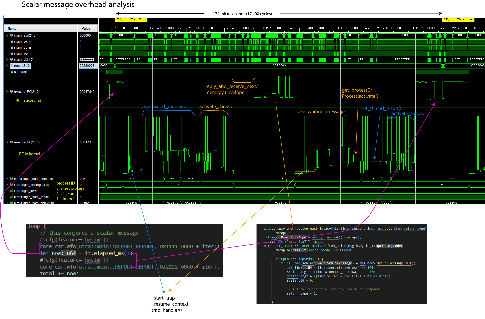
Notes:
- The
report[31:0]field helps track client code location. execute_PCis plotted twice; once showing the range of userland code, once showing the range of kernel codeMmmuPlugin_satp_asidis the active process ID.5is the client loop;4is the ticktimer server;1is the kernel
The simulation was run using Xous 0.9.12, with the following code running:
Client code:
// Code in the client main loop
core_csr.wfo(utra::main::REPORT_REPORT, 0x1111_0000 + iter);
let now = tt.elapsed_ms();
core_csr.wfo(utra::main::REPORT_REPORT, 0x2222_0000 + iter);
// Code in the library call
pub fn elapsed_ms(&self) -> u64 {
let response = send_message(
self.conn,
xous::Message::new_blocking_scalar(
api::Opcode::ElapsedMs.to_usize().unwrap(),
0,
0,
0,
0,
),
)
.expect("Ticktimer: failure to send message to Ticktimer");
if let xous::Result::Scalar2(upper, lower) = response {
upper as u64 | ((lower as u64) << 32)
} else {
panic!(
"Ticktimer elapsed_ms(): unexpected return value."
);
}
}
Server code:
// Code on the server main loop
api::Opcode::ElapsedMs => {
if let Some(scalar) = msg.body.scalar_message_mut() {
let time = ticktimer.elapsed_ms() as i64;
scalar.arg1 = (time & 0xFFFF_FFFFi64) as usize;
scalar.arg2 = ((time >> 32) & 0xFFF_FFFFi64) as usize;
scalar.id = 0;
// API calls expect a `Scalar2` value in response
return_type = 2;
}
}
// Hardware abstraction code, down to the register read/writes
pub fn elapsed_ms(&self) -> u64 {
self.raw_ticktime() / TICKS_PER_MS
}
pub fn raw_ticktime(&self) -> u64 {
let mut time: u64 = self.csr.r(utra::ticktimer::TIME0) as u64;
time |= (self.csr.r(utra::ticktimer::TIME1) as u64) << 32;
time
}
Memory Message Performance
Memory messages can move up to the available free memory in a single call. However, the minimum amount of memory that can be moved in any case is one page (4096 bytes).
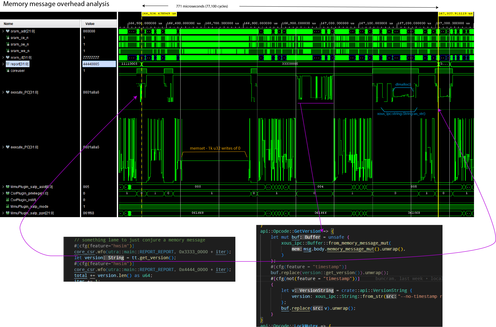
Notes:
- The
report[31:0]field helps track client code location. execute_PCis plotted twice; once showing the range of userland code, once showing the range of kernel codeMmmuPlugin_satp_asidis the active process ID.5is the client loop;4is the ticktimer server;1is the kernel
The simulation was run using Xous 0.9.12, with the following code running:
// Client main loop code
core_csr.wfo(utra::main::REPORT_REPORT, 0x3333_0000 + iter);
let version = tt.get_version();
core_csr.wfo(utra::main::REPORT_REPORT, 0x4444_0000 + iter);
// Client library code
pub fn get_version(&self) -> String {
let alloc = api::VersionString {
version: xous_ipc::String::new(),
};
let mut buf = xous_ipc::Buffer::into_buf(alloc).expect("couldn't convert version request");
buf.lend_mut(self.conn, api::Opcode::GetVersion.to_u32().unwrap())
.expect("couldn't get version");
let v = buf
.to_original::<api::VersionString, _>()
.expect("couldn't revert buffer");
String::from(v.version.as_str().unwrap())
}
Server code:
// Main loop code
api::Opcode::GetVersion => {
let mut buf = unsafe {
xous_ipc::Buffer::from_memory_message_mut(
msg.body.memory_message_mut().unwrap(),
)
};
buf.replace(version::get_version()).unwrap();
}
// Library to retrieve the version number
pub(crate) fn get_version() -> crate::api::VersionString {
let mut v = crate::api::VersionString {
version: xous_ipc::String::new()
};
v.version.append(SEMVER).ok();
v.version.append("\n").ok();
v.version.append(TIMESTAMP).ok();
v
}
pub const TIMESTAMP: &'static str = "Wed, 18 Jan 2023 19:19:24 +0800";
pub const SEMVER: &'static str = "v0.9.11-152-g277d014f";
A couple things are remarkable about this call:
- A large amount of time is spent clearing the 4096-byte page of memory to 0, even though only about 53 bytes are transferred. On this implementation, the zero-clearing time is bottlenecked by the write speed to main memory, and by the write-through caching scheme. Faster main memory and/or a write-back cache would reduce the zeroization time.
- A large amount of time is spent in
dlmalloc()to heap-allocate the return string.
Thus, while the code is ergonomic, there is a price for the abstractions.
Optimizing Memory Message Performance
One can speed up memory messaging with a few techniques:
- Use stack-allocated, explicitly managed and
unsaferegions of memory (warning: by not zeroizing the whole page every time, one runs the risk of leaking previously sent data to third parties. It is not recommended to do this unless you are very careful!) - Avoid heap allocations at all costs
Below is the same run of code, but with these optimizations. The round-trip call time drops from 771us to 302us.
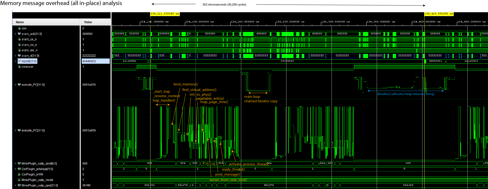
However, the code turns into this:
// Client main loop code
core_csr.wfo(utra::main::REPORT_REPORT, 0x3333_0000 + iter);
let version = tt.get_version();
core_csr.wfo(utra::main::REPORT_REPORT, 0x4444_0000 + iter);
// Client library code
// Define a struct that's 4096 bytes of `u8` and ensure it's page-aligned
#[derive(Debug)]
#[repr(C, align(4096))]
struct StringRequest([u8; 4096]);
#[derive(Debug)]
pub struct Ticktimer {
// ...
request: UnsafeCell::<StringRequest>,
}
pub fn new() -> Result<Self, Error> {
// ...
Ok(Ticktimer {
// ...
request: UnsafeCell::new(StringRequest([0u8; 4096])),
})
}
pub fn get_version(&self) -> String {
// Send the message mutably, indicating that there are 4096 bytes available. The
// Server will overwrite some number of bytes and return the value in the `.valid`
// field.
let request = self.request.get();
let memory_range = unsafe {
xous::MemoryRange::new(
request as usize,
core::mem::size_of::<StringRequest>(),
)
.unwrap()
};
let result = send_message(
self.conn,
xous::Message::new_lend_mut(
api::Opcode::GetVersion as _,
memory_range,
None, xous::MemorySize::new(4096))).unwrap();
// Extract the `offset` and `valid` fields
let valid = match result {
xous::Result::MemoryReturned(_offset, valid) => valid.unwrap(),
_ => panic!("Invalid return value"),
};
// Convert the stack array into a heap-allocated Vec<u8>
let data = unsafe{(&*request).0[0..valid.get()].to_owned()};
// Reassign the heap-allocated Vec<u8> to the String, and return it.
// If there is a UTF-8 error, this will panic.
String::from_utf8(data).unwrap()
}
In this case, the Ticktimer object statically allocates, and keeps for the lifetime of an object,
a page-aligned "hole" in the stack that is tracked by the StringRequest structure. The UnsafeCell
wrapper is necessary to do runtime borrow checking, so that the API call for get_version() is not
mut.
StringRequest is initialized to 0 once on new(), and future calls simply re-use and overwrite the memory region
(in fact, since the version data is static, the page could even be pre-populated with the version
return data, but this example dynamically populates it to give a more realistic example of how to
use this optimization in practice).
Note that this causes the object to "eat" at least 4096 but more typically closer to 8192 bytes
(whereas previously it was a single u32 plus some Rust book-keeping); so, it is inefficient in
RAM, less safe, but completely avoids the problem of allocating a page and zeroizing it.
Server code:
// Main loop code
api::Opcode::GetVersion => {
let mut raw_msg = msg.body.memory_message_mut().unwrap();
raw_msg.valid = core::num::NonZeroUsize::new(
crate::version::SEMVER.len() + 1 + crate::version::TIMESTAMP.len());
let mut buffer = raw_msg.buf.as_slice_mut();
for (dest, src) in buffer.iter_mut()
.zip(crate::version::SEMVER.as_bytes().iter()
.chain([b'\n'].iter())
.chain(crate::version::TIMESTAMP.as_bytes().iter())) {
*dest = *src;
}
}
api::Opcode::GetVersion => {
let raw_msg = msg.body.memory_message_mut().unwrap();
let mut v = String::new();
v.push_str(crate::version::SEMVER);
v.push_str("\n");
v.push_str(crate::version::TIMESTAMP);
let len = v.as_bytes().len();
raw_msg.buf.as_slice_mut()[..len].copy_from_slice(v.as_bytes());
raw_msg.valid = Some(core::num::NonZeroUsize::new(len).unwrap());
} // Library to retrieve the version number
pub const TIMESTAMP: &'static str = "Wed, 18 Jan 2023 19:19:24 +0800";
pub const SEMVER: &'static str = "v0.9.11-152-g277d014f";
In this case, the server is directly accessing the page of memory lent from
the client, and copying the return data into the underlying [u8] of the memory
message. It uses one of the advisory fields (in this case, valid) to note
how long the return data is (recall that valid and size have no fixed
meaning are are available to the API writer to annotate the contents of the
re-mapped memory page).
Fortunately for this example, we're just returning a String, which deserializes
natively with as_bytes(); but more complex datatypes will require some sort
of serdes implementation. The Buffer abstraction uses rkyv as the serdes
layer, but by going straight to the underlying slice data, a user can use
their own preferred serdes format, or if their data happens to be already in
a slice-u8 format, they can completely bypass the serdes abstraction layer entirely.
Thus, one can optimize memory messages to be about 2x faster by stripping off much of the ergonomics that surround memory messages, but it is trickier to guarantee correctness, there is a very real risk of leaking data between processes (through unused data in borrowed pages not being zero-ized), and at a higher static memory cost.
Finally, one can see that because the return type of the API call is String,
there is still a fairly substantial dlmalloc() penalty in the loop, where
a chunk of heap memory is conjured to meet the requirements of the get_version()
API. Returning an &str would remove that step, but then you have lifetime and
ownership ergonomics to contend with for that reference on the return.
Graphics Toolkit
The Xous UX stack consists of three levels:
ModalsandMenus- The
GAM(Graphical Abstraction Manager) - The
graphics-server
Overview
Modals and Menus
The Modals and Menu objects are pre-defined primitives that simplify the creation of Notifications, Checkboxes, Radioboxes, Text Entry boxes, Progress Bars, and Menus. They are as close as you get to a graphics toolkit in Xous.
GAM
Xous has a security-aware UX infrastructure that aims to make it difficult for rogue processes to pop up dialog boxes that could visually mimic system messages and password boxes.
The GAM is a layer that intermediates between the graphics toolkit and the hardware drivers, and enforces these security policies. It does this through the Canvas and Layout primitives.
The Canvas enforces a particular trust level associated with a region of the screen. White text on a black background is reserved for secure, trusted messages, and the GAM in combination with the trust level encoded in a Canvas is responsible for enforcing that rule. This is also where the deface operation occurs, the series of random lines that appear on items in the background.
Layouts contain one or more Canvas objects and are used to define, at a coarse level, regions of the screen, such as where the status bar belongs, the IME, and so forth.
Graphics Server
The graphics-server is responsible for rendering primitives such as circles, lines, and glyphs to the frame buffer. It places no restrictions on where pixels may be placed.
The graphics-server uses the xous-names registry mechanism to restrict its access. No user processes can talk directly to it as a result.
Modals
You can use the Modals server to pop up the following objects:
- Notifications
- Static: shows a message plus an "Okay" button
- Dynamic: can sequence through multiple messages
- Checkboxes (multi-select list)
- Radioboxes (single-select list)
- Text Entry with validator
- Progress bars
To use Modals in your code, you will need to add modals to your Cargo.toml file. From an application in the apps directory:
modals = {path = "../../services/modals"}
In all of the examples, you will need this pre-amble to create the modals object. The object can be re-used as many times as you like.
// connect to the modals object through the name resolver
let xns = XousNames::new().unwrap();
let modals = modals::Modals::new(&xns).unwrap();
Static Notification
modals.show_notification("This is a test!").expect("notification failed");
This will pop up a notification that says "This is a test!". Execution blocks at this line until the user pressses any key to acknowledge the notification.
Progress bar
One can create a progress bar using the start_progress() method, with the following parameters:
name: A&strthat is the title of the progress barstart: Au32that is the starting ordinalend: Au32that is the ending ordinalcurrent: Au32that is the initial point of the progress bar
start should be less than end, and current should be between start and end, inclusive.
Once the bar is created, you can update its progress using the update_progress() method. It takes a number that represents the current progress between the start and end ordinal.
The progress bar is closed by calling the finish_progress() method.
// the ticktimer is used just to introduce a delay in this example. Normally, you'd do something computationally useful instead of just waiting.
let tt = ticktimer_server::Ticktimer::new().unwrap();
let start = 1;
let end = 20;
modals.start_progress("Progress Quest", start, end, start).expect("couldn't raise progress bar");
for i in (start..end).step_by(2) {
modals.update_progress(i).expect("couldn't update progress bar");
tt.sleep_ms(100).unwrap();
}
modals.finish_progress().expect("couldn't dismiss progress bar");
Dynamic Notifications
Dynamic notifications are notifications which don't have an option for the user to close them; instead, the calling program controls when the dialog can be closed, and can also dynamically update the message. This is useful for displaying, for example, multi-phase progress updates without stopping and waiting for a user to hit "OK".
The API is similar to that of the Progress Bar, in that there are start, update, and close phases:
- To pop up the dynamic notification, use the
dynamic_notification(title: Option<&str>, text: Option<&str>)method. The bothtitleandtextare optional, but at least one is recommended, otherwise you get an empty notification. - Updates to the notification are done using
dynamic_notification_update(title: Option<&str>, text: Option<&str>). Arguments that areNonedo not update, and show the same text as before. - Once you are finished showing the set of notifications, you must close the
dialog with
dynamic_notification_close().
Text entry
One can request text entry using the get_text() method. This takes the following parameters:
prompt: A&strthat is the prompt to the uservalidator: AnOption<fn(TextEntryPayload, u32) -> Option<ValidatorErr>>. This is an optional function that takes the text entry payload, along with a dispatch opcode. The dispatch opcode allows a single validator function to be re-used across multiple invocations ofget_text().validator_op: AnOption<u32>. WhenSome(), the argument inside is passed to the validator to indicate which type of text is being validated.
The idea behind the validator_op is that you could create an Enum type that specifies the type of text you're entering, and you would pass the u32 version of that Enum to the get_text() call so that a single validator function can be used to check multiple types of text entry.
// you can also use the num_derive crate to have bi-directional transformation of the enum
enum ValidatorOp {
Int2 = 0,
Int = 1,
}
//
fn my_code() {
// ... insert code to create modals object, etc.
match modals.get_text("Input an integer greater than 2", Some(test_validator), Some(ValidatorOp::Int2 as u32)) {
Ok(text) => {
log::info!("Input: {}", text.0);
}
_ => {
log::error!("get_text failed");
}
}
match modals.get_text("Input any integer", Some(test_validator), Some(ValidatorOp::Int2 as u32)) {
Ok(text) => {
log::info!("Input: {}", text.0);
}
_ => {
log::error!("get_text failed");
}
}
}
fn test_validator(input: TextEntryPayload, opcode: u32) -> Option<xous_ipc::String::<256>> {
let text_str = input.as_str();
match text_str.parse::<u32>() {
Ok(input_int) =>
if opcode == ValidatorOp::Int2 as u32 {
if input_int <= 2 {
return Some(xous_ipc::String::<256>::from_str("input must be larger than 2"))
} else {
return None
}
} else if opcode == ValidatorOp::Int as u32 {
return None
} else {
panic!("unknown discriminant");
}
_ => return Some(xous_ipc::String::<256>::from_str("enter an integer value"))
}
}
Radio Box
A radio box is a mechanism to force a user to pick exactly one item from a list of options.
One can construct a radio box by first repeatedly calling add_list_item() with a &str
description of the items to select, and then calling get_radiobutton() with a &str of
the prompt. The returned value will be the &str description of the selected item.
Note that upon completion of the radio box, the list of items is automatically cleared
in preparation for another invocation of modals.
const RADIO_TEST: [&'static str; 4] = [
"zebra",
"cow",
"horse",
"cat",
];
for item in RADIO_TEST {
modals.add_list_item(item).expect("couldn't build radio item list");
}
match modals.get_radiobutton("Pick an animal") {
Ok(animal) => log::info!("{} was picked", animal),
_ => log::error!("get_radiobutton failed"),
}
Check Box
A check box is a mechanism to present a user with a list of several options, of which they can select none, some, or all of them.
The usage is nearly identical to the Radio Box above, except that the return value
is a Vec::<String>. The Vec will be empty if no elements are selected.
const CHECKBOX_TEST: [&'static str; 5] = [
"happy",
"😃",
"安",
"peaceful",
"...something else!",
];
for item in CHECKBOX_TEST {
modals.add_list_item(item).expect("couldn't build checkbox list");
}
match modals.get_checkbox("You can have it all:") {
Ok(things) => {
log::info!("The user picked {} things:", things.len());
for thing in things {
log::info!("{}", thing);
}
},
_ => log::error!("get_checkbox failed"),
}
Menus
Menus are created with the help of the menu_matic() convenience call.
Conceptually, a Menu in Xous is a list of MenuItem. Graphically, the menus
are rendered in the order that the MenuItems are added to the list. When a MenuItem is selected, it fires a message off to another server to effect the corresponding outcome desired of the logical menu description.
Thus, each MenuItem has the following fields:
- A
namedescribing the menu item, limited to a 64-byte long unicode string - An
Optionfor anaction connection. This is a CID to a server to which a message will be sent upon selecting the item. IfNone, the menu item does nothing and just closes the menu. - An
action opcode. This is au32value that corresponds to the discriminant of theenumused to dispatch opcodes in your main loop (e.g., the parameter passed asmsg.body.id()). - A
MenuPayload, which is anenumthat currently can only be aScalarpayload consisting of up to 4u32values. There's a future provision for this to be extended to a smallMemorymessage but it is not yet implemented (please open an issue if you need this feature, and helpfully remind the maintainers to also update the Xous Book docs once this is done). close on select- when set to true, the menu will automatically close when the item is selected.
So, when a MenuItem is selected by the user, the menu implementation will fire off a Scalar message to the server identified by action_conn with the opcode specified by action opcode and a payload of MenuPayload. The receiving server can asynchronously receive this message in its main loop and act upon the menu selection.
The general idiom is to create a Vec of MenuItems, and then pass them into MenuMatic, as seen below:
pub fn create_kbd_menu(status_conn: xous::CID, kbd_mgr: xous::SID) -> MenuMatic {
let mut menu_items = Vec::<MenuItem>::new();
let code: usize = KeyMap::Qwerty.into();
menu_items.push(MenuItem {
name: xous_ipc::String::from_str("QWERTY"),
action_conn: Some(status_conn),
action_opcode: StatusOpcode::SetKeyboard.to_u32().unwrap(),
action_payload: MenuPayload::Scalar([code as u32, 0, 0, 0]),
close_on_select: true,
});
let code: usize = KeyMap::Dvorak.into();
menu_items.push(MenuItem {
name: xous_ipc::String::from_str("Dvorak"),
action_conn: Some(status_conn),
action_opcode: StatusOpcode::SetKeyboard.to_u32().unwrap(),
action_payload: MenuPayload::Scalar([code as u32, 0, 0, 0]),
close_on_select: true,
});
menu_items.push(MenuItem {
name: xous_ipc::String::from_str("Close Menu"),
action_conn: None,
action_opcode: 0,
action_payload: MenuPayload::Scalar([code as u32, 0, 0, 0]),
close_on_select: true,
});
menu_matic(menu_items, gam::KBD_MENU_NAME, Some(kbd_mgr)).expect("couldn't create MenuMatic manager")
}
This will create a menu with three items, "QWERTY", "Dvorak", and "Close Menu". When, for example, the "QWERTY" item is selected, it will send a message to the server pointed to be status_conn, with the argument of StatusOpcode::SetKeyboard as au32, and an argument consisting of [code, 0, 0, 0,]. In this case, only code has meaning, and the other three are just placeholders.
The third menu item has None for the connection, so when it is selected, no messages are sent and the menu is simply closed.
Raising the Menu
Once you have created your menu, you can cause the menu to pop up with the following gam call:
gam.raise_menu(gam::KBD_MENU_NAME).expect("couldn't raise keyboard layout submenu");
The menu will automatically close if close_on_select is true.
Permission to Create Menus
What's the gam::KBD_MENU_NAME field all about?
In order to prevent rogue processes from creating menus willy-nilly that resemble, for example, the main menu but firing off forged messages to undesired processes, there is an access control list for menus.
The access control list is kept in the gam, and can be found in services/gam/src/lib.rs. You must add a const str that gives your menu a unique name, and insert it into the EXPECTED_BOOT_CONTEXTS structure, otherwise, the gam will deny the creation of your menu item. The access list is "trust on first use", and secure operations such as accessing the root keys will not be allowed to proceed until all contexts have been allocated. Therefore, if you are creating a menu, you need to call menu_matic() early in the boot process, or else you will be unable to unlock the PDDB.
Permissions Checklist:
- Give your menu a name in
services/gam/src/lib.rs - Add the name to
EXPECTED_BOOT_CONTEXTS - Claim your name with
menu_matic()early in the boot process
Modifying the Menu
menu_matic() has a third argument, which is an Option<xous::SID>. If you never plan to modify your menu, you can leave it as None. However, if you want to do things such as dynamically create and remove menu items, or pre-select an index in the menu list, you will need to specify an SID. This is used to create the MenuMatic object, which is returned to the caller.
The SID is created as follows:
let kbd_mgr = xous::create_server().unwrap();
MenuMatic has the following methods available on it:
add_item(MenuItem)- adds theMenuItemspecified to the end of the menu list, returningtrueto indicate success.delete_item(&str)- deletes an item with anamespecified as the argument. Returnstrueto indicate success.set_index(usize)- sets the index pointer of the menu to the specified offset. Typically ued to create a "default" position for the menu before it is raised.quit()- exit and destory theMenuMaticserver
If you don't need the above functionality, it's recommended that you do not create the server, as it consumes memory and eats up connection and server name space.
The Plausibly Deniable DataBase (PDDB) Overview
The Plausibly Deniable DataBase (PDDB) is Xous' filesystem abstraction. It plays the role that a filesystem like FAT or ext4 might play in other OSes, combined with full disk encryption like LUKS or VeraCrypt. It also features "plausible deniability", which aims to make it difficult to prove "beyond a reasonable doubt" that additional secrets exist on the disk, even in the face of forensic evidence.
The PDDB can be accessed through a native API, or through Rust's std::fs::File layer. std::fs::File enables applications and libraries that are "naive" to deniability to run. Applications are free to mix-and-match between native and std::fs::File calls, and in most cases will deliver a less confusing and safer user experience if they are written with deniability built into the user work flow.
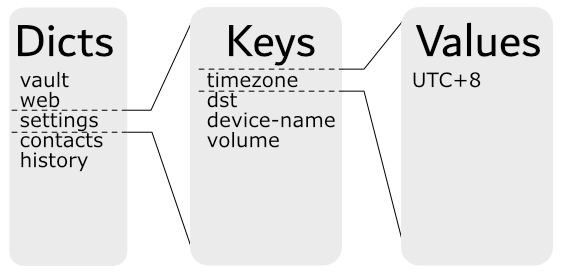
The PDDB is structured as a key:value store divided into dictionaries that features multiple overlay views. Each overlay view is called a Basis (plural Bases). A Basis has the following properties:
- The current view is the union of all open Bases
- In case of namespace conflicts (two keys with the same name in a dictionary):
- For reads, the value in the most recently unlocked Basis is returned
- For writes, the value updates an existing key (if one exists) in the most recently unlocked Basis; otherwise, a new key is created in the most recently unlocked Basis.
- In all cases, the API supports specifically naming a target Basis. This overrides the defaults specified above
- The default Basis is named
.System, and it is created when the PDDB is formatted. The PDDB is considered mounted if the.SystemBasis can be found. - When a Basis is locked, its data is indistinguishable from free space and hence plausibly deniable.
- A Basis is unlocked by a name and password combo. If either are lost or forgotten, the Basis is equivalent to having been deleted.
One may also see the use of the term "enumerated" instead of "unlocked" in reference to a Basis. "Enumeration" refers to when the used space of a Basis is disclosed, but none of the core data structures are mounted. Typically the encryption keys are zeroized after enumeration. "Unlocking" refers to when the Basis is fully mounted, and its decryption keys and dictionary root records are cached in memory until the Basis is locked.
The PDDB documentation is structured into several chapters.
- Basis Internal Structure does a deep-dive into the internal mechanics of the PDDB
- Key Derivation outlines how the keys that secure the PDDB are derived
- Native API is targeted at application developers who want to use native API calls
- Std API is targeted at application developers who want to use
std::fs::Filecalls - Testing is targeted at kernel developers tracking down bugs in the PDDB
- Backups touches on how to extract data from backups made using the backup tool
- Discussion covers issues affecting the security and deniability of the PDDB
Basis Internal Structure
Overview
From an external API standpoint, users see the PDDB as a set of dictionaries containing keys:
This chapter goes behind the scenes and explores the internal structure, and how the Bases are allocated to provide multiple overlay views into the simplified example above.
A Short Example
Below is a contrived example of a PDDB consisting of two dictionaries, Contacts and Passwords, and two Bases, Basis A and Basis B:
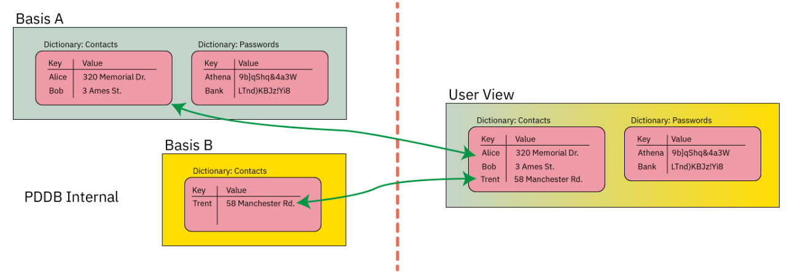
The "User View" of the PDDB is the union of the data contained in Basis A and Basis B.
If the user were to lock Basis B, the "User View" would now lack the data contained within Basis B:
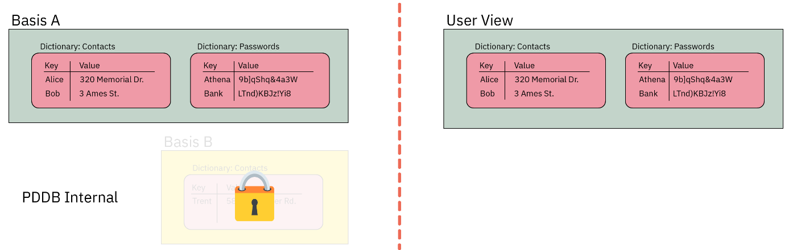
Furthermore, each Basis is implemented using ciphers that have a particular characteristic, namely, IND$-CPA: the ciphertext is indistinguishable from random noise. AES-GCM-SIV has this property (and if I'm not mistaken, provably indistingishable, but ask a cryptographer for the latest research).
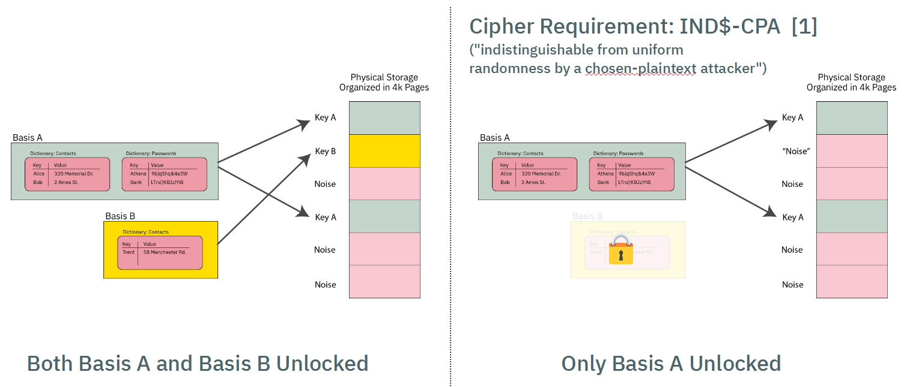
Thus, when a Basis is locked, its data pages look indistinguishable from other pages in the PDDB storage area that have previously initialized with "noise" (more specifically, the output of a ChaCha8 CSPRNG that conditions the joint output of two TRNGs, a ring oscillator and an avalanche generator).
This quality of indistinguishability from free space is the source of plausible deniability. Side channels such as free space and API-level leakage degrade the amount of plausible deniability. See the chapter on Security and Deniability for an in-depth discussion on deniability attacks and mitigations.
Orthogonal Virtual Page Table Structure
Page Table Format
The simplified diagram above would require a user to scan every page of storage and trial-decrypt each page to discover the full extent of user data. It also lacks an index to track what data goes where.
These two problems are solved by using a classic "page table" mechanism to map Basis data onto the actual storage array. The virtual memory space of any given Basis is 64 bits, with pages that are 4064 bytes long (this is 4096 physical bytes less a per-page overhead for AEC-GCM-SIV + journaling)
The page table itself consists of entries that are 128-bits long (sized to match the length of an AES block), that are encrypted with AES-ECB.
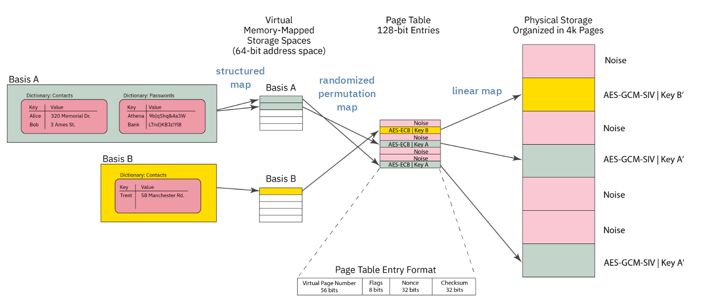
Each page table entry is encodes the following data:
- 52-bit virtual page number of the physical page corresponding to the offset of the page table, stored as a 56-bit zero-padded field.
- 8 bits of flags
- 32-bit nonce (see discussion on collisions)
- 32 bit
murmur3hash checksum
AES-ECB is tricky to use. However, it is fast, and requires no dependency to adjacent blocks. A nonce is provided to frustrate known-plaintext attacks. There is a trade-off between nonce size, checksum length, and fitting everything within a single AES block. The 32-bit nonce does not provide perfect collision resistance, but the potential leakage is hypothesized to be much smaller than other known side channels in the architecture. The impact of a collision is also negligible: an attacker will know that they have discovered a ciphertext that corresponds to a valid page table entry, but they don't know to which Basis or to what address.
The page table entry is also protected with a 32-bit murmur3 hash checksum that is not meant to be a cryptographic check; it is instead a fast "go/no-go" check on the potential validity of a page table entry. A page table entry is only considered fully valid until the corresponding data section also decrypts to the data key. The data sections are protected with a proper cryptographic-strength MAC via AES-GCM-SIV, so it's not a problem if we get occassional false-positives on the page table. In practice, false-positives turn into pages that are allocated-to-nowhere, e.g. the space never gets used to store useful data.
Thus the page table entry has the following characteristics:
- Maps physical pages to virtual pages
- Fits in an AES block
- Is quick to check for definitely invalid entries, but has a low false-positive rate that can be verified with a fully cryptographic MAC.
- Has some protection against known-plaintext attacks; some leakage of information is expected, but is of minor consequence
Page Table Orthogonality
All Bases share storage for their page table entries in the same page table, and each Basis has an identical virtual address space. Collisions of Bases are avoided (that is, the Bases are orthogonal) because the 256-bit AES key used to encrypt each page table entry is different. Thus, even if the plaintext of a page table entry is identical between several Bases, each Basis has a different AES key, and thus no Basis can accidentally decrypt the page table entry of another Basis.
Thus, when a Basis is "mounted", the first operation is to take the page table key and trial-decrypt every block in the page table region. Blocks whose checksum match (along with a few other consistency properties) are populated into a HashMap that forms a candidate page table mapping for a given Basis. For Precursor's 98MiB PDDB, this means every time a Basis is mounted, about 25,000 AES blocks corresponding to as many pages need to be decrypted and trialed. This is a reasonably fast operation, thanks to the hardware AES engine, taking a couple of seconds total.
Virtual Memory Layout
The virtual memory layout of every Basis is identical.
A VPAGE in Basis space is is 0xFE0 (4,064) bytes long, which is equal to a PAGE of 4096 minus 32 bytes of encryption + journal overhead.
4064 is nice because it has convenient factors: 1, 2, 4, 8, 16, 32, 127, 254, 508, 1016, 2032, 4064.
The BasisRoot is located at VPAGE #1 (VPAGE #0 is always invalid, to make Options zero-cost).
It contains a count of the number of valid dictionaries in the Basis. Dictionaries are found at fixed offsets starting at 0xFE_0000 and repeating every 0xFE_0000 intervals, with up to 16383 dictionaries allowed. A naive linear search is used to scan for dictionaries, starting at the lowest address, scanning every 0xFE_0000, until the correct number of dictionares have been discovered. A dictionary can be effectively deleted by marking its descriptor as invalid.
A stride of 0xFE_0000 means that dictionary descriptors can be up to 4096 VPAGEs long. A dictionary
descriptor consists of a DictDescriptor header, some bookkeeping data, plus a count of the number
of keys in the dictionary. Following the header is a list of key descriptors. Similar to the Descriptors,
the key descriptors are stored at a stride of 127 (or 32 per VPAGE); they can be deleted by being marked
as invalid, and a linear scan is used to identify all the entries. A KeyDescriptor contains the name
of the key, flags, its age, and pointers to the key data in virtual memory space + its length.
This leads to a name length restriction of roughly 115 characters for keys and dictionaries, which is
about half of what most filesystems allow, but accommodates roughly 99.99% of the use cases.
Thus adding a new dictionary always consumes at least one 4k page, but you can have up to 15 keys in that dictionary with no extra bookkeeping cost, once the first dictionary is added.
Each VPAGE is encrypted with AES-GCM-SIV, takes "Additional Authenticating Data", or AAD. The AAD associated with the BasisRoot consist of a bytewise concatenation of:
- Basis name
- Version number (complicates downgrade attacks)
- FPGA's silicon DNA number (makes a naive raw-copy of PDDB data to another device unusable; but of course, the DNA ID can be forged)
Here are some of the assumptions that went into designing the PDDB:
- Most mutability happens on the data keys themselves (keys are read/write/modify routinely).
- Dictionary modifications (key addition or removal) are about 20x less frequent than key mods.
- Basis modifications (creation/removal of dictionaries) is about 10x less frequent than dictionary .
- According to https://www.pdl.cmu.edu/PDL-FTP/HECStorage/Yifan_Final.pdf, 0.01% of files (1 in 10, require a name over 100 bytes long; 0.1% require longer than 64 bytes. There longest filename tified was 143 bytes long. Study surveys ~14M files on the LANL network.
- Same study says 99.9% of directories have under 1k files, 99.999% under 10k
Basis Virtual Memory Layout
| Start Address | Description |
|---|---|
| 0x0000_0000_0000_0000 | Invalid -- VPAGE 0 reserved for Option<> |
| 0x0000_0000_0000_0FE0 | Basis root page |
| 0x0000_0000_00FE_0000 | Dictionary[0] |
| +0 | … Dict header (127 bytes) |
| +7F | …… Maybe key entry (127 bytes) |
| +FE | …… Maybe key entry (127 bytes) |
| +FD_FF02 | …… Last key entry start (128k possible) |
| 0x0000_0000_01FC_0000 | Dictionary[1] |
| 0x0000_003F_7F02_0000 | Dictionary[16382] |
| 0x0000_003F_8000_0000 | Small data pool start (~256GiB) |
| … Dict[0] pool = 16MiB (4k vpages) | |
| …… SmallPool[0] | |
| +FE0 | …… SmallPool[1] |
| 0x0000_003F_80FE_0000 | … Dict[1] pool = 16MiB |
| 0x0000_007E_FE04_0000 | … Dict[16383] pool |
| 0x0000_007E_FF02_0000 | Unused |
| 0x0000_007F_0000_0000 | Medium data pool start |
| … TBD | |
| 0x0000_FE00_0000_0000 | Large data pool start (~16mm TiB) |
| …… Demand-allocated, bump-pointer; currently no defrag | |
Memory Pools
Key data is split into three categories of sizes: small, medium, and large; but the implementation currently only handles small and large keys. The thresholds are subject to tuning, but roughly speaking, small data are keys <4k bytes; large keys are everything else.
Large keys are the simplest - each key starts at a VPAGE-aligned address, and allocates
up from there. Any unused amount is wasted, but with a ~32k threshold you'll have no worse
than 12.5% unused space, probably closer to ~7%-ish if all your data hovered around the threshold.
The allocation is a simple pointer that just keeps going up. De-allocated space is never defragmented,
and we just rely on the space being "huge" to save us.
Small keys are kept in VPAGE-sized pools of data, and compacted together in RAM. The initial, naive
implementation simply keeps all small keys in a HashMap in RAM, and when it comes time to sync them
to disk, they are sorted by update count, and written to disk in ascending order.
Medium keys have a TBD implementation, and are currently directed to the large pool for now.
Size Limits
The biggest key the PDDB can handle, at least in this version, 32GiB. No, this is not web scale, but it's big enough to hold a typical blu-ray movie as a single key.
One can adjust this constant up or down, and the trade-off is, you get more or less total number of large keys allocated over the life of the filesystem. This is because we simply "increment a pointer" when a new large key is added to create the next virtual memory spot for the large file, meaning each key get allocated a full 32GiB of virtual memory space for it to grow into.
At 32GiB, you can create a lifetime total of about 200 million keys (this includes keys you've previously deleted, until we create a mechanism for sweeping through the memory space and tracking de-allocations).
Note that a "large" keys includes anything over 4kiB, so if you create a 5kiB file, it can potentially grow to 32 GiB without bumping into the next large file.
This is a very "lazy" way to deal with large files. Given that the PDDB is initially designed for a 32-bit device with only 128MiB of memory and a read/write lifetime of 100k cycles for the FLASH, 200 million file allocations is probably greater than the lifetime of the device itself. If the PDDB migrates to a larger handphone-style application, I think it'll probably still hold up OK with 200 million total large file allocations over the device lifetime and a limit of 32GiB. That's about 73k files created per day for 10 years, or about 50 files per minute -- roughly one new file per second for 10 years straight before the PDDB runs out of virtual memory space.
A web server creating a >4k temporary log file for every client that hit and then deleting it would probably crush this limit in months. So don't use the PDDB to back a high volume web server. But it's probably OK for a consumer electronics device with a typical lifetime of less than 10 years.
If you really think you want larger files and also more write life, you'd need to implement an in-memory "free" file allocator, but honestly, this is not something I think we need to burn resources on for the initial target of the PDDB (that is, a 100MiB device with 100k read/write endurance lifetime). Anyways, the code is written so one can just slide this constant up or down and change the behavior of the system; it's recommended you reformat when you do that but I /think/ it should actually be OK if you made a change "on the fly", because the bump allocator only cares about the size of data it intends to allocate, and disregards everything in the past.
Also note that in practice, a file size is limited to 4GiB on a 32-bit Precursor device anyways
because the usize type isn't big enough. Recompiling for a 64-bit target, however, should give
you access to the full 32GiB file size limit.
RAM Pressure
The PDDB retains in RAM a page table for every Basis. There are about 25,000 potential pages on a Precursor device, and there are no duplicate pages between Bases; thus, it's estimated that the page table structure may take about 500kiB of space at its largest.
In addition to the page tables, the PDDB agressively caches all "small" keys. The current implementation assumes that any small key is always "hot" in cache, and the disk is just a write-through backing store in case power is lost. In practice, the heap size limit of the PDDB server is about 2MiB, so, the system should crash if one starts to push around a megabyte total of small key data. That's about 256 exactly 4k-sized keys, but typically small keys are very small, about 32 bytes, so the practical limit is probably closer to 10k-20k 32-byte keys.
Large keys consume about one 4k-page per key, regardless of the key size. Large keys only retrieve their data when requested, and will keep only the most recently accessed page in RAM, regardless of the size of the large key. Thus one could store a several-megabyte file in a large key, and not worry about blowing out the cache.
However, because the large key cache is so simple, it has performance problems, especially for situations where one plans to access large key data randomly, or in the worst case, they are accessing bytes that happen to cross a page boundary -- every time you cross the boundary, the old page is forgotten, and the new page is read in.
The caching mechanism can be improved down the road, but, at the moment for an application like vault, the current implementation should be more than adequate to handle hundreds of password records.
The "Make Before Break" (MBBB) Structure
In order to protect against data loss in case of an untimely power outage, several pages of FLASH is devoted to the "make before break" feature. The core problem is that a single erase page of the page table contains records for 256 page table entres. If there is a power outage while updating one of the entries, all of the other 255 entries are also lost.
Thus, the MBBB mechanism creates a shadow area where the page table page being updated can be copied, prior to erasing it.
Initially, the MBBB area is blank (all FF's). When a page table entry needs to be updated, the whole page containing the entry is copied to a random sector in the MBBB (the randomness is for wear-levelling, not security) with the changes applied, and then the page containing the page table entry is erased.
When the next page table entry needs to be updated, the MBBB page table image is then written to the blank slot in the page table, and the process repeats.
There is no mechanism to record where the MBBB page is:
- The MBBB area is only consulted if a blank page is found in the page table
- "Blankness" of an area is determined by only consulting the first 16 bytes and checking if they are 0xFF. If it is, the entire page is considered blank.
- The MBBB area may only contain 0 or 1 backup pages. Thus, when it is consulted, the algorithm searches for the first non-blank page and uses that as the MBBB page.
Free Space
Plausible deniability is all about reducing the number of side channels that can leak information about the existence or non-existence of secret data. The amount of free space in the PDDB is a potent side channel. If the true amount of free space could be known, an adversary can use that to deduce the existence or non-existence of additional secrets within the PDDB beyond the ones revealed to the adversary.
The PDDB's solution to this is to create a cache of free space that represents a defined fraction of the total true free space. The parameters are tunable, but in v0.9.9 the default parameters are to allocate up to 50% +/- 10% of the smaller of the true free space or the capacity of the FSCB toward the free space cache, known as the FSCB ("Fast Space Cache Buffer"). The +/-10% is a fudge factor that is determined by the TRNG. Note that most of the time, the capacity of the FSCB (about 2000 pages, or 7.5% of Precursor hardware capacity) is the limit of the trackable space, due to the capacity limit inherent in the FSCB.
Thus, the situation for free space in the PDDB looks a bit like the schematic shown below, where the pink areas are "maybe noise? maybe data?" and the gray areas are "definitely free space" (the actual situation is much more fragmented, this is just a cartoon).
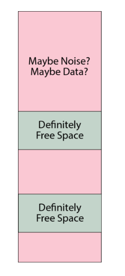
An adversary can thus query the FSCB and know that, for example, a device may currently have about 7% of the total capacity marked as free space. However, they cannot say for sure that this means that the device is 93% full -- it could be that the device is brand new and has nothing allocated, but the free space has just hit the limit of the FSCB capacity. Or it could be any number of intermediate states in between: it would be hard to prove beyond a reasonable doubt the exact state of disk usage.
In the case that the FSCB is exhausted, the user is greeted with a prompt that warns them that the FSCB has been exhausted, and in order to proceed without data loss, every secret Basis must be enumerated (that is, its name and password must be presented to unlock it; the distinction between enumeration and unlocking is that enumeration simply counts the pages used, without attempting to mount any filesystem structures). A user can bail out of enumeration, causing the operation that triggered the FSCB refill to fail with an out-of-memory error. Likewise, failure to present a secret Basis at this point could result in its data being pulled into the FSCB, and ultimately being deleted.
The FSCB refill proceeds to enumerate every page in every Basis into a single "master" record of disk usage. It then randomly selects pages out of the unused pages (the inverse of the disk usage record) until the FSCB is full. The system consumes entries out of the FSCB in random order. Thus the FSCB is also a wear-levelling mechanism, since free blocks are handed out in random order.
At the implementation level, each FSCB entry is a single u32 that tracks the physical page number of a free page plus a few bits for flags to help with journaling (as described in the SpaceUpdate section below). There is a flag for 64-bit physical addresses too, so the FSCB can be upgraded to run on a 64-bit CPU. The entire FSCB is exactly 2 pages long on v0.9.9 (and adjustable with a const). The structure is padded with 0's to full length regardless of the amount of actual free space recorded in it; note that a 0-record is automatically ignored due due to the valid flag being 0. The fixed-length padded structure is encrypted with AES-GCM-SIV using the .System Basis' data key and written to the FSCB area at a random offset. The FSCB is later identified by querying the first 16 bytes of every page in the FSCB area and choosing the one that is not all 0xFF.
SpaceUpdate Records
The FSCB itself becomes a hotspot for write activity that would rapidly wear out if every time a page was allocated the entire encrypted structure had to be erased and re-written. The good news is that most flash devices (including Precursor's) support incremental writing to a blank (0xFF) space without erasing it, e.g. you can take any byte that is currently 0xFF and set it to any other number without having to first erase the whole sector. Most journaling flash filesystems take advantage of this, but it is more difficult to do in a plausibly deniable sense because all of the free data space in the PDDB has been pre-initialized with random noise.
The solution to this is to use blank sectors in the FSCB -- which are kept as 0xFF -- for a journal. So, as pages are consumed from the FSCB, they are journaled to a blank area in the FSCB using incremental-writing techniques. Thus the total amount free space available is determined first by reading the master FSCB record, and then subtracting the impact of journal entries. These incremental updates are known as SpaceUpdate records. Each SpaceUpdate record is encrypted with AES-ECB, and thus its size is 16 bytes.
The three types of records (0xFF empty space, FastSpace and SpaceUpdate) are differentiated by examining the first 32 bytes of a page:
- If bytes 0-31 are
0xFF, the entire page must be blank (empty space) - If any of bytes 0-15 are not 0xFF, the page must be the start of a
FastSpacemaster record. The master record itself may span mulitple pages but it must be consecutive pages from its start. - If all bytes of 0-15 are 0xFF, and any bytes of 16-31 are not 0xFF, then the page marks the start of
SpaceUpdaterecords. ASpaceUpdaterecord is similar to that of a page table entry, but with the flags set differently to indicate the life cycle of that space, and a largeru64nonce. From that page until the end of theFastSpacearea,SpaceUpdaterecords may be written.
The SpaceUpdate records are interpreted sequentially, from the lowest address to the highest address encountered. The latest record takes precedence. Thus, a single page could be allocated, de-allocated, and re-allocated in sequence, and the last re-allocation is the ultimate record that affects the net FSCB.
When the SpaceUpdate record fills up the FSCB area (or it bumps into the existing FSCB), the records are automatically compacted; the FSCB is reduced by any allocated space at that time, the SpaceUpdate area is cleared, and a new random location is picked for the FSCB to wear-level the FSCB area. This all happens without user intervention or awareness, except for the fact that the operation which triggered the flush might take a bit longer than usual (about an extra 0.3s).
Note that the SpaceUpdate journal by definition leaks information about the most recent few hundred block allocations, so in the event that the unlock PIN is compromised, it could represent a significant loss of deniability. In order to counter this, a user can manually run pddb flush at any time compact the SpaceUpdate records and effectively delete the journal. Note that this doesn't require enumerating any Bases, because this only clears a journal of operations on known free space, and it also does not attempt to allocate any new free space.
Note: the hotfix for v0.9.9 incorporates a call to flush the journal once every 24 hours of uptime automatically. The call should be safe to run asynchronously since the FSCB state is independent of filesystem state.
Physical Layout
The physical layout of the PDDB (as of v0.9.9) is as follows, from lowest to highest address:
- Page tables
- Static crypto data (one page)
- MBBB area (10 pages)
- FSCB (16 pages)
- Data pages (1:1 map to page table entries)
In the case that you're looking at a backup image, a single page of memory is pre-pended to the PDDB area that contains the root key block plus some versioning data, encrypted with the BIP-39 backup key using AES-GCM-SIV with key commitment.
Deriving The PDDB's Keys
This chapter examines the cryptopraphic material used to encrypt the PDDB, and traces its origin all the way back to the hardware root of trust. It assumes you are familiar with the general structure of the PDDB.
Basis Keys
A Basis within the PDDB holds a virtual filesystem that is unionized with the other Bases. A Basis is protected with a name and password combination. Neither the name nor the password, nor a hash or salt for a password, is stored within the PDDB, as such records would be a sidechannel revealing the existence of a secret Basis. Thus the confidentiality of a Basis is derived entirely from the strength of the password, but there is a generic, per-device salt (perhaps more accurately called a "pepper") that means brute force attackers must prepare hash tables unique to each device.
A Basis is defined by two keys:
- A 256-bit page table key, used to derive an AES cipher run in ECB
- A 256-bit data key, used to derive an AES-GCM-SIV cipher
The cryptographic matter pertaining specifically to the PDDB is stored in raw FLASH in a header with the following structure:
#[repr(C)]
pub(crate) struct StaticCryptoData {
/// a version number for the block
pub(crate) version: u32,
/// aes-256 key of the system basis page table, encrypted with the User0 root key, and wrapped using NIST SP800-38F
pub(crate) system_key_pt: [u8; WRAPPED_AES_KEYSIZE],
/// aes-256 key of the system basis, encrypted with the User0 root key, and wrapped using NIST SP800-38F
pub(crate) system_key: [u8; WRAPPED_AES_KEYSIZE],
/// a pool of fixed data used for salting. The first 32 bytes are further subdivided for use in the HKDF.
pub(crate) salt_base: [u8; 4096 - WRAPPED_AES_KEYSIZE * 2 - size_of::<u32>()],
}
The structure is sized to be exactly one page of memory, with the "remaining" data filled with TRNG-derived salt. The version number is considered a "hint", as it is not signature protected and there are no anti-rollback measures.
The PDDB has a default Basis called .System, which has its page table and data keys stored as wrapped keys by the device's root enclave. It is the only Basis treated in this manner. All other Bases are derived from the name and password of the basis, as hashed by salt_base. Any Basis that is not the .System Basis is referred to as a "secret Basis".
Secret Basis Key Derivation
A secret Basis key derivation is performed using the folowing algorithm, implemented in Rust but presented here in Python for clarity:
for name, pw in basis_credentials.items():
# Basis names are limited to 64 bytes encoded as UTF-8.
# Copy the Basis name into a 64-byte array that is initialized with all 0's
bname_copy = [0]*64
i = 0
for c in list(name.encode('utf-8')):
bname_copy[i] = c
i += 1
# Passwords are limited to 72 bytes encoded as UTF-8. They are
# always null-terminated, so a 73-byte 0-array is prepared.
plaintext_pw = [0]*73
pw_len = 0
for c in list(pw.encode('utf-8')):
plaintext_pw[pw_len] = c
pw_len += 1
pw_len += 1 # For the null termination
# Hash the 64-byte basis name, 73-byte password and the `salt_base` using SHA512/256.
hasher = SHA512.new(truncate="256")
hasher.update(salt_base[32:]) # from byte 32 until the end of the salt region (couple kiB)
hasher.update(bytes(bname_copy))
hasher.update(bytes(plaintext_pw))
derived_salt = hasher.digest()
# Use the first 16 bytes of the derived salt and the null-terminated plaintext password
# to drive a standard `bcrypt` with a work factor of 7. We can only do 7 because the
# target hardware is a single-issue, in-order 100MHz RV32-IMAC.
bcrypter = bcrypt.BCrypt()
hashed_pw = bcrypter.crypt_raw(plaintext_pw[:pw_len], derived_salt[:16], 7)
# Derive a key for the page table, using HKDF/SHA256, plus the first 32 bytes of salt,
# and an info word of "pddb page table key"
hkdf = HKDF(algorithm=hashes.SHA256(), length=32, salt=pddb_salt[:32], info=b"pddb page table key")
pt_key = hkdf.derive(hashed_pw)
# Derive a key for the data pages, using KHDF/SHA256, plus teh first 32 bytes of salt,
# and an info word of "pddb data key"
hkdf = HKDF(algorithm=hashes.SHA256(), length=32, salt=pddb_salt[:32], info=b"pddb data key")
data_key = hkdf.derive(hashed_pw)
keys[name] = [pt_key, data_key]
System Basis Key Derivation
The System basis keys for the PDDB are wrapped by the Precursor's on-board root-keys block. They are wrapped using the User0 key (also referred to as the user root key). Please see the Xous wiki for more information on the layout of the root key block.
# Pseudocode for accessing the root keys from the key block.
# The user key is at offset 40, 32 bytes long.
user_key_enc = get_key(40, keyrom, 32)
# The pepper is at offset 248, 16 bytes long.
pepper = get_key(248, keyrom, 16)
# The password type is XOR'd in to the pepper, to make it less convenient
# for pre-computed rainbow tables to re-use their work across various passwords.
pepper[0] = pepper[0] ^ 1 # encodes the "boot" password type into the pepper
# The unlock PIN is up to 72 bytes long, encoded as UTF-8. Prepare a null-terminated
# version of the password. Here the pseudocode refers to the "unlock PIN" as "boot_pw"
boot_pw_array = [0] * 73
pw_len = 0
for b in bytes(boot_pw.encode('utf-8')):
boot_pw_array[pw_len] = b
pw_len += 1
pw_len += 1 # null terminate, so even the null password is one character long
# Use bcrypt on the password + pepper to derive a key. See above for notes on
# the use of a work factor of 7.
bcrypter = bcrypt.BCrypt()
hashed_pw = bcrypter.crypt_raw(boot_pw_array[:pw_len], pepper, 7)
# Expand the derived 24-byte password to 32 bytes with SHA512/256.
hasher = SHA512.new(truncate="256")
hasher.update(hashed_pw)
user_pw = hasher.digest()
# XOR the derived key with the encrypted, stored user_key to get the plaintext user_key
user_key = []
for (a, b) in zip(user_key_enc, user_pw):
user_key += [a ^ b]
# Derive an anti-rollback user state. This takes the user_key and hashes it
# repeatedly, a maximum of 255 times. Every time we need to version the system
# with anti-rollback, we increase a counter stored at offset 254 in the keyrom
# and subtract this from 255. This means newer versions can still access older
# versions by applying N extra hashes (where N is the number of versions older)
# that need to be accessed, while making it impossible for an application holding
# the current key to guess what the next key might be in the anti-rollback sequence.
rollback_limit = 255 - int.from_bytes(keyrom[254 * 4 : 254 * 4 + 4], 'little')
for i in range(rollback_limit):
hasher = SHA512.new(truncate="256")
hasher.update(bytes(user_key))
user_key = hasher.digest()
# user_key now contains the actual key that is used to wrap the PDDB system keys.
# Access the wrapped system keys from the StaticCryptoData structure (as defined above)
wrapped_key_pt = static_crypto_data[4:4+40]
wrapped_key_data = static_crypto_data[4+40:4+40+40]
# Extract the .System key by unwrapping the system keys with AES-KWP, per NIST SP800-38F
# (or identically RFC 5649).
key_pt = aes_key_unwrap_with_padding(bytes(user_key), bytes(wrapped_key_pt))
key_data = aes_key_unwrap_with_padding(bytes(user_key), bytes(wrapped_key_data))
# The key unwrapping method will fail with very high probability if the provided
# user password is incorrect. Thus the results from the key unwrap must be checked
# and handled for the case of an incorrect boot password.
The application of the page table and data keys are discussed in the chapter on the Basis Internal Structure. Note that the AES-GCM-SIV for the data keys does require AAD, which includes the device-specific DNA as well as the version number of the PDDB.
Native API
The "native" API for the PDDB is a set of xous-specific calls that one can use to manage and access the PDDB.
All of the native API method signatures can be found in lib.rs and the frontend module. Proper Rustdoc for these is on the list of things to do. This chapter treats the native API at an abstract level, with a focus on code examples rather than 100% coverage of every feature.
The Pddb Object
Any native access to the PDDB goes through the Pddb object. You will need to add the pddb service to your Cargo.toml file, and then create a PDDB object like such:
let pddb = pddb::Pddb::new();
The method you'll use the most is the .get() method on the Pddb object. It has a signature like this:
pub fn get(
&self,
dict_name: &str,
key_name: &str,
basis_name: Option<&str>,
create_dict: bool,
create_key: bool,
alloc_hint: Option<usize>,
key_changed_cb: Option<impl Fn() + 'static + Send>
) -> Result<PddbKey>
dict_name and key_name are the names of the dictionary and key. They can be any valid UTF-8 string but you should avoid the : character as that is the path separator. Dictionary names can be up to 111 bytes long, and key names up to 95 bytes long.
basis_name is an optional Basis name, that can be any valid UTF-8 string that avoids :. Basis names can be up to 64 bytes long. If basis_name is None, then the Basis to use will be computed as follows:
- If the key exists in any Basis, the most recently open Basis is accessed for that key.
- If the key does not exist, then either it returns an error (depending on the flags), or it creates the key in the most recently opened Basis.
The System basis (available at pddb::PDDB_DEFAULT_SYSTEM_BASIS) is the fall-back as it is always mounted. Administrative operations, especially ones that deal with non-sensitive settings, should generally specify the system basis explicitly so that options don't mysteriously reset or disappear when secret Bases are mounted or unmounted.
create_dict specifies to create the dictionary, if it does not already exist.
create_key specifies to create the key, if it does not already exist.
alloc_hint is a hint to the system as to how much space it should allocate for the key. This parameter is only used when the key is created; later calls will ignore this. Generally, system performance will be much faster if you provide an alloc_hint, especially for small keys. Without the hint, the key size starts at 4 bytes, and every byte written deletes and re-allocates the key to grow to the next byte size. This is mitigated partially by buffering in the Read API, but if you have a sense of how big a key might be in advance, it's helpful to pass that on.
key_changed_cb is a callback meant to notify the key accessor that the key's status has changed. Typically this would be the result of someone locking or unlocking a secret Basis. As a static + Send closure, generally one would place a call to xous::send_message() inside the call, that would send a message to another server to handle this situation, similar to this:
static SELF_CONN: AtomicU32 = AtomicU32::new(0); // 0 is never a valid CID
pub(crate) fn basis_change() {
if SELF_CONN.load(Ordering::SeqCst) != 0 {
xous::send_message(SELF_CONN.load(Ordering::SeqCst),
Message::new_scalar(Opcode::BasisChange.to_usize().unwrap(), 0, 0, 0, 0)
).unwrap();
}
}
// In the main loop, there would be some code similar to this:
fn main () {
let xns = xous_names::XousNames::new().unwrap();
let sid = xns.register_name("_My Server_", None).unwrap();
let conn = xous::connect(sid).unwrap();
SELF_CONN.store(conn, Ordering::SeqCst);
// at this point SELF_CONN will be non-zero
}
// later on, a piece of code might refer to the function as follows:
fn myfunc() {
let key = pddb.get(
&dictname,
&keyname,
None,
false, false, None,
Some(crate::basis_change)
).unwrap();
// if you want the callback to be None, you must specify the type of None as follows:
let key2 = pddb.get(
&dictname,
&key2name,
None,
false, false, None,
None::<fn()>
).unwrap();
}
Access Examples
The general flow for writing to the PDDB is as follows:
- Serialize your data into a
[u8]slice - Fetch the key using the
pddb.get()method - Use any
Writetrait fromstd::io::Writeto write the data - Sync the PDDB (highly recommended, especially at this early stage)
The general flow for reading data from the PDDB is as follows:
- Fetch the key using the
pddb.get()method - Use any
Readtrait fromstd::io::Readto write the data - Deserialize the data into a
[u8]slice
Below is an example of writing a key.
use std::io::Write;
let pddb = pddb::Pddb::new();
let record = PasswordRecord {
version: VAULT_PASSWORD_REC_VERSION,
description,
username,
password,
// ... other line items
};
let ser = serialize_password(&record);
let guid = self.gen_guid();
log::debug!("storing into guid: {}", guid);
pddb.borrow().get(
VAULT_PASSWORD_DICT,
&guid,
None, true, true,
Some(VAULT_ALLOC_HINT), Some(crate::basis_change)
)
.expect("error accessing the PDDB")
.write(&ser)
.expect("couldn't write data");
log::debug!("syncing...");
pddb.borrow().sync().ok();
And below is an example of reading a key.
use std::io::Read;
let pddb = pddb::Pddb::new();
let mut record = pddb.borrow().get(
VAULT_PASSWORD_DICT,
&key,
None,
false, false, None,
Some(crate::basis_change)
).expect("couldn't find key");
let mut data = Vec::<u8>::new();
match record.read_to_end(&mut data) {
Ok(_len) => {
if let Some(pw) = deserialize_password(data) {
// pw now contains the deserialized data
} else {
// handle errors
}
}
Err(e) => // handle errors
}
Management
The Pddb object also has methods to help manage the PDDB, including:
list_basis(..)create_basis(..)unlock_basis(..)lock_basis(..)delete_basis(..)delete_key(..)delete_dict(..)list_keys(..)list_dict(..)is_mounted_blocking(..)- blocks until the PDDB is mounted
For non-blocking queries of PDDB mount status, there is an object called PddbMountPoller which has a method is_mounted_nonblocking().
std API
⚠ The std API is only accurate on real hardware and Renode emulation. std on hosted mode will use the std implementation of the host.
The PDDB is also accessible from std::fs::File, as described here:
fn main() {
// Create an example file under the `sys.rtc` key
let mut file = std::fs::File::create("sys.rtc:test").unwrap();
file.write_all(&[1, 2, 3, 4]).unwrap();
// Close the file.
core::mem::drop(file);
// Open the example file and ensure our data is present
let mut file = std::fs::File::open("sys.rtc:test").unwrap();
let mut v = vec![];
file.read_to_end(&mut v).unwrap();
assert_eq!(&v, &[1, 2, 3, 4]);
// Close the file.
core::mem::drop(file);
// Remove the test file
std::fs::remove_file("sys.rtc:test").unwrap();
}
The example above shows the process of creating, reading from, and deleting a file.
The main difference from a Unix-like or Windows interface is that the path separator on Xous is :.
At this time, PDDB has no restrictions on dict or key names, meaning it's possible to create a key with a : in the name. The standard library functions won't be able to disambiguate these paths at this time, and so this character will likely be made illegal in key names. This is somewhat remeniscent of the Windows Registry where \ is a path separator that is illegal in path names yet is allowed in key names.
Path Conventions
A PDDB Path may be a dict, a dict + a key, a basis + dict, or a basis + dict + key. In the following examples, the given Basis, Dict, and Key are as follows:
- Basis:
.System - Dict:
wlan.networks - Key:
Home Wifi
A canonical path looks like:

Examples
:Home Wifi-- A basis named "Home Wifi":.System:-- A basis named ".System"wlan.networks-- A dict named "wlan.networks" in the default basiswlan.networks:recent-- A dict named "wlan.networks:recent", which may be considered a path, in the default basis. This also describes a key called "recent" in the dict "wlan.networks", depending on whether:.System:wlan.networks-- A dict named "wlan.networks" in the basis ".System":.System:wlan.networks:recent-- a fully-qualified path, describing a key "recent" in the dict "wlan.networks" in the basis ".System". Also describes a dict "wlan.networks:recent" in the basis ".System" when:-- The root, which lists every basis. Files cannot be created here. "Directories" can be created and destroyed, which corresponds to creating and destroying bases.::-- An empty basis is a synonym for all bases, so this corresponds to listing all dicts in the root of the default basis.- -- An empty string corresponds to listing all dicts in root the union basis.
Corner cases
: :-- A basis named " ". Legal, but questionable:-- Also a dict named " " in the default basis.:-- A key named " " in a dict called " ". Legal.baz:-- A dict named "baz" in the default basis with an extra ":" following. Legal.baz:foo:-- Currently illegal, but may become equal tobaz:fooin the future.:::-- An key named ":" in an empty dict in the default basis. Illegal.::::-- An key named "::" in an empty dict in the default basis. Illegal.::foo-- A key "foo" in the default basis.:lorem.ipsum:foo:baz-- A key called "foo:baz" in the basis "lorem.ipsum". May also describe a dict "foo:baz" in the basis "lorem.ipsum" if treated as a directory.:bar:lorem.ipsum:foo:baz-- A key called "baz" in the dict "lorem.ipsum:foo" in the basis "bar", or a dict called "lorem.ipsum:foo:baz". Legal.
Any reference to "default basis" depends on whether the operation is a "read" or a "write":
- "Read" operations come from a union, with the most-recently-added basis taking precedence
- "Write" operations go to the most-recently-added basis that contains the key. If the key does not exist and "Create" was specified, then the file is created in the most-recently-added basis.
API Status
As of v0.9.9, there is basic support for std::fs and std::path. As an example, the following features work:
- Opening and closing files
- Reading from and writing to files
- Seeking within an open file
- Creating new files
- Deleting files
- Listing directories
- Creating directories
- Deleting directories
There are a lot of features that do not work, or do not currently make sense. We'll add these features if there is demand:
- Copying files
- Truncating currently-open files
- Duplicating file descriptors
- Getting creation/access/modification times on files
- Symlinks
- Readonly files
- Permissions
- Renaming files
Additionally, the PDDB native API supports callbacks to notify senders of various file events such as deletions and updates. The spec for the native callback API is still a work in progress.
Testing and CI
Developers using the PDDB will find that the PDDB native API is accurate and fully functional on all of the standard modes for Xous: running on real hardware, Renode emulation, and Hosted mode emulation.
In hosted mode, the PDDB will create a smaller version of itself (just 4MiB in length) by creating a file called tools/pddb-images/hosted.bin. In Renode, the PDDB creates a full-length PDDB (98MiB) at tools/pddb-images/renode.bin. The passwords in Renode are hard-wired to a for both the boot PIN and the update password, and the silicon DNA is 0x0.
The following features are available to assist with testing the PDDB in hosted mode:
"deterministic"-- forces a deterministic seed to the RNG in hosted mode"ci"-- adds auto-running self-tests to the build"pddbtest"-- addsshellchattest commands using the native API to the build; also works on hardware"autobasis"-- patches over Basis enumeration commands to automatically create a test set of Bases."test-rekey"-- changes the DNA in hosted mode so re-key migrations can be tested
By default, "pddbtest" is enabled in the cargo xtask run configuration, enabling some extra commands in the shellchat PDDB menu.
The "ci" Feature
The "ci" test automatically kicks off a set of scripted tests that run inside the PDDB itself; so this does not use the API calls, but instead it calls methods normally only accessible internally within the server. The test does a series of stress-tests, creating and deleting keys of random sizes, with a specified naming scheme and data contents so that they can be automatically analyzed for correctness. The analysis is enabled by calling dbg_dump() periodically through the test -- an API call that is only made available in hosted mode. This call creates a new file that is a snapshot of the PDDB, along with a dump of the system keys, so that an analysis script can decrypt and analyze the PDDB's structure.
The correctness analysis of "ci" runs is done by the tools/ppdbdbg.py script. This script takes the keys provided, and decrypts the PDDB binary image. It scans the page table, checks the make-before-break buffer, free space tables, dictionaries and keys for consistency. It expects to see a certain pre-defined pattern of data in the dictionaries -- if you run this on a dump not generated by "ci", it will throw CI errors.
The "ci" script is not a "true" CI in the sense that it is not currently run automatically on every build. Part of the complication is that there isn't a good way in hosted mode to "quit" the emulation based on an internal trigger.
A set of true "CI" scripts are also being developed that will run for every build on the hardware-in-loop testing.
The "autobasis" Feature
This feature will automatically create and enumerate a couple dozen Bases in the PDDB, according to an algorithm to derive names and passwords. This is meant to accelerate stress testing of scenarios covering resource exhausting in the presence of secret Bases.
Backups
Users can make backups of the PDDB, and restore it to the same or new device, by following the instructions on the wiki.
Analysis
Offline analysis of a PDDB backup image is now possible thanks to the backalyzer.py script, found in the tools/ directory. This script can take a backup PDDB image, and along with the BIP-39 key, boot password, and any basis name/password combos, decrypt the entire PDDB image, and perform a consistency check of all the Basis structures, dictionaries and keys. It can also be instructed to dump all the data.
This tool could potentially be run in an "air-gapped" environment to securely access PDDB contents from a backup in case a Precursor device is not available or damaged. However, it is not recommended to run this script on a regular, untrusted computer since you will have to share with it all the relevant security credentials to perform an analysis.
Security and Deniability
This chapter discusses issues affecting the security and deniability of the PDDB.
Deniability
Here are some vectors that can reduce the deniability of the PDDB:
- Ciphertext comparison attacks by an attacker who can capture previous snapshots of the disk
- API leakage by application programs
- Free space cache leakage
Ciphertext Comparison Attacks
An adversary may come across backup archives of the PDDB, or snapshots taken at events such as border crossings or other lawful or unlawful surveillance seizures. With more than one backup file, an adversary could compare the evolution of the ciphertext and noise, and map out which blocks are very likely to be unused, versus ones which have definitely been used. The more frequently snapshots taken, the less deniable things become, to an asymptotic limit of an adversary with a precise log of every write to disk, leading to zero deniability (but you have bigger problems if this has happened).
To counter this, a user may regularly churn their device after doing a backup. This is done by running the pddb churn command in the shellchat app. This will ask the user to unlock all known secret Bases, and then it will:
- Re-encrypt every used block by "re-noncing" the ciphers
- Re-write every unused block with a fresh set of noise from the TRNG
This process is not mandated, because it takes about 20-30 minutes to churn all 100MiB of the PDDB, and puts a tax on the write lifetime of the FLASH memory. Alternatively, users may opt to maintain only a single backup file, versus a history of backups.
API Leakage
A trivial way to defeat all deniability is for an application to do the equivalent of ls -lr / and store a copy of that in a non-secret Basis. There is no code or active countermeasure to prevent an application from doing this: Xous takes a minimalist approach and assumes you have only one app on a device, and there is no pushbutton facility to download and run new apps or remote code on the device.
The more likely issue is that deniability-naive apps may try to store a path to a secret file, such as a contact that should be kept secret. When the secret Basis containing the contact is locked (e.g. unmounted), that dangling path reference is a leakage event. An application that reports an error due to the now-missing contact betrays the existence of the contact.
This is a difficult problem that has been noted previously. The PDDB makes it easier for applications to be deniable, and has "safe defaults" which means naive applications will not throw hard errors in the face of common mistakes. However, it does require all application developers to exercise a modicum of restraint when it comes to implementing features such as "Open Recent..." or "Favorites...".
The general rule of thumb is all applications should lean on the PDDB's internal filesystem cache and treat it as the authoritative lookup for things like lists of contacts and files. This requires programmers to "unlearn" the pattern of creating local copies of directory listings to accelerate filesystem operations; it does feel strange to re-query a list of keys every single time you regenerate a UX view. However, this is the right way to implement such code paths while using the PDDB.
Free Space Cache (FSCB) Leakage
In order to not annoy users and to accelerate allocations, a cache of "definitely free space" is allocated on the PDDB. By default, this cache is set at a maximum of 50% of the actual remaining free space ±10%, and is further limited to the capacity of the cache itself, which is about 7% of peak capacity. Thus, the default settings strongly favor user convenience over deniability. A more paranoid setting might set the cache to something like 10% of the actual remaining free space ±10%.
However, these settings work well for applications where the PDDB is only lightly used. In particular, this works well for password vault and pure crypto wallet applications, where relatively tiny amounts (a few megabytes in aggregate) of sensitive cryptographic matter are stored in the PDDB.
This model breaks down quickly in the case of a chat device that is heavily used, especially if rich media types like images are stored in the PDDB. From a chat perspective, the device is usable for pure text-based chats and interviews, where the logs may consist of some hundreds of kilobytes of text-only data. But users who require trading items such as numerous high-resolution photographs or videos in a deniable fashion would be strongly advised to exercise caution, as these rich media types rapidly overflow the PDDB and lead to a degredation of deniability.
Some may argue that's a feature, not a bug.
Page Table Collision Leakage
The page table nonce is cryptographically "tiny": just 32 bits. Its goal is to mask identical page numbers and flags from being encrypted to the same ciphertext.
If two identical page table entries from different Bases were to randomly be assigned an identical nonce, and if somehow they had the same encryption key, they would yield the same ciphertext. This would betray the existence of at least one secret basis. However, because the encryption key is derived from a unique name-and-password combo, you would need both a key and a nonce that collides to generate the same ciphertext.
More practically, a Basis page table entry may be assigned the same nonce upon re-encryption after being updated to a new location in physical memory. This means there is a chance that an adversary who has historical snapshots of a PDDB could do a ciphertext analysis of the page table and have a practical chance of finding two entries that have the same ciphertext. This would allow them to deduce that this entry corresponds to a valid page table entry, but it would not allow them to say which page or Basis it belongs to.
The table below, derived from wikipedia, indicates the scale of the problem.
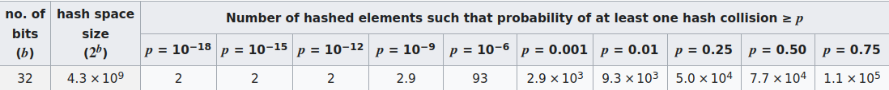
Assuming that about 10,000 independent but identically virtually-addressed page table entries are updated between each backup (e.g. half the PDDB is turned over but with perfect re-use of the address space), an adversary has about a 1% chance of finding a single colliding pair of ciphertexts between any two backups. However, all the adversary can note is that a particular ciphertext corresponds to some kind of page table entry, but they don't know which Basis, or what part of the Basis.
In the end, the information from differential ciphertext analysis of backup images on the data regions is an orders magnitude larger leakage of data allocation state, so the presumption is that this is a negligible vector. However, an alternative approach would be to use the nonce in a "counter" mode where it is incrementing. This would guarantee no collisions, until the counter rolled over at 4 billion re-allocation events, at which point, the ciphertext pattern would repeat. This is an improvement that will likely be rolled out in a later version of Xous.
Security
The PDDB has not been formally reviewed by a Cryptographer for security, and the author is not an expert at Cryptography. Use at your own risk.
Approach
As a matter of philosophy, there are no hand-rolled ciphers in the PDDB and we try to use, as much as practical, implementations directly from the RustCrypto community (the exceptions are the hardware-accelerated core primitives like AES, SHA and Curve25519, required for performance reasons). However, the PDDB itself is a novel construction and could very likely have issues.
Known Issues
The AES-GCM-SIV construction in particular was revealed to have a problem known as Salamanders. This has been worked around by requiring a key commitment in the root page of the cryptographic Bases. However, our implementation of a key commitment is hand-rolled, because there isn't a committee-blessed standard on how to do this (yet). We do follow the recommendations in this paper.
Finally, all confidentiality of the PDDB stems solely from the secrecy of the backup password, the boot PIN, and any secret Bases name/password combos. If you don't perform a backup, then the backup password is ostensibly only known to the hardware itself, and it requires an adversary with direct access to the device and its JTAG port to pull off any practical attack to extract the key. See this FAQ for limitations on using Precursor as a "true HSM".
There is no other magic, so protect those keys!
Encrypted Swap
Encrypted swap is a solution for small-footprint secure microcontrollers that must rely upon external RAM chips. The idea is to have the fast, on-chip RAM within the secure perimeter serve as the working set of data, but have this backed up with a "swapfile" consisting of slower, off-chip RAM that is also encrypted.
The swap implementation is modelled after the kind of swap space found in other operating systems like Linux. The kernel can over-commit pages of virtual memory, and data is only allocated when a program actually attempts to access the over-committed pages. When the on-chip memory gets full, the swapper will guess as to what pages are not being used and copy them to encrypted swap. The kernel is then free to mark those virtual memory pages as invalid, and re-allocate them to actively used data.
Terminology:
wiredrefers to pages that are resident in RAM and cannot be swapped outresidentrefers to a page in RAMfree RAMrefers unallocated internal RAMswappedrefers to a page in swapfree swaprefers to unallocated pages in external swap memoryreservedrefers to memory that has been over-committed, i.e., exists in virtual memory space but has no physical allocationallocatedrefers to memory that has been allocated, but could be in eitherresidentorswappedstates
Review of Virtual Memory Implementation Without Swap
In Xous, every process has a page table, including the kernel. The satp field of a process record stores the page address of the root of a process page table in satp.PPN. satp.ASID contains the PID.
The kernel is mapped into every process virtual memory space, in the top 16MiB of memory. Thus, the kernel is unique in that it is the only process that can access its physical pages alongside another process.
When each process is created, their page tables are populated with entries that hard-wire the program's code. The stack and heap are also fully allocated, but over-provisioned. Only the first page of each space is backed with physical memory; the rest is demand-paged. Thus, when a program starts, its maximum stack and heap extents are defined by the loader. These extents can be modified at runtime with a kernel syscall, but a program will OOM-fail even if there is physical memory available if its virtual stack and heap allocations are exhausted.
To review, each PTE has the following flags:
- V
valid: page contents are valid - R
read: page can be read - W
write: page can be written - X
execute: page is executable - U
user: page is accessible in user mode - G
global: page is in all address spaces - A
accessed: page has been accessed (read, execute, or write) (Vex does not implement) - D
dirty: page has been written since last time it was cleared (Vex does not implement) - S
shared: (part of RWS set) shared page - used by Xous to track if a page has been lent to another process - P
previously writable: (part of RWS set) previously writable (not used)
From the standpoint of memory management, a page can only have the following states:
- Allocated:
Vset - Fault: No flags are set, or
Sis set andVis not set - Reserved:
Vis not set, and at least one other flag is set except forS
Encryption Method
Swap is encrypted with an AEAD that is either AES-GCM-SIV or ChachaPoly (the choice will be determined based on benchmarked performance, and can even be changed on the fly since the encrypted information is ephemeral on every boot). The swap encryption key is generated from a hardware TRNG on boot. It is critical that this TRNG function correctly and be truly random early at boot.
The 16-byte AEAD MAC codes for every page are stored in a global appendix in untrusted RAM; this is fine, as the MAC is considered to be ciphertext, as all security derives from the key, but the swap space is reduced by this overhead. Detaching the MAC is done purely as a convenience to simplify page offset mapping computations; the detachment is not meant to imply the MAC is somehow cryptographically separable from the ciphertext block, as would be the case in e.g. a detachable signature scheme.
The nonce for the AEAD is derived as follows:
nonce[96] = {swap_count[32]|pid[8]|p_page[24]|v_page[24]}
This gives the following security properties:
- In all cases, pages cannot be replayed between reboots, as the key is generated on each boot
- Tampered pages in external memory are cryptographically likely to be detected (due to the 128-bit MAC code)
- Identical plaintext between two processes will not map to the same ciphertext
- Identical plaintext within a process will not map to the same ciphertext
- Ciphertext between two processes cannot be swapped to do code injection with ciphertext
- Ciphertext of one page within a process cannot be copied to a new page location in the same process and decrypt correctly
- Identical plaintext located in the same physical location and virtual location for the same process with the same swap count will create interchangeable ciphertext
The swap count of a page is a cryptographically small number (nominally 32 bits) that is used to track which page has been least-recently used (to manage evictions). The implementation will be coded to allow a larger number if necessary, but there is a trade-off between the size of this number and the amount of heap space needed to track every virtual page and its swap space; as the swap grows large, the overhead can start to overwhelm the amount of memory available in a small footprint microcontroller.
The last property means that, for example, it is possible to infer something about the heap or stack of a running process that has been swapped out. In particular, we can detect if a region of stack or heap memory has been modified & swapped, and then restored to the original data & swapped, once the swap count is saturated.
This can be used for the following malicious activities:
- Build a side channel to exfiltrate data via swap
- Force a running process into a previous stack or heap configuration by recording and restoring pages after forcing the swap count to roll over
Mitigation of this vulnerability relies upon these factors:
- It takes a long time to push the swap count to 32 bits. This is the equivalent of encrypting and decrypting about 17 terabytes of data using the embedded controller. This would take over 22 years if the microcontroller can run AES-GCM-SIV bidirectionally at a rate of 100MiB/s. An Apple M1 Pro can achieve 590MiB/s unidirectionally, so this is an optimistic estimate for an embedded controller running at a few hundred MHz. A similar analysis can be done for ChachaPoly.
- Instead of saturating, the swap count must roll-over. This means that the LRU algorithm will suffer a performance degradation after a "long time" (see previous bullet for bounds on that), but by avoiding saturation it means an attacker has a single window of opportunity to re-use a page before having to roll over again (or they must keep a log of all the pages). This isn't a cryptographically strong defense, but it practically complicates any attack with little cost in implementation.
- The swap count can be increased to up to 40 bits in size (any larger would overflow the nonce size considering the other data concatenated into the nonce), if further strength is desired, at a considerable price on 32-bit microcontrollers.
Swap Implementation
Swap is a kernel feature that is enabled with the flag swap.
Swap is intended to be implemented using an off-chip SPI RAM device. While it is most performant if it is a memory mapped RAM, it does not need to be; the swapper shall be coded with a HAL that can also handle SPI devices that are accessible only through a register interface.
Image Creation
swap configured builds cannot assume that all the static code can fit inside the secure FLASH within a microcontroller.
Thus, the image creator must take regions marked as IniS and locate them in a "detached blob" from the main xous.img.
The security properties of the two images are thus:
xous.imgis assumed to be written into a secure on-chip FLASH region, and is unencrypted by default.swap.imgis assumed to be written to an off-chip SPI FLASH memory, and is untrusted by default.
A simple bulk signature check on swap.img, like that used on xous.img, is not going to cut it in an adversarial
environment, because of the TOCTOU inherent in doing a hash-and-check and then bulk-copy over a slow bus like SPI.
Thus, the following two-phase scheme is introduced for distributing swap.img.
The AEAD shall be either ChachaPoly or AES-256, depending upon which is more performant (to be updated). We use a "detached-MAC" scheme only because it makes mapping block offsets in the ciphertext stream to block offsets in the plaintext stream logically easier. There's no cryptographic meaning in detaching the MAC.
- In phase 1,
swap.imgis encrypted using an AEAD to a "well-known-key" of0, where each block in FLASH encrypts a page of data, and the MAC are stored in an appendix to theswap.img. The first page is an unprotected directory that defines the expected offset of all the MAC relative to the encrypted blocks in the image file, and contains the 64-bit nonce seed + AAD. The problem of whether to accept an update is outside the scope of this spec: it's assumed that if an update is delivered, it's updated with some signature tied to a certificate in a transparency log that is confirmed by the user at update time. This does mean there is a potential TOCTOU of the bulk update data versus signing at update time, but we assume that the update is done as an atomic operation by the user in a "safe" environment, and that an adversary cannot force an update of theswap.imgthat meets the requirements of phase 2 without user consent. - In phase 2,
swap.imgis re-encrypted to a locally generated key, which is based on a key stored only in the device and derived with the help of a user-supplied password. This prevents adversaries from forcing an update toswap.imgwithout a user's explicit consent. NOTE: the key shall not be re-used betweenswap.imgupdates; it should be re-generated on every update. This does mean that the signature on thexous.imgshall change on every update, but this is assumed to be happening already on an update.
In order to support this scheme, the Swap kernel argument contains a key field. The image creator sets this to a 256-bit "all zero" key initially for distribution and initial device image creation. Once the device is provisioned with a root key, the provisioning routine shall also update the kernel arguments (which are stored inside the secure FLASH region) with the new key, and re-encrypt the swap detached blob in SPI FLASH to the unique device key before rebooting.
If followed correctly, a device is distributed "naive" and malleable, but once the keying ceremony is done, it should be hard to intercept and/or modify blocks inside swap.img, since the block-by-block read-in and authentication check provides a strong guarantee of consistency even in the face of an adversary that can freely MITM the SPI bus.
This is different from the detached-signature with unencrypted body taken for on-chip FLASH, which is a faster, easier method, but only works if the path to FLASH memory is assumed to be trusted.
The nonce for the swap.img AEAD is 96 bits, where the lower 32 bits track the block offset, and the upper 64 bits are the lower 64 bits of the git commit corresponding to the swap.img. This 64-bit git commit is stored as a nonce seed in the unprotected header page along with the offset of the MAC + AAD data. The incorporation of the git commit helps protect against bugs in the implementation of the locally generated key. The locally generated key should not be re-used between updates, but tying the nonce to the git commit should harden against chosen ciphertext attacks in the case that the generated key happens to be re-used.
The AAD shall be the ASCII string 'swap'. I don't think it's strictly necessary, but might as well have domain separation.
Boot Setup: Loader
The loader gets new responsibilities when swap is enabled:
- The loader needs to be aware of both the location and size of the trusted internal unencrypted RAM (resident memory), and the external encrypted RAM (swap memory).
- The resident memory is tracked using the existing "Runtime Page Tracker" (RPT) mechanism.
- Additional structures are created, located at virtual address
0xE000_0000and mapped into PID2's memory space:- The "Swap Page Tables" (SPT), which is a slice of pointers to swap page table structures. Every process starts with a root page table page pre-allocated, even if it does not use swap. Any page table pages allocated are placed in the 0xE000_0000 memory range; however, at run-time any additional pages needed will be allocated using
MapMemorycalls to the kernel and thus placed in the swapper's heap region. - The "Swap MAC Table" (SMT), which tracks the 16-byte MAC codes for every page in swap. It does not degrade security to locate the SMT in swap. The size is fixed, and is proportional to the size of swap.
- A copy of the RPT, except with
wiredmemory marked with a PID of 0 (pages marked with the kernel's PID, 1, are free memory; the kernel code itself is marked 0 andwired). The size is fixed, and is proportional to the total size of internal (resident) RAM.
- The "Swap Page Tables" (SPT), which is a slice of pointers to swap page table structures. Every process starts with a root page table page pre-allocated, even if it does not use swap. Any page table pages allocated are placed in the 0xE000_0000 memory range; however, at run-time any additional pages needed will be allocated using
- All of these structures must be mapped into PID2's memory space by the loader
- The "Swap Count Tracker" is not allocated by the loader. However, the swap count of pages in swap is guaranteed to be set to 0 by the loader.
- The loader is responsible for querying the TRNG on every boot to generate the session key for encrypting off-chip RAM.
- A new image tag type is created
inis, to indicate data that should start in encrypted swap. - A kernel argument with tag
swapis created. It contains the userspace address for PID2 (the swapper) of the SPT, SMT, and RPT structures.
The SPT has the same structure as system page tables. However, SPT entries are only allocated on-demand for processes that have swap; it is not a full copy of every page in the system page table.
INIF handling
Regions marked as xip (i.e, marked as inif type) are assumed to FLASH that is contained within the secure perimeter of the microcontroller. These regions are mapped directly and unencrypted into the kernel memory space.
These boot-critical processes must be xip, and are never swapped out:
- kernel
- swapper
- ticktimer
More regions can be marked as xip; this is preferable, because if the code is resident in on-chip FLASH, they aren't taking up working-set RAM and things will run faster.
The initial data set of inif processes are considered to be wired; however, their reserved memory regions can be swapped after allocation.
INIE handling
Regions marked as inie are copied to the working set RAM and executed out of RAM. It is assumed this tag is mostly unused in microcontrollers with a small internal working set, but the behavior is not modified because it is a valid and useful tag for devices with large, trusted RAMs.
INIS handling
Regions marked as inis are copied into encrypted swap on boot. The kernel page table state start out with the correct R/W/X/U values, but V is not set, and P is set. Entries are created in the SPT to inform the tracker where to find the pages.
An kernel argument of type swap is provided, which is a base and bounds to the SPT/SMT region. This is meant to passed to the swapper process when it registers to the kernel.
The image creation routine and kernel arguments need to be extended to support inis regions located in off-chip SPI FLASH. The off-chip data is not encrypted, but it is signature checked with a dedicated signature block. Note that the off-chip SPI FLASH does not need to be memory mapped: the loader may read the memory through a register interface.
Kernel Runtime
Systems with swap enabled must have a process located at PID 2 that is the swapper. The kernel will only recognize swap extension syscalls originating from PID 2.
The following kernel syscall extensions are recognized when the swap feature is activated:
RegisterSwapperEvictPage
The kernel page fault handler must also be extended to handle swapped pages by invoking the swapper to recover the contents.
The userspace swapper handles two classes of events. The first are blocking events, handled in an interrupt-like context where all IRQs are disabled. These are "atomic" swap operations, and cannot invoke any syscalls that could block, or wait on any events. The second are non-blocking events and are queued into the swapper like any other message.
Thus, preemption requests are ignored during a blocking swap event, because external IRQs are disabled.
Finally, the swapper shall not allow any shared-state locks on data structures required to satisfy a swap request. Such a lock will lead to a system hang with no error message, since what happens is the swapper will busy-wait eternally because preemption has been disabled.
Blocking Events
Blocking events are called with a list of 8 arguments in an interrupt-like context. Not all arguments are valid for all calls; the 8 arguments are an upper bound and must all be set to something due to the strictness of Rust function call prototypes.
Here are the types of blocking events that the swapper must handle:
WriteToSwap: Copy & encrypts a physical page to swap. Arguments include the original processes' PID and virtual address.ReadFromSwap: Retrieve & decrypts a page from swap, and copies it to a designated physical page. Arguments include the target process PID and virtual address for the page to retrive.AllocateAdvisory: Informs the swapper that a page in free RAM was allocated to a given PID and virtual address. Only reports on pages that are allocated out of free RAM, and it includes a flag to indicate if the allocation waswiredor not. Recall thatwiredmemory cannot be swapped.AllocateAdvisorymay be coded to "bulk up" a couple of allocate requests for better efficiency.Free: Informs the swapper that a page was de-allocated by a process.
These are processed with interrupts disabled, and have the same rules as interrupt handlers in terms of safe calls that can be performed.
The blocking responder inside the swapper must be atomic: in other words, every kernel request that comes in must be fully handled without any dependencies or stalls on other processes, and upon satisfaction the swapper must be immediately ready for another blocking request. In particular: you can't use the log crate for debugging.
Non-Blocking Events
Trim: (this might be a bad idea) a request from the kernel to free up N pages. Normally the kernel would not call this, as the swapper should be pre-emptively clearing space, but it is provided as a last-ditch method in case of an OOM.ProcessAdvisory: This is a scalar message generated by a blockingAllocateAdvisorymessage via thetry_send_messagemethod that tells the swapper to decide if anEvictPagecall is needed.ProcessAdvisorycan be safely missed if the message queue overflows.
Non-blocking events happen in the normal userspace server thread.
Flags and States
When swap is enabled, the flags have the following meaning:
- V
valid: page contents are valid - R
read: page can be read - W
write: page can be written - X
execute: page is executable - U
user: page is accessible in user mode - G
global: page is in all address spaces - A
accessed: page has been accessed (read, execute, or write) (Vex does not implement) - D
dirty: page has been written since last time it was cleared (Vex does not implement) - S
shared: (part of RWS set) shared page - used by Xous to track if a page has been lent to another process - P
swapped: (part of RWS set) page is in swap
From the standpoint of memory management, a page can only have the following states:
Allocated:Vset,Pmay not be setFault: No flags are set, orSis set andVis not setSwapped:Pis set.Vis not set.Smay also not be set. Upon access to this page, the kernel allocates a resident page and callsReadFromSwapto fill it. The page will move to theAllocatedstate on conclusion.Reserved:Vis not set,Pis not set, and at least one other flag is set except forS. A kernel allocates a resident page and zeros it. The page will move to theAllocatedstate on conclusion.
Pages go from Allocated to Swapped based on the swapper observing that the kernel is low on memory, and calling a series of EvictPage calls to free up memory. It is always assumed that the kernel can allocate memory when necessary; as a last ditch the kernel can attempt to call Trim on the swapper, but this should only happen in extreme cases of memory pressure.
Pages go from Allocated to Reserved when a process unmaps memory.
When the swapper runs out of space, WriteToSwap panics with an OOM.
RegisterSwapper Syscall
The swapper registers with the kernel on a TOFU basis. The kernel reserves a single 128-bit sid with the target of the swapper, and it will trust the first process to use the RegisterSwapper syscall with its 128-bit random ID.
After registration, the kernel sends a message to the swapper with the location of the SPT/SMT regions as created by the bootloader, as well as the base and bounds of the free memory pool. The free memory pool is the region remaining after boot, after the loader has marked all the necessary RAM pages as wired.
EvictPage Syscall
EvictPage is a syscall that only the swapper is allowed to call. It is a scalar send message, which contains the PID and address of the page to evict. Upon receipt, the kernel will:
- Change into the requested PID's address space
- Lookup the physical address of the evicted page
- Clear the
Vbit and set thePbit of the evicted page's PTE - Mark the RPT entry as free
- Change into the swapper's address space
- Mutably lend the evicted physical page to the swapper with a
WriteToSwapmessage - Schedule the swapper to run
Swapper Responsibilities
It is the swapper's responsibility to maintain a structure that keeps track of every page in the free RAM pool. It builds this using the AllocateAdvisory messages.
When the amount of free RAM falls below a certain threshold, the swapper will initiate a Trim operation. A kernel can also initiate a Trim as a last-ditch in case the swapper was starved of time and was unable to initiate a Trim, but this meant to be avoided.
In a Trim operation, the swapper picks the pages it thinks will have the least performance impact and calls EvictPage to remove them. Initially, the swapper will have no way to know what pages are most important; it must use a heuristic to guess the first pages to evict. However, since it must track how frequently a page has been swapped with the swap_count field (necessary for encryption), it can rely upon this to build an eventual map of which pages to avoid.
The swapper is also responsible for responding to WriteToSwap and ReadFromSwap calls.